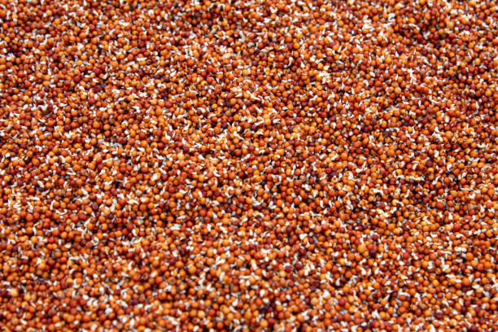
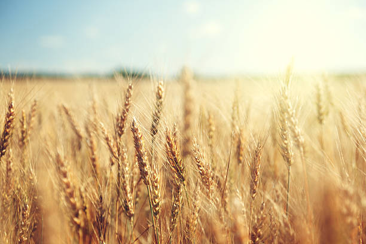
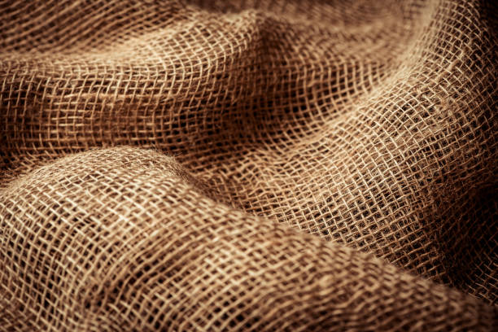
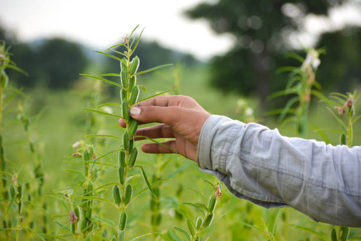
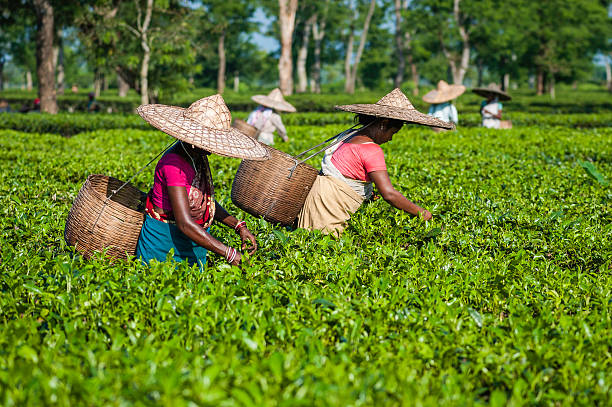

<html lang="en"></html>

<head>
    <meta charset="UTF-8">
    <meta name="Generator" content="EditPlus®">
    <meta name="Author" content="">
    <meta name="Keywords" content="">
    <meta name="Description" content="">
    <meta name="viewport" content="width=device-width, initial-scale=1.0">
    <title>AD-GROWN</title>
    <style>
        @media (min-width: 1000px) {
            #a {
                display: flex;
            }

            .b {
                width: 280%;
            }

            .c {
                width: 180%;
            }
        }


        /* Style the container for the Google Translate Element */
        #google_translate_element_container {
            position: fixed;
            bottom: 10px;
            right: 10px;
            z-index: 9999;
            transition: box-shadow 0.3s ease;
            /* Add transition for a smoother effect */
        }

        /* Style the Google Translate Element */
        #google_translate_element {
            border: 1px solid rgba(255, 174, 0);
            /* Cyan border color */
            padding: 10px;
            background-color: #f0f8ff;
            /* AliceBlue background color */
            border-radius: 5px;
            box-shadow: 0 0 10px rgba(255, 174, 0);
            /* Initial box-shadow */
        }

        /* Add box-shadow when hovering over the container */
        #google_translate_element_container:hover {
            box-shadow: 0 0 5px rgb(255, 174, 0),
                0 0 25px rgb(255, 174, 0),
                0 0 50px rgb(255, 174, 0);
        }

        @media (max-width: 460px) {
            #imgX {
                height: 200px;
                width: 300px;
            }

        }
    </style>
    <script type="text/javascript"
        src="https://translate.google.com/translate_a/element.js?cb=googleTranslateElementInit"></script>
    <script type="text/javascript">
        function googleTranslateElementInit() {
            new google.translate.TranslateElement({ pageLanguage: 'tel', layout: google.translate.TranslateElement.InlineLayout }, 'google_translate_element');
        }
    </script>
</head>

<body>
    <div id="google_translate_element_container">
        <div id="google_translate_element"></div>
    </div>
    <!--మొక్కజొన్న అని కూడా పిలువబడే మొక్కజొన్న, ప్రపంచంలోని అనేక ప్రాంతాలలో ప్రధానమైన పంట.  మొక్కజొన్న యొక్క పెరుగుతున్న విధానం నాటడం నుండి కోత వరకు అనేక దశలను కలిగి ఉంటుంది.  మొక్కజొన్న సాగు విధానం యొక్క సంక్షిప్త అవలోకనం ఇక్కడ ఉంది:

 నేల తయారీ: 6.0-7.5 pHతో బాగా ఎండిపోయిన నేలలో మొక్కజొన్న బాగా పెరుగుతుంది.  మట్టిని 6-8 అంగుళాల లోతు వరకు దున్నాలి మరియు ఏవైనా కలుపు మొక్కలు లేదా రాళ్లను తొలగించాలి.

 నాటడం: మొక్కజొన్న సాధారణంగా వసంతకాలంలో పండిస్తారు, మంచు ప్రమాదం దాటిన తర్వాత.  విత్తనాలను 1-2 అంగుళాల లోతులో, 30-36 అంగుళాల దూరంలో ఉన్న వరుసలలో నాటాలి.

 అంకురోత్పత్తి: మొక్కజొన్న విత్తనాలు 7-10 రోజులలో మొలకెత్తుతాయి, నేల తేమగా మరియు ఉష్ణోగ్రత తగినంతగా ఉంటే.  విత్తనం ఒక చిన్న రూట్ మరియు రెమ్మను పంపుతుంది, ఇది చివరికి మొక్కజొన్న మొక్కగా పెరుగుతుంది.

 పెరుగుదల: మొక్కజొన్న మొక్క పెరుగుతూనే ఉంటుంది, ఆకులు మరియు కాండాలను అభివృద్ధి చేస్తుంది.  ఇది కూడా tassels మరియు చెవులు ఉత్పత్తి ప్రారంభమవుతుంది.

 పరాగసంపర్కం: మొక్క పైభాగంలో ఉన్న టాసెల్స్‌లో మగ పువ్వులు ఉంటాయి, చెవుల్లో ఆడ పువ్వులు ఉంటాయి.  టసెల్స్ నుండి పుప్పొడి చెవుల పట్టుపై పడినప్పుడు పరాగసంపర్కం జరుగుతుంది.

 చెవి అభివృద్ధి: చెవులు పరాగసంపర్కం జరిగిన తర్వాత, అవి కెర్నలు అభివృద్ధి చెందడం ప్రారంభిస్తాయి.  ప్రతి కెర్నల్ ఒక పట్టుకు జోడించబడి ఉంటుంది, ఇది చివరికి ఎండిపోయి పడిపోతుంది.

 హార్వెస్టింగ్: మొక్కజొన్న సాధారణంగా శరదృతువులో పండిస్తారు, చెవులు పూర్తిగా పరిపక్వం చెందినప్పుడు మరియు కాండాలు మరియు ఆకులు గోధుమ రంగులోకి మారుతాయి.  చెవులను చేతితో లేదా యాంత్రిక హార్వెస్టర్ ఉపయోగించి పండిస్తారు.

 మొత్తంమీద, మొక్కజొన్న సాగు విధానంలో జాగ్రత్తగా నేల తయారీ, సరైన సమయంలో నాటడం మరియు అంకురోత్పత్తి, పెరుగుదల, పరాగసంపర్కం మరియు చెవి అభివృద్ధికి సరైన పరిస్థితులను నిర్ధారించడం వంటివి ఉంటాయి.
jowar
జొన్న అని కూడా పిలువబడే జొన్న, దాని ధాన్యాల కోసం విస్తృతంగా పండించే తృణధాన్యాల పంట. జోవర్ పెరుగుదల ప్రక్రియను అనేక దశలుగా విభజించవచ్చు:

విత్తన ఎంపిక మరియు నాటడం: చేతితో లేదా మెకానికల్ ప్లాంటర్‌ని ఉపయోగించి నాటడానికి అధిక-నాణ్యత గల విత్తనాలను ఎంపిక చేస్తారు. విత్తనాలు బాగా తయారుచేసిన నేలలో, సాధారణంగా వరుసలలో పండిస్తారు.

అంకురోత్పత్తి మరియు మొలక దశ: నాటిన తరువాత, జొన్న గింజలు మొలకెత్తుతాయి మరియు మొలకలుగా పెరుగుతాయి. ఈ దశలో, బలమైన రూట్ వ్యవస్థను ఏర్పాటు చేయడానికి మరియు ఆరోగ్యకరమైన ఆకులను అభివృద్ధి చేయడానికి మొలకలకు తగినంత తేమ, వెచ్చదనం మరియు పోషకాలు అవసరం.

ఏపుగా పెరగడం: జొన్న మొక్కలు మంచి రూట్ వ్యవస్థను ఏర్పాటు చేసుకున్న తర్వాత, అవి ఏపుగా పెరగడంపై దృష్టి పెడతాయి. మొక్కలు పెద్దవిగా పెరుగుతాయి మరియు కిరణజన్య సంయోగక్రియ మరియు ధాన్యం ఉత్పత్తికి ముఖ్యమైన ఆకులు మరియు కొమ్మలను అభివృద్ధి చేస్తాయి. మొక్కలు ఆరోగ్యకరమైన పెరుగుదలను ప్రోత్సహించడానికి క్రమం తప్పకుండా నీటిపారుదల మరియు ఫలదీకరణం చేయబడతాయి.

పుష్పించే మరియు ధాన్యం ఏర్పడటం: దాదాపు 45-60 రోజుల పెరుగుదల తర్వాత, జొన్న మొక్కలు పుష్పాలను ఉత్పత్తి చేయడం ప్రారంభిస్తాయి. పువ్వులు గాలి లేదా స్వీయ-పరాగసంపర్కం ద్వారా పరాగసంపర్కం చేయబడతాయి. పరాగసంపర్కం తరువాత, పువ్వులు ధాన్యాలుగా అభివృద్ధి చెందుతాయి, ఇవి స్పైక్ లాంటి పానికిల్‌లో ఉంటాయి.

ధాన్యం పరిపక్వత మరియు హార్వెస్టింగ్: ధాన్యాలు పరిపక్వం చెందడానికి దాదాపు 90-120 రోజులు పడుతుంది, ఈ సమయంలో పానికిల్ లోపల ధాన్యాలు పెరుగుతాయి మరియు అభివృద్ధి చెందుతాయి. పానికిల్స్ ఆకుపచ్చ నుండి గోధుమ రంగులోకి మారుతాయి, అవి పూర్తిగా పరిపక్వం చెందాయని సూచిస్తున్నాయి. జొన్నను సాధారణంగా మొక్క నుండి కాయలను కత్తిరించి వాటిని నూర్పిడి చేయడం ద్వారా ధాన్యాలను మొక్కల పదార్థం నుండి వేరు చేయడం ద్వారా పండిస్తారు.

పంటకోత తర్వాత ప్రాసెసింగ్: పంట కోసిన తర్వాత, ధాన్యాలను శుభ్రం చేసి, ఏదైనా చెత్త లేదా దెబ్బతిన్న గింజలను తొలగించడానికి క్రమబద్ధీకరించబడతాయి. ధాన్యాలను ఆహారం, పశుగ్రాసం లేదా జీవ ఇంధన ఉత్పత్తికి ఉపయోగించవచ్చు.

మొత్తంమీద, జోవర్ యొక్క పెరుగుదల ఉష్ణోగ్రత, తేమ మరియు సూర్యకాంతి వంటి పర్యావరణ కారకాల సంక్లిష్ట పరస్పర చర్యను కలిగి ఉంటుంది, అలాగే మొక్క యొక్క పెరుగుదల మరియు అభివృద్ధిని నిర్ణయించే జన్యుపరమైన కారకాలు. ఆరోగ్యకరమైన మరియు ఉత్పాదక పంటను నిర్ధారించడానికి తగినంత నీటి నిర్వహణ, పోషకాల నిర్వహణ మరియు తెగులు నియంత్రణ చాలా ముఖ్యమైనవి.
సొర్గుమ్ 
పెడి 
చిల్లి 
మేజ్ -->
    <CENTER>
        <H1><strong>1.RICE / 1.ଚାଉଳ</strong></H1>
    </CENTER>
    <center>
        
    </center>
    <DIV id="a" style="color:blue;justify-content:space-evenly;">
        <CENTER>
            <h2 class="notranslate" style="border:3px solid orange; color:BLACK;">
                <CENTER>
                    <h3>ENGLISH</h3>
                </CENTER>
                Rice is a staple food for a large portion of the world's population and is extensively cultivated in India. It thrives in warm, wet conditions and requires careful management from seed selection to harvesting. Below is the step-by-step growing mechanism for rice:<br><br>

                1] <U>Seed Selection:</U> <br>
                Choosing high-quality, disease-resistant seeds is crucial. Various rice varieties are available, including short, medium, and long-duration types. Seeds should be treated with fungicides to prevent seed-borne diseases before sowing.<br><br>

                2] <U>Land Preparation: </U> <br>
                Land is prepared by plowing and leveling to create a suitable seedbed. Fields are often flooded to a depth of 5-10 cm to suppress weeds and pests. Proper drainage should also be ensured for later stages of growth.<br><br>

                3] <U>Sowing: </U> <br>
                Rice can be sown using two methods: direct seeding or transplanting seedlings. In direct seeding, seeds are broadcasted or drilled into wet soil. In transplanting, seedlings are raised in nurseries for 20-30 days before being transplanted into puddled fields, typically spaced 20-25 cm apart.<br><br>

                4] <U>Germination: </U> <br>
                After sowing, rice seeds absorb water and swell, leading to germination. The radicle emerges first, followed by the shoot. Germination usually occurs within 4-10 days, depending on temperature and water conditions.<br><br>

                5] <U>Vegetative Growth: </U> <br>
                The rice plant enters the vegetative phase, where it develops leaves, stems, and roots. During this phase, plants require adequate sunlight, nutrients, and water. Nitrogen-rich fertilizers are commonly applied to support healthy growth.<br><br>

                6] <U>Tillering: </U> <br>
                As the plant matures, it produces additional shoots known as tillers. This process typically occurs around 3-4 weeks after germination. The number of tillers produced is influenced by water availability and nutrient levels, significantly affecting yield potential.<br><br>

                7] <U>Flowering: </U> <br>
                Approximately 60-90 days after sowing, rice plants begin to flower. The flowering stage, known as panicle initiation, involves the formation of flower clusters at the top of the stem. This stage is critical for yield as it requires optimal weather conditions and pollination.<br><br>

                8] <U>Pollination:</U> <br>
                Rice flowers are self-pollinated, with pollen being transferred within the same flower. Wind plays a role in the process, and a slight breeze can enhance pollination efficiency. Adequate moisture and humidity are important during this stage.<br><br>

                9] <U>Grain Filling: </U> <br>
                After pollination, the fertilized flowers develop into grains. This stage is crucial for determining grain quality and yield. The grains begin to fill with starch, and the plants require sufficient nutrients and water.<br><br>

                10] <U>Ripening: </U> <br>
                The grains mature and change color, moving from green to golden yellow. This phase usually lasts 20-30 days, during which the water levels in the field may be reduced to allow the soil to dry slightly before harvesting.<br><br>

                11] <U>Pest and Disease Management: </U> <br>
                Rice crops are susceptible to various pests and diseases, including rice weevils and blast disease. Integrated Pest Management (IPM) practices, such as crop rotation and the use of resistant varieties, are essential to mitigate these threats.<br><br>

                12] <U>Harvesting: </U> <br>
                Rice is typically harvested 120-150 days after sowing, when the grains are hard and the plants have turned yellow. Harvesting can be done manually or with mechanized equipment. It is important to avoid harvesting too early or too late to prevent grain loss.<br><br>

                13] <U>Post-Harvest Processing:</U> <br>
                After harvesting, rice is threshed to separate the grains from the straw. The grains are then cleaned, dried, and stored in a cool, dry place to prevent moisture absorption and pest damage.<br><br>

                14] <U>Storage and Pest Control: </U> <br>
                To maintain quality, harvested rice should be stored in airtight containers or silos. Regular inspections and treatments with appropriate insecticides can prevent infestations by pests like rice weevils.<br><br>

                Rice cultivation requires careful management of water, nutrients, and pests throughout the growing cycle to ensure a successful and productive harvest.
            </h2>
        </CENTER>
        <div class="b" id="translateThisSection" style="color:blACK; text-align:center;">
            <center>
                <h3 style="border:3px solid orange; color:BLACK;">
                    <CENTER>
                        <h1>ଓଡିଆ</h1>
                    </CENTER>
                    ଚାଉଳ ବିଶ୍ population ର ଜନସଂଖ୍ୟାର ଏକ ବଡ଼ ଅଂଶ ପାଇଁ ଏକ ମୁଖ୍ୟ ଖାଦ୍ୟ ଏବଂ ଏହା ଭାରତରେ ବ୍ୟାପକ ଭାବରେ ଚାଷ କରାଯାଏ | ଏହା ଉଷ୍ମ, ଓଦା ଅବସ୍ଥାରେ ବ ives େ ଏବଂ ବିହନ ଚୟନ ଠାରୁ ଅମଳ ପର୍ଯ୍ୟନ୍ତ ଯତ୍ନଶୀଳ ପରିଚାଳନା ଆବଶ୍ୟକ କରେ | ଚାଉଳ ପାଇଁ ପର୍ଯ୍ୟାୟ କ୍ରମେ ବ growing ୁଥିବା ପ୍ରଣାଳୀ ନିମ୍ନରେ ଦିଆଯାଇଛି:<br><br>

                    1] <U>ବିହନ ଚୟନ:</U> <br>
                    ଉଚ୍ଚମାନର, ରୋଗ ପ୍ରତିରୋଧକ ମଞ୍ଜି ବାଛିବା ଅତ୍ୟନ୍ତ ଗୁରୁତ୍ୱପୂର୍ଣ୍ଣ | କ୍ଷୁଦ୍ର, ମଧ୍ୟମ ଏବଂ ଦୀର୍ଘକାଳୀନ ପ୍ରକାର ସହିତ ବିଭିନ୍ନ ଚାଉଳ କିସମ ଉପଲବ୍ଧ | ବିହନ ବୁଣିବା ପୂର୍ବରୁ ବିହନ ଦ୍ diseases ାରା ହେଉଥିବା ରୋଗକୁ ରୋକିବା ପାଇଁ ଫଙ୍ଗିସାଇଡ୍ ସହିତ ବିହନ ଚିକିତ୍ସା କରାଯିବା ଉଚିତ୍ |<br><br>

                    2] <U>ଜମି ପ୍ରସ୍ତୁତି:</U> <br>
                    ଏକ ଉପଯୁକ୍ତ ବିହନ ତିଆରି ପାଇଁ ଜମି ହଳ କରିବା ଏବଂ ସମତଳ କରି ପ୍ରସ୍ତୁତ କରାଯାଏ | ତୃଣକ ଏବଂ କୀଟନାଶକକୁ ଦମନ କରିବା ପାଇଁ କ୍ଷେତଗୁଡିକ 5-10 ସେମି ଗଭୀରତାରେ ବୁଡ଼ିଯାଏ | ପରବର୍ତ୍ତୀ ପର୍ଯ୍ୟାୟ ବୃଦ୍ଧି ପାଇଁ ସଠିକ୍ ଜଳ ନିଷ୍କାସନ ମଧ୍ୟ ନିଶ୍ଚିତ କରାଯିବା ଉଚିତ୍ |<br><br>

                    3] <U>ବୁଣିବା:</U> <br>
                    ଦୁଇଟି ପଦ୍ଧତି ବ୍ୟବହାର କରି ଚାଉଳ ବୁଣାଯାଇପାରିବ: ସିଧାସଳଖ ବିହନ ବୁଣିବା କିମ୍ବା ବିହନ ବୁଣିବା | ସିଧାସଳଖ ବିହନରେ ମଞ୍ଜି ପ୍ରସାରିତ ହୁଏ କିମ୍ବା ଓଦା ମାଟିରେ ଖୋଳାଯାଏ | ପ୍ରତିରୋପଣରେ, ବିହନଗୁଡିକ ନର୍ସରୀରେ 20-30 ଦିନ ପର୍ଯ୍ୟନ୍ତ ପୋଖରୀ କ୍ଷେତରେ ସ୍ଥାନାନ୍ତରିତ ହେବା ପୂର୍ବରୁ ବ raised ାଯାଏ, ସାଧାରଣତ 20 20-25 ସେମି ବ୍ୟବଧାନରେ ବ୍ୟବଧାନ କରାଯାଏ |<br><br>

                    4] <U>ଅଙ୍କୁର:</U> <br>
                    ବିହନ ବୁଣିବା ପରେ ଚାଉଳ ମଞ୍ଜି ଜଳ ଶୋଷେ ଏବଂ ଫୁଲିଯାଏ, ଯାହା ଅଙ୍କୁରିତ ହୁଏ | ପ୍ରଥମେ ରେଡିକଲ୍ ଉତ୍ପନ୍ନ ହୁଏ, ତା’ପରେ ଗୁଳି | ତାପମାତ୍ରା ଏବଂ ଜଳ ଅବସ୍ଥା ଉପରେ ନିର୍ଭର କରି ସାଧାରଣତ 4 4-10 ଦିନ ମଧ୍ୟରେ ଅଙ୍କୁରିତ ହୁଏ |<br><br>

                    5] <U>ଶାକାହାରୀ ଅଭିବୃଦ୍ଧି:</U> <br>
                    ଚାଉଳ ଉଦ୍ଭିଦ ଶାକାହାରୀ ପର୍ଯ୍ୟାୟରେ ପ୍ରବେଶ କରେ, ଯେଉଁଠାରେ ଏହା ପତ୍ର, ଡାଳ ଏବଂ ମୂଳର ବିକାଶ କରିଥାଏ | ଏହି ପର୍ଯ୍ୟାୟରେ, ଉଦ୍ଭିଦଗୁଡିକ ପର୍ଯ୍ୟାପ୍ତ ସୂର୍ଯ୍ୟ କିରଣ, ପୁଷ୍ଟିକର ଏବଂ ଜଳ ଆବଶ୍ୟକ କରନ୍ତି | ନାଇଟ୍ରୋଜେନ ଯୁକ୍ତ ସାର ସାଧାରଣତ healthy ସୁସ୍ଥ ବୃଦ୍ଧିକୁ ସମର୍ଥନ କରିବା ପାଇଁ ପ୍ରୟୋଗ କରାଯାଏ |<br><br>

                    6] <U>ଟିଲିରିଙ୍ଗ୍:</U> <br>
                    ଉଦ୍ଭିଦ ପରିପକ୍ୱ ହେବା ସହିତ ଏହା ଟିଲର୍ ଭାବରେ ଜଣାଶୁଣା ଅତିରିକ୍ତ ଶୁଟ୍ ଉତ୍ପାଦନ କରେ | ଏହି ପ୍ରକ୍ରିୟା ସାଧାରଣତ germ ଅଙ୍କୁରିତ ହେବାର ପ୍ରାୟ 3-4 ସପ୍ତାହ ପରେ ହୁଏ | ଉତ୍ପାଦିତ ଟିଲର ସଂଖ୍ୟା ଜଳ ଉପଲବ୍ଧତା ଏବଂ ପୁଷ୍ଟିକର ସ୍ତର ଦ୍ୱାରା ପ୍ରଭାବିତ ହୋଇଥାଏ, ଅମଳ ସମ୍ଭାବନାକୁ ଯଥେଷ୍ଟ ପ୍ରଭାବିତ କରିଥାଏ |<br><br>
                    
                    7] <U>ଫୁଲ:</U> <br>
                    ବୁଣିବାର ପ୍ରାୟ 60-90 ଦିନ ପରେ ଚାଉଳ ଗଛ ଫୁଲିବା ଆରମ୍ଭ କରେ | ଫୁଲର ପର୍ଯ୍ୟାୟ, ପାନିକଲ୍ ପ୍ରାରମ୍ଭ ଭାବରେ ଜଣାଶୁଣା, ଷ୍ଟେମର ଉପରି ଭାଗରେ ଫୁଲ କ୍ଲଷ୍ଟର ଗଠନ ସହିତ ଜଡିତ | ଏହି ପର୍ଯ୍ୟାୟ ଅମଳ ପାଇଁ ଅତ୍ୟନ୍ତ ଗୁରୁତ୍ୱପୂର୍ଣ୍ଣ କାରଣ ଏହା ଉତ୍ତମ ପାଣିପାଗ ପରିସ୍ଥିତି ଏବଂ ପ୍ରଦୂଷଣ ଆବଶ୍ୟକ କରେ |<br><br>

                    8] <U>ପ୍ରଦୂଷଣ:</U> <br>
                    ଚାଉଳ ଫୁଲଗୁଡିକ ସ୍ poll- ପ୍ରଦୂଷିତ, ସମାନ ଫୁଲ ମଧ୍ୟରେ ପଲିଥିନ ସ୍ଥାନାନ୍ତରିତ ହୁଏ | ଏହି ପ୍ରକ୍ରିୟାରେ ପବନ ଏକ ଭୂମିକା ଗ୍ରହଣ କରିଥାଏ ଏବଂ ସାମାନ୍ୟ ପବନ ପ୍ରଦୂଷଣ ଦକ୍ଷତାକୁ ବ enhance ାଇପାରେ | ଏହି ପର୍ଯ୍ୟାୟରେ ପର୍ଯ୍ୟାପ୍ତ ଆର୍ଦ୍ରତା ଏବଂ ଆର୍ଦ୍ରତା ଗୁରୁତ୍ୱପୂର୍ଣ୍ଣ |<br><br>

                    9] <U>ଶସ୍ୟ ଭରିବା:</U> <br>
                    ପଲିଥିନ ପରେ, ଫର୍ଟିଲାଇଜ୍ ହୋଇଥିବା ଫୁଲଗୁଡିକ ଶସ୍ୟରେ ବିକଶିତ ହୁଏ | ଶସ୍ୟର ଗୁଣ ଏବଂ ଅମଳ ନିର୍ଣ୍ଣୟ ପାଇଁ ଏହି ପର୍ଯ୍ୟାୟ ଗୁରୁତ୍ୱପୂର୍ଣ୍ଣ | ଶସ୍ୟଗୁଡିକ ଷ୍ଟାର୍କରେ ଭରିବା ଆରମ୍ଭ କରେ, ଏବଂ ଉଦ୍ଭିଦଗୁଡିକ ପର୍ଯ୍ୟାପ୍ତ ପରିମାଣର ପୁଷ୍ଟିକର ଏବଂ ଜଳ ଆବଶ୍ୟକ କରନ୍ତି |<br><br>

                    10] <U>ପାଚିବା:</U> <br>
                    ଶସ୍ୟଗୁଡିକ ପରିପକ୍ୱ ହୋଇ ରଙ୍ଗ ପରିବର୍ତ୍ତନ କରେ, ସବୁଜରୁ ସୁବର୍ଣ୍ଣ ହଳଦିଆକୁ ଗତି କରେ | ଏହି ପର୍ଯ୍ୟାୟ ସାଧାରଣତ 20 20-30 ଦିନ ରହିଥାଏ, ଯେଉଁ ସମୟରେ ଅମଳ ପୂର୍ବରୁ ମାଟି ଟିକିଏ ଶୁଖିବାକୁ ଅନୁମତି ଦେବା ପାଇଁ କ୍ଷେତରେ ଜଳ ସ୍ତର ହ୍ରାସ ହୋଇପାରେ |<br><br>

                    11] <U>କୀଟନାଶକ ଏବଂ ରୋଗ ପରିଚାଳନା:</U> <br>
                    ଚାଉଳ ଫସଲ ବିଭିନ୍ନ କୀଟନାଶକ ଏବଂ ରୋଗରେ ଆକ୍ରାନ୍ତ, ଚାଉଳ ଓଭିଲ୍ ଏବଂ ବ୍ଲାଷ୍ଟ ରୋଗ। ଇଣ୍ଟିଗ୍ରେଟେଡ୍ ପୋକ ମ୍ୟାନେଜମେଣ୍ଟ (ଆଇପିଏମ୍) ଅଭ୍ୟାସ, ଯେପରିକି ଫସଲ ଘୂର୍ଣ୍ଣନ ଏବଂ ପ୍ରତିରୋଧକ କିସମର ବ୍ୟବହାର, ଏହି ବିପଦକୁ ହ୍ରାସ କରିବା ପାଇଁ ଜରୁରୀ |<br><br>

                    12] <U>ଅମଳ:</U> <br>
                    ଚାଉଳ ବୁଣିବାର 120-150 ଦିନ ପରେ ଅମଳ ହୁଏ, ଯେତେବେଳେ ଶସ୍ୟ କଠିନ ହୁଏ ଏବଂ ଉଦ୍ଭିଦଗୁଡିକ ହଳଦିଆ ହୋଇଯାଏ | ହସ୍ତତନ୍ତ କିମ୍ବା ଯାନ୍ତ୍ରିକ ଯନ୍ତ୍ରପାତି ସହିତ ଅମଳ କରାଯାଇପାରିବ | ଶସ୍ୟ ନଷ୍ଟକୁ ରୋକିବା ପାଇଁ ବହୁତ ଶୀଘ୍ର କିମ୍ବା ବିଳମ୍ବରେ ଅମଳରୁ ଦୂରେଇ ରହିବା ଜରୁରୀ |<br><br>

                    13] <U>ଅମଳ ପରବର୍ତ୍ତୀ ପ୍ରକ୍ରିୟାକରଣ:</U> <br>
                    ଅମଳ ପରେ ଚାଉଳକୁ ନଡ଼ାଠାରୁ ଅଲଗା କରିବା ପାଇଁ ଚାଉଳ ଦିଆଯାଏ | ଶସ୍ୟକୁ ସଫା, ଶୁଖାଯାଏ ଏବଂ ଥଣ୍ଡା, ଶୁଖିଲା ସ୍ଥାନରେ ରଖାଯାଇ ଆର୍ଦ୍ରତା ଅବଶୋଷଣ ଏବଂ କୀଟନାଶକ ନଷ୍ଟ ନହେବା ପାଇଁ |<br><br>

                    14] <U>ସଂରକ୍ଷଣ ଏବଂ କୀଟନାଶକ ନିୟନ୍ତ୍ରଣ:</U> <br>
                    ଗୁଣବତ୍ତା ବଜାୟ ରଖିବା ପାଇଁ ଅମଳ ହୋଇଥିବା ଚାଉଳକୁ ଏୟାରଟାଇଟ୍ ପାତ୍ର କିମ୍ବା ସିଲୋରେ ରଖିବା ଉଚିତ | ଉପଯୁକ୍ତ କୀଟନାଶକ with ଷଧ ସହିତ ନିୟମିତ ଯାଞ୍ଚ ଏବଂ ଚିକିତ୍ସା ଚାଉଳ ବୁଣା ଭଳି କୀଟନାଶକ ଦ୍ inf ାରା ସଂକ୍ରମଣକୁ ରୋକିପାରେ।<br><br>

                    ଚାଉଳ ଚାଷ ଏକ ସଫଳ ଏବଂ ଫଳପ୍ରଦ ଅମଳ ନିଶ୍ଚିତ କରିବାକୁ ବ growing ୁଥିବା ଚକ୍ରରେ ଜଳ, ପୁଷ୍ଟିକର ଏବଂ କୀଟନାଶକଗୁଡିକର ଯତ୍ନର ସହିତ ପରିଚାଳନା ଆବଶ୍ୟକ କରେ |
                </h3>
            </center>
            <audio controls src="TELANGANA/TP AUDIO\jowar.m4a"></audio>
            <h2>ଶୁଣ</h2>
        </div>
    </DIV>

    <CENTER>
        <H1><strong>2.ARHAR / 2.ଆରହର</strong></H1>
    </CENTER>
    <center>
        
    </center>
    <DIV id="a" style="color:blue;  justify-content:space-evenly;">
        <CENTER>
            <h2 class="notranslate" style="border:3px solid orange; color:BLACK;">
                <CENTER>
                    <h3>ENGLISH</h3>
                </CENTER>
                Arhar, also known as pigeon pea or toor dal, is an important pulse crop in India, valued for its protein
                content and adaptability to various climatic conditions. Here’s a detailed step-by-step mechanism for
                growing arhar from seed selection to harvesting:<br><br>

                1] <U>Seed Selection and Sowing:</U> <br>
                Select high-quality arhar seeds that are disease-resistant and certified. The best time to sow arhar is
                during the kharif season (June to July) or in the rabi season (October to November) depending on the
                region. Seeds should be sown 2-4 inches deep in well-drained, fertile soil, with rows spaced 60-75 cm
                apart to allow for adequate growth.<br><br>

                2] <U>Germination:</U> <br>
                After sowing, seeds absorb moisture from the soil, leading to germination. The radicle (root) emerges
                first, followed by the shoot. Germination typically occurs within 7-10 days under optimal conditions,
                with soil temperatures between 20°C to 30°C being ideal.<br><br>

                3] <U>Vegetative Growth:</U> <br>
                Once germinated, the arhar plant enters a vegetative phase, developing stems and leaves. The plant can
                grow up to 1-2 meters tall, with compound leaves that provide ample surface area for photosynthesis.
                Adequate sunlight and moisture are crucial for strong vegetative growth.<br><br>

                4] <U>Flowering:</U> <br>
                Around 60-70 days after sowing, arhar plants begin to flower. The flowers are yellow and typically
                appear in clusters. This phase is vital for pod formation, as arhar is predominantly self-pollinated,
                minimizing reliance on external pollinators.<br><br>

                5] <U>Pod Formation:</U> <br>
                After flowering, the pods develop, each containing 2-5 seeds. Pod formation occurs approximately 70-90
                days after sowing. During this stage, maintaining proper moisture levels is essential for seed
                development and pod health.<br><br>

                6] <U>Pest and Disease Management:</U> <br>
                Arhar is susceptible to pests like pod borers, aphids, and diseases such as wilt and root rot. Implement
                integrated pest management strategies, including crop rotation, the use of resistant varieties, and the
                application of organic pesticides like neem oil to control infestations.<br><br>

                7] <U>Seed Development:</U> <br>
                As the pods mature, the seeds grow and harden. This maturation process lasts about 20-30 days. The
                plants will start to dry out, and the pods will change color, signaling that the seeds are nearing
                readiness for harvest.<br><br>

                8] <U>Harvesting:</U> <br>
                Arhar is ready for harvest 120-150 days after sowing when the pods are dry and brown, and the seeds
                inside are firm. Harvesting can be done manually by cutting the plants at the base or by pulling them
                out of the soil. It’s crucial to harvest at the right time to avoid pod shattering.<br><br>

                9] <U>Post-Harvest Processing:</U> <br>
                After harvesting, the plants should be laid out in the sun for a few days to dry completely. Threshing
                is then performed to separate the seeds from the pods. The seeds are cleaned, sorted, and any damaged
                seeds are removed.<br><br>

                10] <U>Pest Control in Storage:</U> <br>
                To protect stored arhar seeds from pests like weevils, ensure they are stored in airtight containers or
                bags in a cool, dry place. Adding natural repellents such as dried neem leaves can help deter pests in
                storage.<br><br>
                
                Throughout its growth cycle, arhar requires well-drained soil, moderate water, and effective pest
                management to ensure a healthy and productive harvest. 
            </h2>
        </CENTER>
        <div class="b" id="translateThisSection" style="color:blACK;   text-align:center;float:right;">
            <center>
                <h3 style="border:3px solid orange; color:BLACK;">
                    <CENTER>
                        <h1>ଓଡିଆ</h1>
                    </CENTER>   
                    ଆରହର, କପୋତ ମଟର କିମ୍ବା ଟୁର ଡାଲ ଭାବରେ ମଧ୍ୟ ଜଣାଶୁଣା, ଭାରତରେ ଏହାର ଏକ ଗୁରୁତ୍ୱପୂର୍ଣ୍ଣ ଡାଲି ଫସଲ, ଏହାର ପ୍ରୋଟିନ୍ ପରିମାଣ ଏବଂ ବିଭିନ୍ନ ଜଳବାୟୁ ଅବସ୍ଥା ସହିତ ଖାପ ଖାଇବା ପାଇଁ ମୂଲ୍ୟବାନ | ବିହନ ଚୟନ ଠାରୁ ଆରମ୍ଭ କରି ଅମଳ ପର୍ଯ୍ୟନ୍ତ ଆରହର ବ growing ିବା ପାଇଁ ଏଠାରେ ଏକ ବିସ୍ତୃତ ପର୍ଯ୍ୟାୟ କ mechanism ଶଳ:<br><br>

                    1] <U>ବିହନ ଚୟନ ଏବଂ ବୁଣିବା:</U> <br>
                    ରୋଗ ପ୍ରତିରୋଧକ ଏବଂ ସାର୍ଟିଫିକେଟ୍ ଥିବା ଉଚ୍ଚମାନର ଆରହର ମଞ୍ଜି ଚୟନ କରନ୍ତୁ | ଅରହର ବୁଣିବାର ସର୍ବୋତ୍ତମ ସମୟ ହେଉଛି ଖରିଫ season ତୁରେ (ଜୁନ୍ ରୁ ଜୁଲାଇ) କିମ୍ବା ରବି season ତୁରେ (ଅକ୍ଟୋବରରୁ ନଭେମ୍ବର) ଏହି ଅଞ୍ଚଳ ଉପରେ ନିର୍ଭର କରେ | ବିହନଗୁଡିକ ଭଲ-ନିଷ୍କାସିତ, ଉର୍ବର ମାଟିରେ 2-4 ଇଞ୍ଚ ଗଭୀରରେ ବୁଣାଯିବା ଉଚିତ, ଧାଡିଗୁଡିକ 60-75 ସେମି ବ୍ୟବଧାନରେ ବ୍ୟବଧାନରେ ପର୍ଯ୍ୟାପ୍ତ ବୃଦ୍ଧି ପାଇଁ ଅନୁମତି ଦେବା ଉଚିତ୍ |<br><br>

                    2] <U>ବୀଜାଣୁ:</U> <br>
                    ବୁଣିବା ପରେ ମଞ୍ଜି ମାଟିରୁ ଆର୍ଦ୍ରତା ଅବଶୋଷଣ କରେ, ଯାହା ଅଙ୍କୁରିତ ହୁଏ | ରେଡିକଲ୍ (ମୂଳ) ପ୍ରଥମେ ଉତ୍ପନ୍ନ ହୁଏ, ତା’ପରେ ଶୁଟ୍ | ବୀଜାଣୁ ସାଧାରଣତ 7 ସର୍ବୋଚ୍ଚ ଅବସ୍ଥାରେ 7-10 ଦିନ ମଧ୍ୟରେ ହୁଏ, ମାଟିର ତାପମାତ୍ରା 20 ° C ରୁ 30 ° C ମଧ୍ୟରେ ଆଦର୍ଶ ଅଟେ |<br><br>

                    3] <U>ଶାକାହାରୀ ଅଭିବୃଦ୍ଧି:</U> <br>
                    ଥରେ ଅଙ୍କୁରିତ ହୋଇଗଲେ, ଆରହର ଉଦ୍ଭିଦ ଏକ ଶାକାହାରୀ ପର୍ଯ୍ୟାୟରେ ପ୍ରବେଶ କରେ, ଡାଳ ଏବଂ ପତ୍ରର ବିକାଶ କରେ | ଉଦ୍ଭିଦ 1-2 ମିଟର ଉଚ୍ଚତା ପର୍ଯ୍ୟନ୍ତ ବ can ିପାରେ, ଯ comp ଗିକ ପତ୍ର ସହିତ ଯାହା ଫୋଟସାଇନ୍ଥେସିସ୍ ପାଇଁ ପର୍ଯ୍ୟାପ୍ତ ପରିମାଣର କ୍ଷେତ୍ର ପ୍ରଦାନ କରିଥାଏ | ଶକ୍ତିଶାଳୀ ଶାକାହାରୀ ବୃଦ୍ଧି ପାଇଁ ପର୍ଯ୍ୟାପ୍ତ ସୂର୍ଯ୍ୟ କିରଣ ଏବଂ ଆର୍ଦ୍ରତା ଗୁରୁତ୍ୱପୂର୍ଣ୍ଣ |<br><br>

                    4] <U>ଫୁଲ:</U> <br>
                    ବୁଣିବାର ପ୍ରାୟ 60-70 ଦିନ ପରେ, ଆରହର ଗଛ ଫୁଲିବା ଆରମ୍ଭ କରେ | ଫୁଲଗୁଡ଼ିକ ହଳଦିଆ ଏବଂ ସାଧାରଣତ cl କ୍ଲଷ୍ଟରରେ ଦେଖାଯାଏ | ପୋଡ୍ ଗଠନ ପାଇଁ ଏହି ପର୍ଯ୍ୟାୟ ଅତ୍ୟନ୍ତ ଗୁରୁତ୍ୱପୂର୍ଣ୍ଣ, ଯେହେତୁ ଆର୍ହାର ମୁଖ୍ୟତ self ସ୍ୱ-ପ୍ରଦୂଷିତ, ବାହ୍ୟ ପ୍ରଦୂଷଣକାରୀଙ୍କ ଉପରେ ନିର୍ଭରଶୀଳତାକୁ କମ୍ କରିଥାଏ |<br><br>

                    5] <U>ପୋଡ୍ ଗଠନ:</U> <br>
                    ଫୁଲ ଫୁଟିବା ପରେ ପୋଡାଗୁଡ଼ିକ ବିକଶିତ ହୁଏ, ପ୍ରତ୍ୟେକରେ 2-5 ମଞ୍ଜି ଥାଏ | ବିହନ ବୁଣିବାର ପ୍ରାୟ 70-90 ଦିନ ପରେ ପୋଡ ଗଠନ ହୁଏ | ଏହି ପର୍ଯ୍ୟାୟରେ, ବିହନ ବିକାଶ ଏବଂ ପୋଡ ସ୍ୱାସ୍ଥ୍ୟ ପାଇଁ ଉପଯୁକ୍ତ ଆର୍ଦ୍ରତା ସ୍ତର ବଜାୟ ରଖିବା ଜରୁରୀ |<br><br>

                    6] <U>କୀଟନାଶକ ଏବଂ ରୋଗ ପରିଚାଳନା:</U> <br>
                    ପୋଖର ବୋରର୍, ଆପିଡ ଏବଂ କୀଟନାଶକ ଏବଂ ମୂଳ କ୍ଷୟ ଭଳି କୀଟନାଶକ ପାଇଁ ଆରହାର ସଂକ୍ରମିତ ହୁଏ | ଫସଲ ଘୂର୍ଣ୍ଣନ, ପ୍ରତିରୋଧକ କିସମର ବ୍ୟବହାର ଏବଂ ସଂକ୍ରମଣକୁ ନିୟନ୍ତ୍ରଣ କରିବା ପାଇଁ ନିମ୍ ତେଲ ପରି ଜ organic ବ କୀଟନାଶକ ପ୍ରୟୋଗ ସହିତ ସମନ୍ୱିତ ପୋକ ପରିଚାଳନା କ ies ଶଳ ପ୍ରୟୋଗ କରନ୍ତୁ |<br><br>
                    
                    7] <U>ବିହନ ବିକାଶ:</U> <br>
                    କଦଳୀ ପରିପକ୍ୱ ହେବା ସହିତ ମଞ୍ଜି ବ grow ିଯାଏ ଏବଂ କଠିନ ହୁଏ | ଏହି ପରିପକ୍ୱତା ପ୍ରକ୍ରିୟା ପ୍ରାୟ 20-30 ଦିନ ପର୍ଯ୍ୟନ୍ତ ଚାଲିଥାଏ | ଉଦ୍ଭିଦଗୁଡିକ ଶୁଖିବା ଆରମ୍ଭ କରିବେ, ଏବଂ ପୋଡାଗୁଡ଼ିକ ରଙ୍ଗ ବଦଳାଇବ, ସଙ୍କେତ ଦେଇଥାଏ ଯେ ମଞ୍ଜି ଅମଳ ପାଇଁ ପ୍ରସ୍ତୁତ ହେବାକୁ ଯାଉଛି |<br><br>

                    8] <U>ଅମଳ:</U> <br>
                    ବୀଜ ବୁଣିବା ପରେ 120-150 ଦିନ ଅମଳ ପାଇଁ ପ୍ରସ୍ତୁତ, ଯେତେବେଳେ ପୋଡା ଶୁଖିଲା ଏବଂ ବାଦାମୀ ହୋଇଯାଏ ଏବଂ ଭିତରର ମଞ୍ଜି ଦୃ firm ହୁଏ | ମୂଳରେ ଥିବା ଗଛଗୁଡ଼ିକୁ କାଟି କିମ୍ବା ମାଟିରୁ ବାହାର କରି ଅମଳ କରାଯାଇପାରିବ | ପୋଡ ଭାଙ୍ଗିବା ଠାରୁ ଦୂରେଇ ରହିବା ପାଇଁ ସଠିକ୍ ସମୟରେ ଅମଳ କରିବା ଅତ୍ୟନ୍ତ ଗୁରୁତ୍ୱପୂର୍ଣ୍ଣ |<br><br>

                    9] <U>ଅମଳ ପରବର୍ତ୍ତୀ ପ୍ରକ୍ରିୟାକରଣ:</U> <br>
                    ଅମଳ ପରେ ଉଦ୍ଭିଦଗୁଡିକ ସଂପୂର୍ଣ୍ଣ ଶୁଖିବା ପାଇଁ କିଛି ଦିନ ସୂର୍ଯ୍ୟକିରଣରେ ରଖିବା ଉଚିତ୍ | ତାପରେ ମଞ୍ଜିଗୁଡିକୁ ପୋଡରୁ ଅଲଗା କରିବା ପାଇଁ ଥ୍ରେସିଂ କରାଯାଏ | ମଞ୍ଜିଗୁଡିକ ସଫା କରାଯାଏ, ସଜାଯାଇଥାଏ ଏବଂ କ damaged ଣସି କ୍ଷତିଗ୍ରସ୍ତ ମଞ୍ଜି ବାହାର କରାଯାଇଥାଏ |<br><br>

                    10] <U>ସଂରକ୍ଷଣରେ କୀଟନାଶକ ନିୟନ୍ତ୍ରଣ:</U> <br>
                    ସଂରକ୍ଷିତ ଆରହର ମଞ୍ଜିକୁ କୀଟନାଶକ ପରି କୀଟନାଶକରୁ ରକ୍ଷା କରିବା ପାଇଁ, ନିଶ୍ଚିତ କରନ୍ତୁ ଯେ ସେଗୁଡିକ ଶୀତଳ, ଶୁଖିଲା ସ୍ଥାନରେ ଏୟାରଟାଇଟ୍ ପାତ୍ର କିମ୍ବା ବ୍ୟାଗରେ ଗଚ୍ଛିତ ଅଛି | ଶୁଖିଲା ନିମ୍ ପତ୍ର ପରି ପ୍ରାକୃତିକ ପ୍ରତିରୋଧକ ଯୋଗ କରିବା ଦ୍ୱାରା ସଂରକ୍ଷଣରେ କୀଟନାଶକ ରୋକିବାରେ ସାହାଯ୍ୟ କରିଥାଏ |<br><br>

                    ଏହାର ଅଭିବୃଦ୍ଧି ଚକ୍ରରେ, ଆରହର ଏକ ସୁସ୍ଥ ଏବଂ ଉତ୍ପାଦନକାରୀ ଅମଳ ନିଶ୍ଚିତ କରିବା ପାଇଁ ଭଲ ନିଷ୍କାସିତ ମାଟି, ମଧ୍ୟମ ଜଳ ଏବଂ ପ୍ରଭାବଶାଳୀ କୀଟନାଶକ ପରିଚାଳନା ଆବଶ୍ୟକ କରେ |
                </h3>
            </center>
            <audio controls src="TELANGANA/TP AUDIO\paddy.m4a"></audio>
            <h2>ଶୁଣ</h2>
        </div>
    </DIV>

    <CENTER>
        <H1><strong>3.MOONG / 3.ମୁଙ୍ଗ</strong></H1>
    </CENTER>
    <center>
        
    </center>
    <DIV id="a" style="color:blue; justify-content:space-evenly;">
        <CENTER>
            <h2 class="notranslate" style="border:3px solid orange; color:BLACK;">
                <CENTER>
                    <h3>ENGLISH</h3>
                </CENTER>
                Moong, also known as green gram, is a popular legume in India, valued for its nutritional benefits and
                short growing cycle. Here’s a detailed step-by-step mechanism for growing moong from seed selection to
                harvesting:<br><br>

                1] <U> Seed Selection and Sowing:</U> <br>
                Begin by selecting high-quality moong seeds that are disease-resistant and certified. Moong is typically
                sown in the kharif season (June to July) or rabi season (November to December) in India. Seeds should be
                sown 1-2 inches deep in well-prepared, well-drained soil, with rows spaced about 30 cm apart.<br><br>

                2] <U> Germination:</U> <br>
                Once planted, the seeds absorb moisture from the soil, triggering germination. The radicle emerges
                first, followed by the shoot. Optimal soil temperature for germination is between 20°C to 25°C.
                Germination takes about 3-5 days under favorable conditions.<br><br>

                3] <U> Vegetative Growth: </U> <br>
                After germination, the plant enters a vegetative growth phase, where leaves and stems develop. Moong
                plants typically grow to a height of 30-60 cm. During this stage, adequate sunlight and water are
                crucial for robust growth, as the plant establishes its root system and foliage.<br><br>

                4] <U> Flowering:</U> <br>
                Around 30-40 days after sowing, moong plants begin to flower. The flowers are small, yellow, and usually
                grow in clusters. This is a critical stage, as successful pollination leads to pod formation. Moong
                plants are predominantly self-pollinating, requiring minimal external intervention.<br><br>

                5] <U> Pod Formation: </U> <br>
                Following successful pollination, the flowers develop into pods. Each pod typically contains 1-3 seeds.
                Pod formation occurs about 50-60 days after sowing. During this period, maintaining adequate moisture
                levels is essential to support seed development.<br><br>

                6] <U> Pest and Disease Management: </U> <br>
                Moong is susceptible to pests like aphids, thrips, and diseases such as root rot and downy mildew.
                Regular monitoring and integrated pest management strategies should be employed. Neem oil or
                insecticidal soaps can be used to control pests, while crop rotation and resistant varieties can help
                manage diseases.<br><br>

                7] <U> Seed Development: </U> <br>
                As the pods mature, the seeds within grow and harden. This stage lasts for about 15-20 days, during
                which water requirements decrease significantly. The plant starts to yellow, indicating that the seeds
                are nearing maturity.<br><br>

                8] <U> Harvesting: </U> <br>
                Moong is typically ready for harvest 70-90 days after sowing when the pods turn brown and the seeds are
                firm. Harvesting can be done manually by cutting the plants at the base or by using sickles. It’s
                important to harvest at the right time to avoid shattering of pods.<br><br>

                9] <U> Post-Harvest Processing: </U> <br>
                After harvesting, the plants are laid out to dry in the sun for a few days. Threshing is then performed
                to separate the seeds from the pods. The seeds are cleaned and sorted to remove any debris or damaged
                seeds.<br><br>

                10] <U> Pest Control in Storage: </U> <br>
                To protect stored moong seeds from pests like weevils and grain borers, ensure proper storage in
                airtight containers or bags. It’s advisable to use natural repellents like dried neem leaves in storage
                areas to deter pests.<br><br>

                Throughout its growth cycle, moong is a fast-growing legume that requires moderate water, well-drained
                soil, and effective pest management to yield a healthy harvest.       
            </h2>
        </CENTER>
        <div class="b" id="translateThisSection" style="color:blACK;   text-align:center;float:right;">
            <center>
                <h3 style="border:3px solid orange; color:BLACK;">
                    <CENTER>
                        <h1>ଓଡିଆ</h1>
                    </CENTER>   
                    ମୁଙ୍ଗ, ସବୁଜ ଗ୍ରାମ ଭାବରେ ମଧ୍ୟ ଜଣାଶୁଣା, ଭାରତରେ ଏକ ଲୋକପ୍ରିୟ ଲେମ୍ବୁ, ଏହାର ପୁଷ୍ଟିକର ଲାଭ ଏବଂ ସ୍ୱଳ୍ପ ବ growing ୁଥିବା ଚକ୍ର ପାଇଁ ମୂଲ୍ୟବାନ | ବିହନ ଚୟନ ଠାରୁ ଅମଳ ପର୍ଯ୍ୟନ୍ତ ମୁଙ୍ଗ ବ growing ାଇବା ପାଇଁ ଏଠାରେ ଏକ ବିସ୍ତୃତ ପର୍ଯ୍ୟାୟ କ mechanism ଶଳ ଅଛି:<br><br>

                    1] <U>ବିହନ ଚୟନ ଏବଂ ବୁଣିବା:</U> <br>
                    ରୋଗ ପ୍ରତିରୋଧକ ଏବଂ ସାର୍ଟିଫିକେଟ୍ ଥିବା ଉଚ୍ଚ-ଗୁଣାତ୍ମକ ମଞ୍ଜି ମଞ୍ଜି ଚୟନ କରି ଆରମ୍ଭ କରନ୍ତୁ | ମୁଙ୍ଗ ସାଧାରଣତ the ଖରିଫ season ତୁରେ (ଜୁନ୍ ରୁ ଜୁଲାଇ) କିମ୍ବା ରବି season ତୁରେ (ନଭେମ୍ବରରୁ ଡିସେମ୍ବର) ବୁଣାଯାଏ | ବିହନଗୁଡିକ ଭଲ ଭାବରେ ପ୍ରସ୍ତୁତ, ଭଲ ନିଷ୍କାସିତ ମାଟିରେ 1-2 ଇଞ୍ଚ ଗଭୀରରେ ବୁଣାଯିବା ଉଚିତ, ଧାଡିଗୁଡିକ ପ୍ରାୟ 30 ସେମି ବ୍ୟବଧାନରେ ବ୍ୟବଧାନରେ |<br><br>

                    2] <U>ବୀଜାଣୁ:</U> <br>
                    ଥରେ ଲଗାଇଲେ ମଞ୍ଜି ମାଟିରୁ ଆର୍ଦ୍ରତା ଗ୍ରହଣ କରେ, ଅଙ୍କୁରିତ ହୁଏ | ପ୍ରଥମେ ରେଡିକଲ୍ ଉତ୍ପନ୍ନ ହୁଏ, ତା’ପରେ ଗୁଳି | ଅଙ୍କୁର ପାଇଁ ମାଟିର ସର୍ବୋଚ୍ଚ ତାପମାତ୍ରା 20 ° C ରୁ 25 ° C ମଧ୍ୟରେ | ଅନୁକୂଳ ଅବସ୍ଥାରେ ଅଙ୍କୁର ପ୍ରାୟ 3-5 ଦିନ ଲାଗେ |<br><br>

                    3] <U>ଶାକାହାରୀ ଅଭିବୃଦ୍ଧି:</U> <br>
                    ଅଙ୍କୁର ପରେ ଉଦ୍ଭିଦ ଏକ ଶାକାହାରୀ ଅଭିବୃଦ୍ଧି ପର୍ଯ୍ୟାୟରେ ପ୍ରବେଶ କରେ, ଯେଉଁଠାରେ ପତ୍ର ଏବଂ ଡାଳ ବିକଶିତ ହୁଏ | ମୁଙ୍ଗ ଉଦ୍ଭିଦ ସାଧାରଣତ 30 30-60 ସେମି ଉଚ୍ଚତାରେ ବ grow ିଥାଏ | ଏହି ପର୍ଯ୍ୟାୟରେ, ଦୃ sun ଅଭିବୃଦ୍ଧି ପାଇଁ ପର୍ଯ୍ୟାପ୍ତ ସୂର୍ଯ୍ୟ କିରଣ ଏବଂ ଜଳ ଅତ୍ୟନ୍ତ ଗୁରୁତ୍ୱପୂର୍ଣ୍ଣ, ଯେହେତୁ ଉଦ୍ଭିଦ ଏହାର ମୂଳ ପ୍ରଣାଳୀ ଏବଂ ପତ୍ରଗୁଡିକ ପ୍ରତିଷ୍ଠା କରେ |<br><br>

                    4] <U>ଫୁଲ:</U> <br>
                    ବିହନ ବୁଣିବାର ପ୍ରାୟ 30-40 ଦିନ ପରେ, ମୁଙ୍ଗ ଗଛ ଫୁଲିବା ଆରମ୍ଭ କରେ | ଫୁଲଗୁଡ଼ିକ ଛୋଟ, ହଳଦିଆ ଏବଂ ସାଧାରଣତ cl କ୍ଲଷ୍ଟରରେ ବ grow ିଥାଏ | ଏହା ଏକ ଗୁରୁତ୍ stage ପୂର୍ଣ୍ଣ ପର୍ଯ୍ୟାୟ, ଯେହେତୁ ସଫଳ ପଲିଥିନ୍ ପୋଡ୍ ଗଠନକୁ ନେଇଥାଏ | ମୁଙ୍ଗ ଉଦ୍ଭିଦଗୁଡିକ ମୁଖ୍ୟତ self ସ୍ୱ-ପ୍ରଦୂଷଣକାରୀ, ସର୍ବନିମ୍ନ ବାହ୍ୟ ହସ୍ତକ୍ଷେପ ଆବଶ୍ୟକ କରନ୍ତି |<br><br>

                    5] <U>ପୋଡ୍ ଗଠନ:</U> <br>
                    ସଫଳ ପଲିଥିନ୍ ପରେ ଫୁଲଗୁଡିକ ପୋଡ଼ାରେ ବିକଶିତ ହୁଏ | ପ୍ରତ୍ୟେକ ପୋଡରେ ସାଧାରଣତ 1-3 1-3-seeds ମଞ୍ଜି ଥାଏ | ବିହନ ବୁଣିବାର ପ୍ରାୟ 50-60 ଦିନ ପରେ ପୋଡ ଗଠନ ହୁଏ | ଏହି ଅବଧିରେ, ବିହନ ବିକାଶକୁ ସମର୍ଥନ କରିବା ପାଇଁ ପର୍ଯ୍ୟାପ୍ତ ଆର୍ଦ୍ରତା ସ୍ତର ବଜାୟ ରଖିବା ଜରୁରୀ |<br><br>

                    6] <U>କୀଟନାଶକ ଏବଂ ରୋଗ ପରିଚାଳନା:</U> <br>
                    ମୁଙ୍ଗ ଆପିଡସ୍, ଥ୍ରିପ୍ସ ଏବଂ ମୂଳ ପୋକ ଏବଂ ଡାଉନି ମୃଦୁ ଭଳି ରୋଗରେ ଆକ୍ରାନ୍ତ ହୁଏ | ନିୟମିତ ମନିଟରିଂ ଏବଂ ଇଣ୍ଟିଗ୍ରେଟେଡ୍ ପୋକ ପରିଚାଳନା ରଣନୀତି ନିୟୋଜିତ ହେବା ଉଚିତ୍ | କୀଟନାଶକକୁ ନିୟନ୍ତ୍ରଣ କରିବା ପାଇଁ ନିମ୍ ତେଲ କିମ୍ବା କୀଟନାଶକ ସାବୁନ୍ ବ୍ୟବହାର କରାଯାଇପାରେ, ଯେତେବେଳେ ଫସଲ ଘୂର୍ଣ୍ଣନ ଏବଂ ପ୍ରତିରୋଧକ କିସମ ରୋଗ ପରିଚାଳନା କରିବାରେ ସାହାଯ୍ୟ କରିଥାଏ |<br><br>
                    
                    7] <U>ବିହନ ବିକାଶ:</U> <br>
                    କଦଳୀ ପରିପକ୍ୱ ହେବା ସହିତ ମଞ୍ଜିଗୁଡିକ ବ grow ିଯାଏ ଏବଂ କଠିନ ହୁଏ | ଏହି ପର୍ଯ୍ୟାୟ ପ୍ରାୟ 15-20 ଦିନ ପର୍ଯ୍ୟନ୍ତ ଚାଲିଥାଏ, ଯେଉଁଥିରେ ଜଳ ଆବଶ୍ୟକତା ଯଥେଷ୍ଟ କମିଯାଏ | ଉଦ୍ଭିଦ ହଳଦିଆ ହେବା ଆରମ୍ଭ କରେ, ସୂଚାଇଥାଏ ଯେ ମଞ୍ଜି ପରିପକ୍ୱତା ପାଖେଇ ଆସୁଛି |<br><br>

                    8] <U>ଅମଳ:</U> <br>
                    ମଞ୍ଜି ସାଧାରଣତ harvest ଅମଳ ପାଇଁ 70-90 ଦିନ ପରେ ଅମଳ ପାଇଁ ପ୍ରସ୍ତୁତ ହୁଏ ଯେତେବେଳେ ପୋଡା ବାଦାମୀ ହୋଇଯାଏ ଏବଂ ମଞ୍ଜି ଦୃ firm ହୁଏ | ମୂଳରେ ଉଦ୍ଭିଦ କାଟିବା କିମ୍ବା କଦଳୀ ବ୍ୟବହାର କରି ଅମଳ ହସ୍ତତନ୍ତ କରାଯାଇପାରିବ | ପୋଡଗୁଡିକ ଭାଙ୍ଗିବା ପାଇଁ ସଠିକ୍ ସମୟରେ ଅମଳ କରିବା ଜରୁରୀ |<br><br>

                    9] <U>ଅମଳ ପରବର୍ତ୍ତୀ ପ୍ରକ୍ରିୟାକରଣ:</U> <br>
                    ଅମଳ ପରେ ଉଦ୍ଭିଦଗୁଡିକ କିଛି ଦିନ ସୂର୍ଯ୍ୟରେ ଶୁଖିବା ପାଇଁ ରଖାଯାଏ | ତାପରେ ମଞ୍ଜିଗୁଡିକୁ ପୋଡରୁ ଅଲଗା କରିବା ପାଇଁ ଥ୍ରେସିଂ କରାଯାଏ | କ any ଣସି ଅଳିଆ କିମ୍ବା ନଷ୍ଟ ହୋଇଥିବା ମଞ୍ଜି ବାହାର କରିବା ପାଇଁ ମଞ୍ଜିଗୁଡିକ ସଫା କରାଯାଏ ଏବଂ ସଜାଯାଇଥାଏ |<br><br>

                    10] <U>ଭଣ୍ଡାରରେ ପୋକ ନିୟନ୍ତ୍ରଣ:</U> <br>
                    ସଂରକ୍ଷିତ ମୁଙ୍ଗ ମଞ୍ଜିକୁ କୀଟନାଶକ ଏବଂ ଶସ୍ୟ ବୋର ପରି କୀଟନାଶକରୁ ରକ୍ଷା କରିବା ପାଇଁ, ଏୟାରଟାଇଟ୍ ପାତ୍ର କିମ୍ବା ବ୍ୟାଗରେ ସଠିକ୍ ସଂରକ୍ଷଣ ନିଶ୍ଚିତ କରନ୍ତୁ | କୀଟନାଶକକୁ ରୋକିବା ପାଇଁ ଷ୍ଟୋରେଜ୍ ଅଞ୍ଚଳରେ ଶୁଖିଲା ନିମ୍ ପତ୍ର ପରି ପ୍ରାକୃତିକ ପ୍ରତିରୋଧକ ବ୍ୟବହାର କରିବା ପରାମର୍ଶଦାୟକ |<br><br>

                    ଏହାର ଅଭିବୃଦ୍ଧି ଚକ୍ରରେ, ମୁଙ୍ଗ ହେଉଛି ଏକ ଦ୍ରୁତ ଗତିରେ ବ leg ୁଥିବା ଲେମ୍ବୁ ଯାହା ଏକ ସୁସ୍ଥ ଅମଳ ପାଇଁ ମଧ୍ୟମ ଜଳ, ଭଲ ନିଷ୍କାସିତ ମାଟି ଏବଂ ପ୍ରଭାବଶାଳୀ କୀଟନାଶକ ପରିଚାଳନା ଆବଶ୍ୟକ କରେ |
                </h3>
            </center>
            <audio controls src="TELANGANA/TP AUDIO\maize.m4a"></audio>
            <h2>ଶୁଣ</h2>
        </div>
    </div>

    <CENTER>
        <H1><strong>4.URAD / 4.ମୁଙ୍ଗ</strong></H1>
    </CENTER>
    <center>
        
    </center>
    <DIV id="a" style="color:blue; justify-content:space-evenly;">
        <CENTER>
            <h2 class="notranslate" style="border:3px solid orange; color:BLACK;">
                <CENTER>
                    <h3>ENGLISH</h3>
                </CENTER>
                Urad, also known as black gram, is a valuable legume crop in India, rich in protein and widely used in
                various culinary dishes. Here’s a detailed step-by-step mechanism for growing urad from seed selection
                to harvesting:<br><br>

                1] <U>Seed Selection and Sowing:</U> <br>
                Start with selecting high-quality, disease-free urad seeds. Treat the seeds with fungicides to minimize
                the risk of soil-borne diseases. Urad is typically sown in the kharif season (June to August) when soil
                temperatures are warm. Seeds are sown about 2-3 cm deep in well-drained soil, with rows spaced 30-45 cm
                apart.<br><br>

                2] <U>Germination:</U> <br>
                After sowing, urad seeds absorb moisture and begin to germinate, which usually occurs within 5-7 days.
                The optimal soil temperature for germination is between 25°C and 30°C. The radicle emerges first,
                followed by the shoot.<br><br>

                3] <U>Vegetative Growth:</U> <br>
                Once germinated, the urad plant enters the vegetative growth phase. The plant develops a deep root
                system and erect stems with broad, compound leaves. Urad typically grows to a height of 60-90 cm.
                Adequate sunlight and moisture are essential for healthy leaf development during this phase.<br><br>

                4] <U>Flowering:</U> <br>
                About 30-40 days after sowing, the urad plant begins to flower. The flowers are small, white, or pale
                purple, and they grow in clusters. Urad is primarily self-pollinating, meaning it doesn’t require
                external pollinators. This flowering phase lasts for about 2-3 weeks.<br><br>

                5] <U>Pod Formation:</U> <br>
                Following successful pollination, the flowers develop into pods. Each pod typically contains 2-6 seeds.
                This stage occurs approximately 60-70 days after sowing. It is crucial to ensure adequate moisture
                during this phase for optimal pod and seed development.<br><br>

                6] <U>Pest and Disease Management:</U> <br>
                Urad can be affected by pests such as aphids, pod borers, and diseases like blight and wilt. Regular
                monitoring is essential for early detection. Integrated Pest Management (IPM) practices, including the
                use of neem oil and cultural methods like crop rotation, can effectively control these issues.<br><br>

                7] <U>Seed Development:</U> <br>
                As the pods mature, the seeds inside grow and harden. This maturation process lasts for about 20-30
                days, during which the plants start to yellow. Watering should be minimized to promote proper drying of
                the plants in preparation for harvest.<br><br>

                8] <U>Harvesting:</U> <br>
                Harvesting is done when the pods are fully mature and dry, typically 90-110 days after sowing. The
                plants are cut at the base, and the pods are allowed to dry further in the field for a few days.
                Threshing is then done to separate the seeds from the pods, either manually or mechanically.<br><br>

                9] <U>Post-Harvest Processing:</U> <br>
                After threshing, the seeds are cleaned and dried to reduce moisture content. Proper storage in cool, dry
                conditions is essential to prevent spoilage and pest infestations. Airtight containers are recommended
                to maintain seed quality.<br><br>

                10] <U>Pest Control in Storage:</U> <br>
                To protect stored urad seeds, use natural repellents or storage techniques such as diatomaceous earth to
                deter pests. Regular inspections are necessary to ensure the seeds remain in good condition.<br><br>

                Throughout its growth, urad thrives in warm climates with well-drained soil and benefits from careful
                management at each stage to ensure a successful and high-yielding harvest. 
            </h2>
        </CENTER>
        <div class="b" id="translateThisSection" style="color:blACK;   text-align:center;float:right;">
            <center>
                <h3 style="border:3px solid orange; color:BLACK;">
                    <CENTER>
                        <h1>ଓଡିଆ</h1>
                    </CENTER>  
                    ମୁଙ୍ଗ ଗ୍ରାମ୍ ନାମରେ ମଧ୍ୟ ଜଣାଶୁଣା ଉରାଦ, ଭାରତରେ ଏକ ମୂଲ୍ୟବାନ ଲେମ୍ବୁ ଫସଲ, ପ୍ରୋଟିନ୍ରେ ଭରପୂର ଏବଂ ବିଭିନ୍ନ ରନ୍ଧା ଖାଦ୍ୟରେ ବହୁଳ ଭାବରେ ବ୍ୟବହୃତ ହୁଏ | ବିହନ ଚୟନ ଠାରୁ ଅମଳ ପର୍ଯ୍ୟନ୍ତ ଉରାଡ ବ growing ାଇବା ପାଇଁ ଏଠାରେ ଏକ ବିସ୍ତୃତ ପର୍ଯ୍ୟାୟ କ mechanism ଶଳ:<br><br>

                    1] <U>ବିହନ ଚୟନ ଏବଂ ବୁଣିବା:</U> <br>
                    ଉଚ୍ଚ-ଗୁଣାତ୍ମକ, ରୋଗମୁକ୍ତ ଉରାଡ ମଞ୍ଜି ବାଛିବା ସହିତ ଆରମ୍ଭ କରନ୍ତୁ | ମୃତ୍ତିକା ଦ୍ diseases ାରା ରୋଗ ହେବାର ଆଶଙ୍କା କମ୍ କରିବାକୁ ଫଙ୍ଗିସାଇଡ୍ ସହିତ ମଞ୍ଜି ଚିକିତ୍ସା କରନ୍ତୁ | ମୃତ୍ତିକାର ତାପମାତ୍ରା ଗରମ ହେଲେ ଖରିଫ ସାଧାରଣତ the ଖରିଫ season ତୁରେ (ଜୁନ୍ ରୁ ଅଗଷ୍ଟ) ବୁଣାଯାଏ | ବିହନଗୁଡିକ ଭଲ ଭାବରେ ନିଷ୍କାସିତ ମାଟିରେ ପ୍ରାୟ 2-3 ସେମି ଗଭୀରରେ ବୁଣାଯାଏ, ଧାଡିଗୁଡିକ 30-45 ସେମି ବ୍ୟବଧାନରେ ରହିଥାଏ |<br><br>

                    2] <U>ଅଙ୍କୁର:</U> <br>
                    ବୁଣିବା ପରେ, ଉରାଡ ମଞ୍ଜି ଆର୍ଦ୍ରତା ଅବଶୋଷଣ କରେ ଏବଂ ଅଙ୍କୁରିତ ହେବାକୁ ଲାଗେ, ଯାହା ସାଧାରଣତ 5 5-7 ଦିନ ମଧ୍ୟରେ ହୁଏ | ଅଙ୍କୁର ପାଇଁ ସର୍ବୋତ୍ତମ ମାଟିର ତାପମାତ୍ରା 25 ° C ରୁ 30 ° C ମଧ୍ୟରେ | ପ୍ରଥମେ ରେଡିକଲ୍ ଉତ୍ପନ୍ନ ହୁଏ, ତା’ପରେ ଗୁଳି |<br><br>

                    3] <U>ଶାକାହାରୀ ଅଭିବୃଦ୍ଧି:</U> <br>
                    ଥରେ ବ germ ିଗଲେ, ଉରାଡ ଉଦ୍ଭିଦ ଶାକାହାରୀ ବୃଦ୍ଧି ପର୍ଯ୍ୟାୟରେ ପ୍ରବେଶ କରେ | ଉଦ୍ଭିଦ ଏକ ଗଭୀର ମୂଳ ପ୍ରଣାଳୀ ବିକଶିତ କରେ ଏବଂ ବିସ୍ତୃତ, ଯ ound ଗିକ ପତ୍ର ସହିତ ଷ୍ଟେମ୍ ଗଠନ କରେ | ଉରାଡ ସାଧାରଣତ 60 60-90 ସେମି ଉଚ୍ଚତାରେ ବ .ିଥାଏ | ଏହି ପର୍ଯ୍ୟାୟରେ ସୁସ୍ଥ ପତ୍ରର ବିକାଶ ପାଇଁ ପର୍ଯ୍ୟାପ୍ତ ସୂର୍ଯ୍ୟ କିରଣ ଏବଂ ଆର୍ଦ୍ରତା ଜରୁରୀ |<br><br>

                    4] <U>ଫୁଲ:</U> <br>
                    ବୁଣିବାର ପ୍ରାୟ 30-40 ଦିନ ପରେ, ଉରାଦ ଉଦ୍ଭିଦ ଫୁଲ ଫୁଟିବା ଆରମ୍ଭ କରେ | ଫୁଲଗୁଡ଼ିକ ଛୋଟ, ଧଳା, କିମ୍ବା ଧଳା ବାଇଗଣୀ, ଏବଂ ସେମାନେ କ୍ଲଷ୍ଟରରେ ବ grow ନ୍ତି | ଉରାଦ ମୁଖ୍ୟତ self ସ୍ୱୟଂ ପ୍ରଦୂଷଣକାରୀ, ଅର୍ଥାତ୍ ଏହା ବାହ୍ୟ ପ୍ରଦୂଷଣକାରୀ ଆବଶ୍ୟକ କରେ ନାହିଁ | ଏହି ଫୁଲ ଚରଣ ପ୍ରାୟ 2-3 ସପ୍ତାହ ପର୍ଯ୍ୟନ୍ତ ଚାଲିଥାଏ |<br><br>

                    5] <U>ପୋଡ୍ ଗଠନ:</U> <br>
                    ସଫଳ ପଲିଥିନ୍ ପରେ ଫୁଲଗୁଡିକ ପୋଡ଼ାରେ ବିକଶିତ ହୁଏ | ପ୍ରତ୍ୟେକ ପୋଡରେ ସାଧାରଣତ 2 2-6 ମଞ୍ଜି ଥାଏ | ବୁଣିବାର ପ୍ରାୟ 60-70 ଦିନ ପରେ ଏହି ପର୍ଯ୍ୟାୟ ହୁଏ | ଉତ୍କୃଷ୍ଟ ପୋଡ ଏବଂ ବିହନ ବିକାଶ ପାଇଁ ଏହି ପର୍ଯ୍ୟାୟରେ ପର୍ଯ୍ୟାପ୍ତ ଆର୍ଦ୍ରତା ନିଶ୍ଚିତ କରିବା ଅତ୍ୟନ୍ତ ଗୁରୁତ୍ୱପୂର୍ଣ୍ଣ |<br><br>

                    6] <U>କୀଟନାଶକ ଏବଂ ରୋଗ ପରିଚାଳନା:</U> <br>
                    ଉରାଦ କୀଟନାଶକ ଯେପରିକି ଆପିଡ୍, ପୋଡ୍ ବୋରର୍ ଏବଂ ବ୍ଲାଇଟ୍ ଏବଂ ୱିଲ୍ଟ ଭଳି ରୋଗ ଦ୍ୱାରା ପ୍ରଭାବିତ ହୋଇପାରେ | ଶୀଘ୍ର ଚିହ୍ନଟ ପାଇଁ ନିୟମିତ ମନିଟରିଂ ଜରୁରୀ | ଇଣ୍ଟିଗ୍ରେଟେଡ୍ ପୋକ ମ୍ୟାନେଜମେଣ୍ଟ (ଆଇପିଏମ୍) ଅଭ୍ୟାସ, ନିମ୍ ତେଲର ବ୍ୟବହାର ଏବଂ ଫସଲ ଘୂର୍ଣ୍ଣନ ପରି ସାଂସ୍କୃତିକ ପଦ୍ଧତି, ଏହି ସମସ୍ୟାଗୁଡିକୁ ପ୍ରଭାବଶାଳୀ ଭାବରେ ନିୟନ୍ତ୍ରଣ କରିପାରିବ |<br><br>
                    
                    7] <U>ବିହନ ବିକାଶ:</U> <br>
                    କଦଳୀ ପରିପକ୍ୱ ହେବା ସହିତ ଭିତରର ମଞ୍ଜି ବ grow ିଯାଏ ଏବଂ କଠିନ ହୁଏ | ଏହି ପରିପକ୍ୱତା ପ୍ରକ୍ରିୟା ପ୍ରାୟ 20-30 ଦିନ ପର୍ଯ୍ୟନ୍ତ ଚାଲିଥାଏ, ଯେଉଁଥିରେ ଉଦ୍ଭିଦଗୁଡ଼ିକ ହଳଦିଆ ହେବାକୁ ଲାଗେ | ଅମଳ ପାଇଁ ପ୍ରସ୍ତୁତି ସମୟରେ ଉଦ୍ଭିଦଗୁଡିକର ସଠିକ୍ ଶୁଖିବା ପାଇଁ ଜଳକୁ କମ୍ କରାଯିବା ଉଚିତ୍ |<br><br>

                    8] <U>ଅମଳ:</U> <br>
                    ପୋଡାଗୁଡ଼ିକ ସମ୍ପୂର୍ଣ୍ଣ ପରିପକ୍ୱ ଏବଂ ଶୁଖିଗଲେ ଅମଳ ହୁଏ, ସାଧାରଣତ seed ବୁଣିବାର 90-110 ଦିନ ପରେ | ଉଦ୍ଭିଦଗୁଡିକ ମୂଳରେ କଟାଯାଇଥାଏ, ଏବଂ ପୋଡଗୁଡିକ କ୍ଷେତରେ କିଛି ଦିନ ଶୁଖିବାକୁ ଅନୁମତି ଦିଆଯାଏ | ତାପରେ ମଞ୍ଜି କିମ୍ବା ଯାନ୍ତ୍ରିକ ଭାବରେ ମଞ୍ଜିକୁ ପୋଡରୁ ଅଲଗା କରିବା ପାଇଁ ଥ୍ରେସିଂ କରାଯାଏ |<br><br>

                    9] <U>ଅମଳ ପରବର୍ତ୍ତୀ ପ୍ରକ୍ରିୟାକରଣ:</U> <br>
                    ଖଳିବା ପରେ ମଞ୍ଜି ସଫା ହୋଇ ଶୁଖାଯାଏ ଏବଂ ଆର୍ଦ୍ରତା କମିଯାଏ | ଥଣ୍ଡା, ଶୁଖିଲା ଅବସ୍ଥାରେ ସଠିକ୍ ସଂରକ୍ଷଣ ନଷ୍ଟ ଏବଂ କୀଟନାଶକକୁ ରୋକିବା ପାଇଁ ଜରୁରୀ ଅଟେ | ବିହନ ଗୁଣବତ୍ତା ବଜାୟ ରଖିବା ପାଇଁ ଏୟାରଟାଇଟ୍ ପାତ୍ରଗୁଡିକ ପରାମର୍ଶ ଦିଆଯାଇଛି |<br><br>

                    10] <U>ସଂରକ୍ଷଣରେ କୀଟନାଶକ ନିୟନ୍ତ୍ରଣ:</U> <br>
                    ସଂରକ୍ଷିତ ଉରାଡ ମଞ୍ଜିଗୁଡିକର ସୁରକ୍ଷା ପାଇଁ, କୀଟନାଶକକୁ ରୋକିବା ପାଇଁ ପ୍ରାକୃତିକ ପ୍ରତିରୋଧକ କିମ୍ବା ଷ୍ଟୋରେଜ୍ କ ques ଶଳ ଯେପରିକି ଡାଏଟୋମାସିସ୍ ପୃଥିବୀ ବ୍ୟବହାର କରନ୍ତୁ | ମଞ୍ଜିଗୁଡିକ ଭଲ ଅବସ୍ଥାରେ ରହିବା ପାଇଁ ନିୟମିତ ଯାଞ୍ଚ ଆବଶ୍ୟକ |<br><br>

                    ଏହାର ଅଭିବୃଦ୍ଧିରେ, ଉରାଦ ଉଷ୍ମ ଜଳବାୟୁରେ ଭଲ ନିଷ୍କାସିତ ମାଟି ସହିତ ବୃଦ୍ଧି ପାଇଥାଏ ଏବଂ ଏକ ସଫଳ ଏବଂ ଉଚ୍ଚ ଅମଳକ୍ଷମ ଅମଳ ନିଶ୍ଚିତ କରିବାକୁ ପ୍ରତ୍ୟେକ ପର୍ଯ୍ୟାୟରେ ଯତ୍ନଶୀଳ ପରିଚାଳନା ଦ୍ୱାରା ଲାଭ ହୋଇଥାଏ |
                </h3>
            </center>
            <audio controls src="TELANGANA/TP AUDIO\cotton.m4a"></audio>
            <h2>ଶୁଣ</h2>
        </div>
    </DIV>

    <CENTER>
        <H1><strong>5.MAIZE / 5.ମକା</strong></H1>
    </CENTER>
    <center>
        
    </center>
    <DIV id="a" style="color:blue;  justify-content:space-evenly;">
        <CENTER>
            <h2 class="notranslate" style="border:3px solid orange; color:BLACK;">
                <CENTER>
                    <h3>ENGLISH</h3>
                </CENTER>
                Maize, commonly known as corn, is a staple crop in India, known for its versatility and high yield. The
                following are the key mechanisms involved in the growth of maize from seed selection to
                harvesting:<br><br>

                1] <U>Seed Selection and Sowing:</U> <br> The process begins with selecting high-quality maize seeds
                that are suitable for the local climate and soil conditions. Seeds should be treated with fungicides to
                protect against diseases. Maize is typically sown in the kharif season (June to July) when the soil
                temperature is around 10°C to 30°C. Seeds are planted 1-2 inches deep in well-drained, fertile soil,
                with rows spaced 75-90 cm apart.<br><br>

                2] <U>Germination:</U> <br> After sowing, maize seeds absorb moisture from the soil, causing them to
                swell and germinate. The radicle emerges first, followed by the shoot, typically within 5 to 10 days.
                Optimal moisture and temperature conditions are crucial for successful germination.<br><br>

                3] <U>Seedling Development:</U> <br> Once germination occurs, the maize seedling develops rapidly. The
                primary root grows deeper, while the stem elongates and begins to produce leaves. Maize plants can
                produce several leaves, which play a vital role in photosynthesis, helping the plant gather energy for
                growth.<br><br>

                4] <U>Vegetative Growth:</U> <br> During the vegetative stage, which lasts about 5 to 8 weeks, the maize
                plant continues to grow taller and develop more leaves. Nutrient management is important at this stage;
                applying nitrogen-rich fertilizers promotes robust growth. Adequate irrigation and weed control are also
                essential to ensure optimal development.<br><br>

                5] <U>Tasseling:</U> <br> Around 8 to 10 weeks after planting, the maize plant begins to develop tassels
                at the top of the stalk. The tassel is the male flower, producing pollen that is necessary for
                fertilization. It’s crucial to monitor for pests, such as armyworms, during this phase.<br><br>

                6] <U>Silking:</U> <br> After tasseling, the female flowers, or silks, emerge from the ears (the part of
                the plant that develops kernels). Silking occurs approximately 10-14 days after tasseling. Proper
                pollination, which occurs when pollen from the tassel lands on the silks, is essential for kernel
                formation.<br><br>

                7] <U>Pollination:</U> <br>
                Maize relies on wind for pollination. Each silk corresponds to a kernel, and successful pollination
                results in kernel development. Environmental factors such as humidity and temperature can impact
                pollination success, so proper care during this stage is critical.<br><br>

                8] <U>Kernel Development:</U> <br>
                After pollination, the kernels begin to develop and mature within the ears. This stage lasts around
                20-30 days. The plant requires sufficient moisture and nutrients during this time to ensure healthy
                kernel growth. The ears become plump and filled with kernels.<br><br>

                9] <U>Maturation:</U> <br>
                As the kernels mature, the plant begins to dry out, and the leaves turn yellow. This maturation period
                typically lasts 25-30 days. It’s important to monitor the crop for signs of diseases and pests, such as
                corn borers and fungal infections.<br><br>

                10] <U>Harvesting:</U> <br>
                Maize is ready for harvest when the kernels are hard, the husks are dry, and the moisture content is
                around 20-25%. This usually occurs 90-120 days after sowing, depending on the variety. Harvesting can be
                done manually or with a combine harvester.<br><br>

                11] <U>Post-Harvest Processing: </U> <br>
                After harvesting, maize should be dried to reduce moisture content further (ideally to around 15%).
                Proper drying prevents spoilage and pest infestations. The grains can be cleaned and stored in cool, dry
                conditions for future use.<br><br>

                12] <U>Pest Control in Storage:</U> <br>
                To prevent stored maize from pest damage, use airtight storage containers or silos. Regular inspection
                and application of safe storage practices, such as the use of diatomaceous earth, help manage pests
                effectively.<br><br>

                Throughout the growth process, maize requires adequate sunlight, moisture, and nutrient management to
                achieve optimal yields, making careful monitoring essential at each stage.  
            </h2>
        </CENTER>
        <div class="b" id="translateThisSection" style="color:blACK;   text-align:center;float:right;">
            <center>
                <h3 style="border:3px solid orange; color:BLACK;">
                    <CENTER>
                        <h1>ଓଡିଆ</h1>
                    </CENTER>
                    ମକା, ସାଧାରଣତ corn ମକା ଭାବରେ ଜଣାଶୁଣା, ଭାରତରେ ଏକ ମୁଖ୍ୟ ଫସଲ, ଏହାର ବହୁମୁଖୀତା ଏବଂ ଅଧିକ ଅମଳ ପାଇଁ ଜଣାଶୁଣା | ମଞ୍ଜି ଚୟନରୁ ଅମଳ ପର୍ଯ୍ୟନ୍ତ ମକର ବୃଦ୍ଧିରେ ନିମ୍ନଲିଖିତଗୁଡ଼ିକ ହେଉଛି ମୁଖ୍ୟ ପ୍ରଣାଳୀ:<br><br>

                    1] <U>ବିହନ ଚୟନ ଏବଂ ବୁଣିବା:</U> <br>
                    ସ୍ଥାନୀୟ ଜଳବାୟୁ ଏବଂ ମୃତ୍ତିକାର ଅବସ୍ଥା ପାଇଁ ଉପଯୁକ୍ତ ଉଚ୍ଚ-ଗୁଣାତ୍ମକ ମକା ମଞ୍ଜି ବାଛିବା ସହିତ ପ୍ରକ୍ରିୟା ଆରମ୍ଭ ହୁଏ | ରୋଗରୁ ରକ୍ଷା ପାଇବା ପାଇଁ ବିହନକୁ ଫଙ୍ଗିସାଇଡ୍ ସହିତ ଚିକିତ୍ସା କରାଯିବା ଉଚିତ୍ | ମକା ସାଧାରଣତ the ଖରିଫ season ତୁରେ ବୁଣାଯାଏ (ଜୁନ୍ ରୁ ଜୁଲାଇ) ଯେତେବେଳେ ମାଟିର ତାପମାତ୍ରା ପ୍ରାୟ 10 ° C ରୁ 30 ° C ଥାଏ | ବିହନଗୁଡିକ ଭଲ-ନିଷ୍କାସିତ, ଉର୍ବର ମାଟିରେ 1-2 ଇଞ୍ଚ ଗଭୀରରେ ଲଗାଯାଏ, ଧାଡିଗୁଡିକ 75-90 ସେମି ବ୍ୟବଧାନରେ ରହିଥାଏ |<br><br>

                    2] <U>ବୀଜାଣୁ:</U> <br>
                    ବିହନ ବୁଣିବା ପରେ ମକା ମଞ୍ଜି ମାଟିରୁ ଆର୍ଦ୍ରତା ଅବଶୋଷଣ କରେ, ଯାହା ଫୁଲିଯାଏ ଏବଂ ଅଙ୍କୁରିତ ହୁଏ | ରେଡିକଲ୍ ପ୍ରଥମେ ଉତ୍ପନ୍ନ ହୁଏ, ତା’ପରେ ଶୁଟ୍ ଦ୍, ାରା, ସାଧାରଣତ 5 5 ରୁ 10 ଦିନ ମଧ୍ୟରେ | ସଫଳ ଅଙ୍କୁର ପାଇଁ ଉତ୍ତମ ଆର୍ଦ୍ରତା ଏବଂ ତାପମାତ୍ରା ଅବସ୍ଥା ଅତ୍ୟନ୍ତ ଗୁରୁତ୍ୱପୂର୍ଣ୍ଣ |<br><br>

                    3] <U>ବିହନ ବିକାଶ:</U> <br>
                    ଥରେ ଅଙ୍କୁରିତ ହେବା ପରେ ମକା ବିହନ ଶୀଘ୍ର ବିକଶିତ ହୁଏ | ପ୍ରାଥମିକ ମୂଳ ଗଭୀର ଭାବରେ ବ ows ିଥାଏ, ଯେତେବେଳେ ଷ୍ଟେମ୍ ବିସ୍ତାର ହୋଇ ପତ୍ର ଉତ୍ପାଦନ ଆରମ୍ଭ କରେ | ମକା ଉଦ୍ଭିଦ ଅନେକ ପତ୍ର ଉତ୍ପାଦନ କରିପାରନ୍ତି, ଯାହା ଫଟୋସ nthesis ରେ ଏକ ଗୁରୁତ୍ୱପୂର୍ଣ୍ଣ ଭୂମିକା ଗ୍ରହଣ କରିଥାଏ, ଉଦ୍ଭିଦକୁ ବୃଦ୍ଧି ପାଇଁ ଶକ୍ତି ସଂଗ୍ରହ କରିବାରେ ସାହାଯ୍ୟ କରିଥାଏ |<br><br>

                    4] <U>ଶାକାହାରୀ ଅଭିବୃଦ୍ଧି:</U> <br>
                    ପ୍ରାୟ 5 ରୁ 8 ସପ୍ତାହ ପର୍ଯ୍ୟନ୍ତ ଚାଲିଥିବା ଶାକାହାରୀ ପର୍ଯ୍ୟାୟରେ, ମକା ଉଦ୍ଭିଦ ଅଧିକ ଲମ୍ବା ହୋଇ ଅଧିକ ପତ୍ରର ବିକାଶ ଜାରି ରଖିଥାଏ | ଏହି ପର୍ଯ୍ୟାୟରେ ପୁଷ୍ଟିକର ପରିଚାଳନା ଗୁରୁତ୍ୱପୂର୍ଣ୍ଣ; ନାଇଟ୍ରୋଜେନ୍ ସମୃଦ୍ଧ ସାର ପ୍ରୟୋଗ କରିବା ଦୃ rob ଅଭିବୃଦ୍ଧିକୁ ପ୍ରୋତ୍ସାହିତ କରେ | ଉପଯୁକ୍ତ ଜଳସେଚନ ଏବଂ ତୃଣକ ନିୟନ୍ତ୍ରଣ ମଧ୍ୟ ଉତ୍କୃଷ୍ଟ ବିକାଶ ନିଶ୍ଚିତ କରିବା ଆବଶ୍ୟକ |<br><br>

                    5] <U>ଟାସେଲିଂ:</U> <br>
                    ରୋପଣର ପ୍ରାୟ 8 ରୁ 10 ସପ୍ତାହ ପରେ, ମକା ଉଦ୍ଭିଦ ଡାଳର ଉପରି ଭାଗରେ ଟାସେଲ ବିକଶିତ କରିବାକୁ ଲାଗେ | ଟାସେଲ୍ ହେଉଛି ପୁରୁଷ ଫୁଲ, ପଲିଥିନ ଉତ୍ପାଦନ କରେ ଯାହା ଫର୍ଟିଲାଇଜେସନ୍ ପାଇଁ ଆବଶ୍ୟକ | ଏହି ପର୍ଯ୍ୟାୟରେ ସେନା କୀଟ ପରି କୀଟନାଶକ ଉପରେ ନଜର ରଖିବା ଅତ୍ୟନ୍ତ ଗୁରୁତ୍ୱପୂର୍ଣ୍ଣ |<br><br>

                    6] <U>ସିଲ୍କିଙ୍ଗ୍:</U> <br>
                    ଟାସେଲିଂ କରିବା ପରେ, ମହିଳା ଫୁଲ, କିମ୍ବା ରେଶମ, କାନରୁ ବାହାରିଥାଏ (ଉଦ୍ଭିଦର ଅଂଶ ଯାହା କର୍ଣ୍ଣଲ ବିକଶିତ କରେ) | ଟାସେଲିଂର ପ୍ରାୟ 10-14 ଦିନ ପରେ ସିଲ୍କିଂ ହୁଏ | ସଠିକ୍ ପଲିଥିନ୍, ଯାହା ଯେତେବେଳେ ରେଶମ ଉପରେ ଥିବା ଟାସେଲରୁ ପଲିଥିନ ହୁଏ, କର୍ଣ୍ଣଲ ଗଠନ ପାଇଁ ଜରୁରୀ ଅଟେ |<br><br>
                    
                    7] <U>ପ୍ରଦୂଷଣ:</U> <br>
                    ମକା ପ୍ରଦୂଷଣ ପାଇଁ ପବନ ଉପରେ ନିର୍ଭର କରେ | ପ୍ରତ୍ୟେକ ରେଶମ ଏକ କର୍ଣ୍ଣଲ ସହିତ ଅନୁରୂପ ଅଟେ, ଏବଂ କର୍ଣ୍ଣଲ ବିକାଶରେ ସଫଳ ପଲିଥିନ ଫଳାଫଳ | ଆର୍ଦ୍ରତା ଏବଂ ତାପମାତ୍ରା ପରି ପରିବେଶଗତ କାରଣଗୁଡିକ ପ୍ରଦୂଷଣ ସଫଳତା ଉପରେ ପ୍ରଭାବ ପକାଇପାରେ, ତେଣୁ ଏହି ପର୍ଯ୍ୟାୟରେ ଉପଯୁକ୍ତ ଯତ୍ନ ଅତ୍ୟନ୍ତ ଗୁରୁତ୍ୱପୂର୍ଣ୍ଣ |<br><br>

                    8] <U>କର୍ଣ୍ଣଲ ବିକାଶ:</U> <br>
                    ପଲିଥିନ ପରେ, କର୍ଣ୍ଣଲଗୁଡ଼ିକ କାନ ମଧ୍ୟରେ ବିକାଶ ଏବଂ ପରିପକ୍ୱ ହେବା ଆରମ୍ଭ କରେ | ଏହି ପର୍ଯ୍ୟାୟ ପ୍ରାୟ 20-30 ଦିନ ପର୍ଯ୍ୟନ୍ତ ଚାଲିଥାଏ | ସୁସ୍ଥ କର୍ଣ୍ଣଲ ବୃଦ୍ଧି ନିଶ୍ଚିତ କରିବାକୁ ଉଦ୍ଭିଦ ଏହି ସମୟ ମଧ୍ୟରେ ପର୍ଯ୍ୟାପ୍ତ ଆର୍ଦ୍ରତା ଏବଂ ପୁଷ୍ଟିକର ଆବଶ୍ୟକ କରେ | କାନଗୁଡ଼ିକ ump ୁଲିଯାଏ ଏବଂ କର୍ଣ୍ଣଲରେ ଭରିଯାଏ |<br><br>

                    9] <U>ପରିପକ୍ .ତା:</U> <br>
                    କର୍ଣ୍ଣଲ ପରିପକ୍ୱ ହେବାପରେ ଉଦ୍ଭିଦ ଶୁଖିବାକୁ ଲାଗେ ଏବଂ ପତ୍ର ହଳଦିଆ ହୋଇଯାଏ | ଏହି ପରିପକ୍ୱତା ଅବଧି ସାଧାରଣତ 25 25-30 ଦିନ ରହିଥାଏ | ରୋଗ ଏବଂ କୀଟନାଶକ, ଯେପରିକି ମକା ବୋରର୍ ଏବଂ ଫଙ୍ଗଲ୍ ସଂକ୍ରମଣ ପାଇଁ ଫସଲ ଉପରେ ନଜର ରଖିବା ଜରୁରୀ |<br><br>

                    10] <U>ଅମଳ:</U> <br>
                    ମକା ଅମଳ ପାଇଁ ପ୍ରସ୍ତୁତ ହୁଏ ଯେତେବେଳେ କର୍ଣ୍ଣଲ କଠିନ, ହଳ ଶୁଖିଯାଏ ଏବଂ ଆର୍ଦ୍ରତା ପ୍ରାୟ 20-25% ହୋଇଥାଏ | ବିଭିନ୍ନତା ଉପରେ ନିର୍ଭର କରି ଏହା ସାଧାରଣତ seed ବୁଣିବାର 90-120 ଦିନ ପରେ ହୋଇଥାଏ | ଅମଳ ହସ୍ତକୃତ ଭାବରେ କିମ୍ବା ଏକ ମିଶ୍ରଣ ଅମଳ ସହିତ କରାଯାଇପାରିବ |<br><br>

                    11] <U>ଅମଳ ପରବର୍ତ୍ତୀ ପ୍ରକ୍ରିୟାକରଣ:</U> <br>
                    ଅମଳ ପରେ, ମକାକୁ ଶୁଖିବା ଉଚିତ୍ ଯାହା ଆର୍ଦ୍ରତାକୁ ଅଧିକ ହ୍ରାସ କରିଥାଏ (ଆଦର୍ଶରେ ପ୍ରାୟ 15% ପର୍ଯ୍ୟନ୍ତ) | ସଠିକ୍ ଶୁଖିବା ନଷ୍ଟ ଏବଂ କୀଟନାଶକକୁ ରୋକିଥାଏ | ଭବିଷ୍ୟତରେ ବ୍ୟବହାର ପାଇଁ ଶସ୍ୟକୁ ସଫା ଏବଂ ଥଣ୍ଡା, ଶୁଷ୍କ ଅବସ୍ଥାରେ ରଖାଯାଇପାରିବ |<br><br>

                    12] <U>ଭଣ୍ଡାରରେ ପୋକ ନିୟନ୍ତ୍ରଣ:</U> <br>
                    ସଂରକ୍ଷିତ ମକାକୁ କୀଟନାଶକରୁ ରକ୍ଷା କରିବା ପାଇଁ, ଏୟାରଟାଇଟ୍ ଷ୍ଟୋରେଜ୍ ପାତ୍ର କିମ୍ବା ସିଲୋ ବ୍ୟବହାର କରନ୍ତୁ | ନିୟମିତ ଯାଞ୍ଚ ଏବଂ ନିରାପଦ ସଂରକ୍ଷଣ ଅଭ୍ୟାସଗୁଡ଼ିକର ପ୍ରୟୋଗ, ଯେପରିକି ଡାଏଟୋମାସିସ୍ ପୃଥିବୀର ବ୍ୟବହାର, କୀଟନାଶକକୁ ଫଳପ୍ରଦ ଭାବରେ ପରିଚାଳନା କରିବାରେ ସାହାଯ୍ୟ କରେ |<br><br>

                    ଅଭିବୃଦ୍ଧି ପ୍ରକ୍ରିୟାରେ, ମକା ଉପଯୁକ୍ତ ସୂର୍ଯ୍ୟକିରଣ, ଆର୍ଦ୍ରତା ଏବଂ ପୁଷ୍ଟିକର ପରିଚାଳନା ଆବଶ୍ୟକ କରେ, ପ୍ରତ୍ୟେକ ପର୍ଯ୍ୟାୟରେ ଯତ୍ନର ସହ ନୀରିକ୍ଷଣ ଜରୁରୀ କରିଥାଏ |
                </h3>
            </center>
            <audio controls src="TELANGANA/TP AUDIO\wheat.m4a"></audio>
            <h2>ଶୁଣ</h2>
        </div>
    </DIV>

    <CENTER>
        <H1><strong>6.RAGI / 6.ସଫଳ</strong></H1>
    </CENTER>
    <center>
        
    </center>
    <DIV id="a" style="color:blue;  justify-content:space-evenly; ">
        <CENTER>
            <h2 class="notranslate" style="border:3px solid orange; color:BLACK;">
                <CENTER>
                    <h3>ENGLISH</h3>
                </CENTER>
                Ragi, also known as finger millet, is a nutritious cereal grain widely cultivated in India, particularly in dry regions. It is known for its drought resistance and high nutritional value. Here is the step-by-step growing mechanism for ragi from seed selection to harvesting:<br><br>

                1] <U>Seed Selection: </U> <br>
                Choosing quality seeds is essential for successful cultivation. Farmers should select high-yielding, disease-resistant varieties of ragi. Seeds should be clean, healthy, and treated with fungicides to prevent seed-borne diseases.<br><br>

                2] <U>Land Preparation: </U> <br>
                Ragi is typically sown in well-drained, loamy or sandy soil. Land preparation involves plowing, harrowing, and leveling the field to create a good seedbed. It’s also important to remove weeds and residues from previous crops.<br><br>

                3] <U>Sowing: </U> <br>
                Ragi seeds are generally sown during the pre-monsoon period (May-June) or post-monsoon (September-October). The seeds are planted 1-2 inches deep, either by broadcasting or using a seed drill. The spacing between rows should be about 25-30 cm.<br><br>

                4] <U>Germination: </U> <br>
                After sowing, ragi seeds absorb moisture and begin to germinate within 5-7 days, depending on soil temperature and moisture. The radicle (root) emerges first, followed by the shoot. Adequate moisture is crucial during this stage.<br><br>

                5] <U>Vegetative Growth: </U> <br>
                Once germination occurs, ragi plants enter the vegetative growth phase, developing leaves and roots. The plants grow upright, with long, narrow leaves that capture sunlight efficiently. This phase lasts about 30-40 days, and regular weeding is important to reduce competition for nutrients.<br><br>

                6] <U>Tillering: </U> <br>
                Ragi begins to tiller about 20-30 days after sowing. Tillering increases the number of shoots per plant, which contributes to overall yield. The plant can produce multiple tillers, enhancing its productivity.<br><br>

                7] <U>Flowering: </U> <br>
                Around 60-70 days after sowing, ragi plants start to flower. The flowering stage is marked by the development of flower spikes, known as "panicles." This stage is critical for pollination, which occurs mostly through wind.<br><br>

                8] <U>Pollination: </U> <br>
                Ragi flowers are typically self-pollinated, meaning pollen transfer occurs within the same flower. Wind plays a role in facilitating this process. Adequate moisture and moderate temperatures support effective pollination.<br><br>

                9] <U>Grain Filling: </U> <br>
                After pollination, the fertilized flowers develop into grains. During this stage, the grains fill with starch, and the plants require sufficient nutrients and moisture to ensure healthy grain development.<br><br>

                10] <U>Ripening: </U> <br>
                The ripening phase occurs approximately 90-100 days after sowing, during which the grains mature and change color from green to a brownish hue. The moisture content in the grains decreases, indicating they are ready for harvest.<br><br>

                11] <U>Pest and Disease Management: </U> <br>
                Ragi is susceptible to pests such as armyworms and diseases like blast and smut. Integrated Pest Management (IPM) strategies, including crop rotation and the use of resistant varieties, are essential for maintaining healthy crops.<br><br>

                12] <U>Harvesting: </U> <br>
                Ragi is usually harvested when the grains are hard and the panicles have turned brown, typically 100-120 days after sowing. Harvesting can be done manually or with mechanized methods, cutting the plants at the base.<br><br>

                13] <U>Post-Harvest Processing: </U> <br>
                After harvesting, ragi plants are allowed to dry in the sun. The grains are then separated from the chaff through threshing, either manually or mechanically. Cleaning and drying the grains are crucial to prevent spoilage.<br><br>

                14] <U>Storage and Pest Control: </U> <br>
                Stored ragi should be kept in airtight containers or silos to protect against moisture and pests. Regular inspections and treatments with appropriate insecticides or natural repellents can help manage stored grain pests.<br><br>

                Ragi cultivation requires careful management of water, nutrients, and pest control throughout its growing cycle to ensure a successful and nutritious harvest.
            </h2>
        </CENTER>
        <div class="c" style="color:blACK;   text-align:center;float:right;">
            <center>
                <h3 style="border:3px solid orange; color:BLACK;">
                    <CENTER>
                        <h1>ଓଡିଆ</h1>
                    </CENTER>
                    ରାଗି, ଫିଙ୍ଗର ମିଲେଟ ଭାବରେ ମଧ୍ୟ ଜଣାଶୁଣା, ଏକ ପୁଷ୍ଟିକର ଶସ୍ୟ ଶସ୍ୟ ଭାରତରେ ବିଶେଷ ଭାବରେ ଶୁଖିଲା ଅଞ୍ଚଳରେ ଚାଷ କରାଯାଏ | ଏହାର ମରୁଡ଼ି ପ୍ରତିରୋଧ ଏବଂ ଉଚ୍ଚ ପୁଷ୍ଟିକର ମୂଲ୍ୟ ପାଇଁ ଏହା ଜଣାଶୁଣା | ବିହନ ଚୟନ ଠାରୁ ଆରମ୍ଭ କରି ଅମଳ ପର୍ଯ୍ୟନ୍ତ ରାଗି ପାଇଁ ପର୍ଯ୍ୟାୟ କ୍ରମେ ବ growing ୁଥିବା ଯନ୍ତ୍ରକ: ଶଳ:<br><br>

                    1] <U>ବିହନ ଚୟନ:</U> <br>
                    ସଫଳ ଚାଷ ପାଇଁ ଗୁଣାତ୍ମକ ମଞ୍ଜି ବାଛିବା ଏକାନ୍ତ ଆବଶ୍ୟକ | କୃଷକମାନେ ରାଗିର ଉଚ୍ଚ ଅମଳକ୍ଷମ, ରୋଗ ପ୍ରତିରୋଧକ କିସମ ଚୟନ କରିବା ଉଚିତ୍ | ବିହନ ଦ୍ clean ାରା ରୋଗରୁ ରକ୍ଷା ପାଇବା ପାଇଁ ବିହନ ପରିଷ୍କାର, ସୁସ୍ଥ ଏବଂ ଫଙ୍ଗିସାଇଡ୍ ସହିତ ଚିକିତ୍ସା କରାଯିବା ଉଚିତ୍।<br><br>

                    2] <U>ଜମି ପ୍ରସ୍ତୁତି:</U> <br>
                    ରାଗି ସାଧାରଣତ well ଭଲ ନିଷ୍କାସିତ, ଲୋମ କିମ୍ବା ବାଲୁକା ମାଟିରେ ବୁଣାଯାଏ | ଜମି ପ୍ରସ୍ତୁତି ଏକ ଭଲ ବିହନ ବିହନ ସୃଷ୍ଟି କରିବା ପାଇଁ ହଳ କରିବା, ହଳ କରିବା ଏବଂ କ୍ଷେତ୍ରକୁ ସମତଳ କରିବା ସହିତ ଜଡିତ | ପୂର୍ବ ଫସଲରୁ ତୃଣକ ଏବଂ ଅବଶିଷ୍ଟାଂଶ ଅପସାରଣ କରିବା ମଧ୍ୟ ଗୁରୁତ୍ୱପୂର୍ଣ୍ଣ |<br><br>

                    3] <U>ବୁଣିବା:</U> <br>
                    ରାଗି ମଞ୍ଜି ସାଧାରଣତ the ମ so ସୁମୀ ପୂର୍ବରୁ (ମେ-ଜୁନ୍) କିମ୍ବା ମ so ସୁମୀ ପରବର୍ତ୍ତୀ (ସେପ୍ଟେମ୍ବର-ଅକ୍ଟୋବର) ସମୟରେ ବୁଣାଯାଏ | ମଞ୍ଜିଗୁଡିକ ପ୍ରସାରଣ କିମ୍ବା ଏକ ବିହନ ଡ୍ରିଲ ବ୍ୟବହାର କରି 1-2 ଇଞ୍ଚ ଗଭୀରରେ ବୁଣାଯାଏ | ଧାଡିଗୁଡିକ ମଧ୍ୟରେ ବ୍ୟବଧାନ ପ୍ରାୟ 25-30 ସେମି ହେବା ଉଚିତ୍ |<br><br>

                    4] <U>ଅଙ୍କୁର:</U> <br>
                    ବୀଜ ବୁଣିବା ପରେ, ରାଗି ମଞ୍ଜି ଆର୍ଦ୍ରତା ଅବଶୋଷଣ କରେ ଏବଂ ମୃତ୍ତିକାର ତାପମାତ୍ରା ଏବଂ ଆର୍ଦ୍ରତା ଉପରେ ନିର୍ଭର କରି 5-7 ଦିନ ମଧ୍ୟରେ ବ inate ିବାକୁ ଲାଗିଲା | ରେଡିକଲ୍ (ମୂଳ) ପ୍ରଥମେ ଉତ୍ପନ୍ନ ହୁଏ, ତା’ପରେ ଶୁଟ୍ | ଏହି ପର୍ଯ୍ୟାୟରେ ପର୍ଯ୍ୟାପ୍ତ ଆର୍ଦ୍ରତା ଗୁରୁତ୍ୱପୂର୍ଣ୍ଣ |<br><br>

                    5] <U>ଶାକାହାରୀ ଅଭିବୃଦ୍ଧି:</U> <br>
                    ଅଙ୍କୁରିତ ହେବା ପରେ, ରାଗି ଉଦ୍ଭିଦଗୁଡିକ ଶାକାହାରୀ ବୃଦ୍ଧି ପର୍ଯ୍ୟାୟରେ ପ୍ରବେଶ କରି ପତ୍ର ଏବଂ ଚେର ବିକାଶ କରନ୍ତି | ଲମ୍ବା, ସଂକୀର୍ଣ୍ଣ ପତ୍ର ସହିତ ଉଦ୍ଭିଦଗୁଡ଼ିକ ସିଧା ହୋଇ ବ grow ନ୍ତି ଯାହା ସୂର୍ଯ୍ୟ କିରଣକୁ ଦକ୍ଷତାର ସହିତ ଧରିଥାଏ | ଏହି ପର୍ଯ୍ୟାୟ ପ୍ରାୟ 30-40 ଦିନ ଚାଲିଥାଏ, ଏବଂ ପୁଷ୍ଟିକର ଖାଦ୍ୟ ପାଇଁ ପ୍ରତିଯୋଗିତା ହ୍ରାସ କରିବା ପାଇଁ ନିୟମିତ ତୃଣକ ଗୁରୁତ୍ୱପୂର୍ଣ୍ଣ |<br><br>

                    6] <U>ଟିଲିରିଙ୍ଗ୍:</U> <br>
                    ରାଗି ବୁଣିବାର ପ୍ରାୟ 20-30 ଦିନ ପରେ ଟିଲର୍ ଆରମ୍ଭ କରେ | ଟିଲିରିଙ୍ଗ୍ ଉଦ୍ଭିଦ ପ୍ରତି ଶୁଟ୍ ସଂଖ୍ୟା ବ increases ାଇଥାଏ, ଯାହା ସାମଗ୍ରିକ ଅମଳରେ ସହାୟକ ହୋଇଥାଏ | ଉଦ୍ଭିଦ ଏହାର ଉତ୍ପାଦନ ବୃଦ୍ଧି କରି ଏକାଧିକ ଟିଲର୍ ଉତ୍ପାଦନ କରିପାରିବ |<br><br>
                    
                    7] <U>ଫୁଲ:</U> <br>
                    ବିହନ ବୁଣିବାର ପ୍ରାୟ 60-70 ଦିନ ପରେ, ରାଗି ଗଛ ଫୁଲିବା ଆରମ୍ଭ କରେ | ଫୁଲର ପର୍ଯ୍ୟାୟ ଫୁଲ ସ୍ପାଇକର ବିକାଶ ଦ୍ୱାରା ଚିହ୍ନିତ, ଯାହାକୁ "ପାନିକଲ୍ସ" କୁହାଯାଏ | ଏହି ପର୍ଯ୍ୟାୟ ପ୍ରଦୂଷଣ ପାଇଁ ଗୁରୁତ୍ୱପୂର୍ଣ୍ଣ, ଯାହା ପ୍ରାୟତ wind ପବନ ଦ୍ୱାରା ହୋଇଥାଏ |<br><br>

                    8] <U>ପ୍ରଦୂଷଣ:</U> <br>
                    ରାଗି ଫୁଲ ସାଧାରଣତ self ସ୍ୱୟଂ ପ୍ରଦୂଷିତ, ଅର୍ଥାତ୍ ସମାନ ଫୁଲ ମଧ୍ୟରେ ପଲିଥିନ ସ୍ଥାନାନ୍ତର ହୁଏ | ଏହି ପ୍ରକ୍ରିୟାକୁ ସହଜ କରିବାରେ ପବନ ଏକ ଭୂମିକା ଗ୍ରହଣ କରିଥାଏ | ପର୍ଯ୍ୟାପ୍ତ ଆର୍ଦ୍ରତା ଏବଂ ମଧ୍ୟମ ତାପମାତ୍ରା ପ୍ରଭାବଶାଳୀ ପ୍ରଦୂଷଣକୁ ସମର୍ଥନ କରେ |<br><br>

                    9] <U>ଶସ୍ୟ ଭରିବା:</U> <br>
                    ପଲିଥିନ ପରେ, ଫର୍ଟିଲାଇଜ୍ ହୋଇଥିବା ଫୁଲଗୁଡିକ ଶସ୍ୟରେ ବିକଶିତ ହୁଏ | ଏହି ପର୍ଯ୍ୟାୟରେ, ଶସ୍ୟଗୁଡିକ ଷ୍ଟାର୍କରେ ଭରନ୍ତି, ଏବଂ ଉଦ୍ଭିଦଗୁଡିକ ସୁସ୍ଥ ଶସ୍ୟର ବିକାଶ ନିଶ୍ଚିତ କରିବାକୁ ପର୍ଯ୍ୟାପ୍ତ ପୁଷ୍ଟିକର ଏବଂ ଆର୍ଦ୍ରତା ଆବଶ୍ୟକ କରନ୍ତି |<br><br>

                    10] <U>ପାଚିବା:</U> <br>
                    ବିହନ ବୁଣିବାର ପ୍ରାୟ 90-100 ଦିନ ପରେ ପାଚିବା ପର୍ଯ୍ୟାୟ ହୁଏ, ଯେଉଁଥିରେ ଶସ୍ୟ ପରିପକ୍ୱ ହୁଏ ଏବଂ ରଙ୍ଗକୁ ସବୁଜରୁ ବାଦାମୀ ରଙ୍ଗରେ ପରିବର୍ତ୍ତନ କରେ | ଶସ୍ୟରେ ଥିବା ଆର୍ଦ୍ରତା ହ୍ରାସ ହୁଏ, ଏହା ଅମଳ ପାଇଁ ପ୍ରସ୍ତୁତ ବୋଲି ସୂଚାଇଥାଏ |<br><br>

                    11] <U>କୀଟନାଶକ ଏବଂ ରୋଗ ପରିଚାଳନା:</U> <br>
                    ରାଗି କୀଟନାଶକ ଯେପରିକି ସେନା କୀଟ ଏବଂ ବିସ୍ଫୋରଣ ଏବଂ ସ୍ମଟ ଭଳି ରୋଗରେ ଆକ୍ରାନ୍ତ | ସୁସ୍ଥ ଫସଲ ରକ୍ଷଣାବେକ୍ଷଣ ପାଇଁ ଫସଲର ଘୂର୍ଣ୍ଣନ ଏବଂ ପ୍ରତିରୋଧକ କିସମର ବ୍ୟବହାର ସହିତ ଇଣ୍ଟିଗ୍ରେଟେଡ୍ ପୋକ ପରିଚାଳନା (ଆଇପିଏମ୍) ରଣନୀତି ଜରୁରୀ |<br><br>

                    12] <U>ଅମଳ:</U> <br>
                    ରାଗି ସାଧାରଣତ harvest ଅମଳ ହୁଏ ଯେତେବେଳେ ଶସ୍ୟ କଠିନ ହୁଏ ଏବଂ ପାନିକଲ୍ସ ବାଦାମୀ ହୋଇଯାଏ, ସାଧାରଣତ 100 ବୁଣିବାର 100-120 ଦିନ ପରେ | ମୂଳରେ ଉଦ୍ଭିଦ କାଟିବା, ହସ୍ତକୃତ କିମ୍ବା ଯାନ୍ତ୍ରିକ ପ୍ରଣାଳୀ ସହିତ ଅମଳ କରାଯାଇପାରିବ |<br><br>

                    13] <U>ଅମଳ ପରବର୍ତ୍ତୀ ପ୍ରକ୍ରିୟାକରଣ:</U> <br>
                    ଅମଳ ପରେ ରାଗି ଉଦ୍ଭିଦକୁ ଖରାରେ ଶୁଖିବାକୁ ଦିଆଯାଏ | ଶସ୍ୟଗୁଡିକ ତାପରେ ମାନୁଆଲ କିମ୍ବା ଯାନ୍ତ୍ରିକ ଭାବରେ ଖଳାରୁ ଚାଉଳରୁ ଅଲଗା କରାଯାଇଥାଏ | ନଷ୍ଟକୁ ରୋକିବା ପାଇଁ ଶସ୍ୟ ସଫା କରିବା ଏବଂ ଶୁଖାଇବା ଅତ୍ୟନ୍ତ ଗୁରୁତ୍ୱପୂର୍ଣ୍ଣ |<br><br>

                    14] <U>ସଂରକ୍ଷଣ ଏବଂ କୀଟନାଶକ ନିୟନ୍ତ୍ରଣ:</U> <br>
                    ଆର୍ଦ୍ରତା ଏବଂ କୀଟନାଶକରୁ ରକ୍ଷା କରିବା ପାଇଁ ସଂରକ୍ଷିତ ରାଗି ଏୟାରଟାଇଟ୍ ପାତ୍ର କିମ୍ବା ସିଲୋରେ ରଖିବା ଉଚିତ | ଉପଯୁକ୍ତ କୀଟନାଶକ କିମ୍ବା ପ୍ରାକୃତିକ ପ୍ରତିରୋଧକ ସହିତ ନିୟମିତ ଯାଞ୍ଚ ଏବଂ ଚିକିତ୍ସା ଗଚ୍ଛିତ ଶସ୍ୟ କୀଟନାଶକ ପରିଚାଳନାରେ ସାହାଯ୍ୟ କରିଥାଏ |<br><br>

                    ଏକ ସଫଳ ଏବଂ ପୁଷ୍ଟିକର ଅମଳ ନିଶ୍ଚିତ କରିବାକୁ ରାଗି ଚାଷରେ ଏହାର ବ growing ୁଥିବା ଚକ୍ରରେ ଜଳ, ପୁଷ୍ଟିକର ଖାଦ୍ୟ ଏବଂ କୀଟନାଶକ ନିୟନ୍ତ୍ରଣର ଯତ୍ନର ସହିତ ପରିଚାଳନା ଆବଶ୍ୟକ |
                </h3>
            </center>
            <audio controls src="TELANGANA/TP AUDIO\maize.m4a"></audio>
            <h2>ଶୁଣ</h2>
        </div>
    </DIV>

    <center>
        <H1><strong>7.WHEAT / 7.ଗହମ</strong></H1>
    </center>
    <center>
        
    </center>
    <DIV id="a" style="color:blue; justify-content:space-evenly;">
        <CENTER>
            <h2 class="notranslate" style="border:3px solid orange; color:BLACK;">
                <CENTER>
                    <h3>ENGLISH</h3>
                </CENTER>
                Wheat is one of the most widely cultivated cereal grains, serving as a staple food for millions around
                the world. Its growth cycle involves specific agronomic practices to ensure a successful yield. Here’s a
                step-by-step guide on the growing mechanism of wheat from seed selection to harvesting:<br><br>

                1] <U>Seed Selection: </U><br> Choose high-quality, certified wheat seeds that are well-suited to local
                conditions and resistant to diseases. The selection should consider the desired end-use (e.g., bread,
                pasta) and local climate.<br><br>

                2] <U>Soil Preparation: </U><br> Wheat thrives in well-drained, fertile soil with a pH range of 6.0 to
                7.5. Prepare the soil by plowing and harrowing to create a fine seedbed. Adding organic matter, like
                compost, can enhance soil fertility.<br><br>

                3] <U>Sowing: </U><br> Wheat can be sown in the rabi (winter) season or kharif (summer) season,
                depending on the variety. Sow seeds about 2-5 cm deep, with rows spaced 15-25 cm apart. The ideal time
                for sowing in India is typically between October and November for rabi and June to July for
                kharif.<br><br>

                4] <U>Germination: </U><br> After sowing, seeds absorb moisture and begin to germinate. This process
                usually takes 7-14 days, depending on soil temperature and moisture. Optimal germination occurs at
                temperatures between 10°C and 25°C. <br><br>

                5] <U>Seedling Development: </U><br> Once germination occurs, seedlings emerge and develop a strong root
                system. During this phase, it’s crucial to provide adequate moisture and minimize weed
                competition.<br><br>

                6] <U>Tillering: </U><br> Wheat plants enter the tillering stage approximately 3-5 weeks after
                germination. During this phase, the main stem produces side shoots (tillers), which contribute to
                overall yield. Adequate nutrients, especially nitrogen, are essential for healthy tiller
                development.<br><br>

                7] <U>Jointing: </U><br> As the plants grow, they enter the jointing stage, where the internodes begin
                to elongate. This stage usually occurs 6-8 weeks after sowing. Proper irrigation and nutrient management
                are vital to support healthy growth.<br><br>

                8] <U>Flowering: </U><br> Wheat begins to flower around 8-10 weeks after sowing. The flowering stage is
                critical for pollination, which primarily occurs through wind. Adequate moisture during this period is
                essential to ensure proper seed formation.<br><br>

                9] <U>Grain Development: </U><br> After pollination, the flowers develop into grain heads. This stage
                lasts about 2-3 weeks, during which the grains fill with starch. Consistent moisture is necessary to
                support grain development.<br><br>

                10] <U>Maturity: </U><br> As the grains mature, the plants turn golden brown, and the moisture content
                decreases. This ripening stage typically lasts about 2-4 weeks. Watering should be reduced to enhance
                grain quality as the plants approach harvest.<br><br>

                11] <U>Harvesting: </U><br> Wheat is usually harvested 100-150 days after sowing, once the grains are
                fully matured and dried. Harvesting is typically done using a combine harvester or manually with
                sickles. Care should be taken to avoid damage to the grains.<br><br>

                12] <U>Post-Harvest Processing:</U><br> After harvesting, wheat should be dried further to reduce
                moisture content to around 12-14%. The grains are then separated from the chaff through threshing.
                Cleaned wheat grains should be stored in a cool, dry place to prevent spoilage and pest
                infestations.<br><br>

                13] <U>Pest and Disease Management: </U><br> Wheat can be affected by pests such as aphids, armyworms,
                and diseases like rust and fusarium head blight. Regular monitoring and integrated pest management (IPM)
                practices, including crop rotation and resistant varieties, can effectively control these
                issues.<br><br>

                Throughout the growing cycle, wheat requires careful management of water, nutrients, and pests to ensure
                a successful yield. Its importance as a staple food makes it a vital crop in sustainable agriculture. 
            </h2>
        </CENTER>
        <div class="a" style="color:bLACK; text-align:center;float:right;"> <!--<h1 STYLE="COLOR:BLACK">తెలుగులో</h1>-->
            <h3 style="border:3px solid orange; color:BLACK;">
                <CENTER>
                    <h1>ଓଡିଆ</h1>
                </CENTER>   
                ଗହମ ହେଉଛି ବହୁଳ ଭାବରେ ଚାଷ କରାଯାଉଥିବା ଶସ୍ୟ ଶସ୍ୟ ମଧ୍ୟରୁ ଗୋଟିଏ, ଯାହା ସମଗ୍ର ବିଶ୍ୱରେ ଲକ୍ଷ ଲକ୍ଷ ଲୋକଙ୍କ ପାଇଁ ଏକ ମୁଖ୍ୟ ଖାଦ୍ୟ ଭାବରେ କାର୍ଯ୍ୟ କରେ | ଏହାର ଅଭିବୃଦ୍ଧି ଚକ୍ର ଏକ ସଫଳ ଅମଳ ନିଶ୍ଚିତ କରିବାକୁ ନିର୍ଦ୍ଦିଷ୍ଟ ଆଗ୍ରୋନୋମିକ୍ ଅଭ୍ୟାସ ସହିତ ଜଡିତ | ବିହନ ଚୟନ ଠାରୁ ଅମଳ ପର୍ଯ୍ୟନ୍ତ ଗହମର ବ growing ୁଥିବା ଯନ୍ତ୍ରକ on ଶଳ ଉପରେ ଏଠାରେ ଏକ ପର୍ଯ୍ୟାୟ ନିର୍ଦ୍ଦେଶାବଳୀ:<br><br>                

                1] <U>ବିହନ ଚୟନ:</U> <br>
                ଉଚ୍ଚମାନର, ପ୍ରମାଣିତ ଗହମ ମଞ୍ଜି ବାଛନ୍ତୁ ଯାହା ସ୍ଥାନୀୟ ଅବସ୍ଥା ପାଇଁ ଉପଯୁକ୍ତ ଏବଂ ରୋଗ ପ୍ରତିରୋଧକ | ଚୟନ ଇଚ୍ଛାକୃତ ଶେଷ-ବ୍ୟବହାର (ଯଥା, ରୁଟି, ପାସ୍ତା) ଏବଂ ସ୍ଥାନୀୟ ଜଳବାୟୁକୁ ବିଚାର କରିବା ଉଚିତ୍ |<br><br>

                2] <U>ମୃତ୍ତିକା ପ୍ରସ୍ତୁତି:</U> <br>
                pH ପରିସର 6.0 ରୁ 7.5 ସହିତ ଭଲ ନିଷ୍କାସିତ, ଉର୍ବର ମାଟିରେ ଗହମ ବୃଦ୍ଧି ପାଇଥାଏ | ଏକ ଭଲ ବିହନ ତିଆରି ପାଇଁ ହଳ କରି ହଳ କରି ମାଟି ପ୍ରସ୍ତୁତ କରନ୍ତୁ | କମ୍ପୋଷ୍ଟ ପରି ଜ organic ବ ପଦାର୍ଥ ଯୋଗ କରିବା ଦ୍ soil ାରା ମୃତ୍ତିକାର ଉର୍ବରତା ବୃଦ୍ଧି ପାଇପାରେ |<br><br>

                3] <U>ବିହନ:</U> <br>
                ବିଭିନ୍ନତା ଉପରେ ନିର୍ଭର କରି ଗହମ ରବି (ଶୀତ) season ତୁରେ କିମ୍ବା ଖରିଫ (ଗ୍ରୀଷ୍ମ) season ତୁରେ ବୁଣାଯାଇପାରେ | ଧାଡିଗୁଡିକ ପ୍ରାୟ 2-5 ସେମି ଗଭୀରରେ ବୁଣନ୍ତୁ, ଧାଡିଗୁଡିକ 15-25 ସେମି ବ୍ୟବଧାନରେ ବ୍ୟବଧାନ କରନ୍ତୁ | ଭାରତରେ ବୁଣିବା ପାଇଁ ଆଦର୍ଶ ସମୟ ସାଧାରଣତ ra ଅକ୍ଟୋବରରୁ ନଭେମ୍ବର ମଧ୍ୟରେ ରବି ଏବଂ ଜୁନ୍ ରୁ ଜୁଲାଇ ମଧ୍ୟରେ ଖରିଫ ପାଇଁ |<br><br>

                4] <U>ଅଙ୍କୁର:</U> <br>
                ବୁଣିବା ପରେ ମଞ୍ଜି ଆର୍ଦ୍ରତା ଅବଶୋଷଣ କରେ ଏବଂ ଅଙ୍କୁରିତ ହେବାକୁ ଲାଗେ | ମୃତ୍ତିକାର ତାପମାତ୍ରା ଏବଂ ଆର୍ଦ୍ରତା ଉପରେ ନିର୍ଭର କରି ଏହି ପ୍ରକ୍ରିୟା ସାଧାରଣତ 7 7-14 ଦିନ ନେଇଥାଏ | 10 ° C ରୁ 25 ° C ମଧ୍ୟରେ ତାପମାତ୍ରାରେ ସର୍ବୋଚ୍ଚ ଅଙ୍କୁର ହୁଏ |<br><br>

                5] <U>ବିହନ ବିକାଶ:</U> <br>
                ଥରେ ଅଙ୍କୁରିତ ହେବା ପରେ ବିହନ ଉତ୍ପନ୍ନ ହୁଏ ଏବଂ ଏକ ଶକ୍ତିଶାଳୀ ମୂଳ ପ୍ରଣାଳୀ ବିକଶିତ ହୁଏ | ଏହି ପର୍ଯ୍ୟାୟରେ, ପର୍ଯ୍ୟାପ୍ତ ଆର୍ଦ୍ରତା ଯୋଗାଇବା ଏବଂ ତୃଣକ ପ୍ରତିଯୋଗିତାକୁ କମ୍ କରିବା ଅତ୍ୟନ୍ତ ଗୁରୁତ୍ୱପୂର୍ଣ୍ଣ |<br><br>

                6] <U>ଟିଲିରିଙ୍ଗ୍:</U> <br>
                ଗହମ ଉଦ୍ଭିଦଗୁଡିକ ଅଙ୍କୁରିତ ହେବାର ପ୍ରାୟ 3-5 ସପ୍ତାହ ପରେ ଟିଲର୍ ପର୍ଯ୍ୟାୟରେ ପ୍ରବେଶ କରନ୍ତି | ଏହି ପର୍ଯ୍ୟାୟରେ, ମୁଖ୍ୟ ଷ୍ଟେମ୍ ପାର୍ଶ୍ୱ ଶୁଟ୍ (ଟିଲର୍ସ) ଉତ୍ପାଦନ କରିଥାଏ, ଯାହା ସାମଗ୍ରିକ ଅମଳରେ ସହାୟକ ହୋଇଥାଏ | ସୁସ୍ଥ ଟିଲର ବିକାଶ ପାଇଁ ପର୍ଯ୍ୟାପ୍ତ ପୁଷ୍ଟିକର ଖାଦ୍ୟ, ବିଶେଷତ nit ନାଇଟ୍ରୋଜେନ ଆବଶ୍ୟକ |<br><br>
                
                7] <U>ଯୋଗ:</U> <br>
                ଉଦ୍ଭିଦଗୁଡ଼ିକ ବ grow ଼ିବା ସହିତ, ସେମାନେ ମିଳିତ ପର୍ଯ୍ୟାୟରେ ପ୍ରବେଶ କରନ୍ତି, ଯେଉଁଠାରେ ଇଣ୍ଟର୍ନୋଡସ୍ ବ onga ିବାକୁ ଲାଗେ | ଏହି ପର୍ଯ୍ୟାୟ ସାଧାରଣତ seed ବୁଣିବାର 6-8 ସପ୍ତାହ ପରେ ହୁଏ | ସୁସ୍ଥ ଜଳସେଚନ ଏବଂ ପୁଷ୍ଟିକର ପରିଚାଳନା ସୁସ୍ଥ ଅଭିବୃଦ୍ଧି ପାଇଁ ଗୁରୁତ୍ୱପୂର୍ଣ୍ଣ |<br><br>

                8] <U>ଫୁଲ:</U> <br>
                ବୁଣିବାର ପ୍ରାୟ 8-10 ସପ୍ତାହ ପରେ ଗହମ ଫୁଲିବା ଆରମ୍ଭ କରେ | ପଲିଥିନ ପାଇଁ ଫୁଲର ପର୍ଯ୍ୟାୟ ଅତ୍ୟନ୍ତ ଗୁରୁତ୍ୱପୂର୍ଣ୍ଣ, ଯାହା ମୁଖ୍ୟତ wind ପବନ ମାଧ୍ୟମରେ ହୋଇଥାଏ | ସଠିକ୍ ବିହନ ଗଠନ ନିଶ୍ଚିତ କରିବାକୁ ଏହି ଅବଧିରେ ପର୍ଯ୍ୟାପ୍ତ ଆର୍ଦ୍ରତା ଜରୁରୀ |<br><br>

                9] <U>ଶସ୍ୟ ବିକାଶ:</U> <br>
                ପଲିଥିନ ପରେ ଫୁଲଗୁଡିକ ଶସ୍ୟ ମୁଣ୍ଡରେ ବିକଶିତ ହୁଏ | ଏହି ପର୍ଯ୍ୟାୟ ପ୍ରାୟ 2-3 ସପ୍ତାହ ପର୍ଯ୍ୟନ୍ତ ଚାଲିଥାଏ, ଯେଉଁଥିରେ ଶସ୍ୟ ଷ୍ଟାର୍କରେ ଭରିଥାଏ | ଶସ୍ୟ ବିକାଶକୁ ସମର୍ଥନ କରିବା ପାଇଁ କ୍ରମାଗତ ଆର୍ଦ୍ରତା ଆବଶ୍ୟକ |<br><br>

                10] <U>ପରିପକ୍ .ତା:</U> <br>
                ଶସ୍ୟ ପରିପକ୍ୱ ହେବା ସହିତ ଉଦ୍ଭିଦଗୁଡିକ ସୁବର୍ଣ୍ଣ ବାଦାମୀ ହୋଇଯାଏ ଏବଂ ଆର୍ଦ୍ରତା କମିଯାଏ | ଏହି ପାଚିବା ପର୍ଯ୍ୟାୟ ସାଧାରଣତ about ପ୍ରାୟ 2-4 ସପ୍ତାହ ପର୍ଯ୍ୟନ୍ତ ରହିଥାଏ | ଉଦ୍ଭିଦଗୁଡିକ ଅମଳ ପାଖେଇ ଆସୁଥିବାରୁ ଶସ୍ୟର ଗୁଣବତ୍ତା ବୃଦ୍ଧି ପାଇଁ ଜଳସେଚନ ହ୍ରାସ କରାଯିବା ଉଚିତ୍ |<br><br>

                11] <U>ଅମଳ:</U> <br>
                ଶସ୍ୟ ସମ୍ପୂର୍ଣ୍ଣ ପରିପକ୍ୱ ହୋଇ ଶୁଖିଗଲା ପରେ ଗହମ ସାଧାରଣତ 100 100-150 ଦିନ ପରେ ଅମଳ ହୁଏ | ଅମଳ ସାଧାରଣତ a ଏକ କମ୍ବିନ୍ ଅମଳ ବ୍ୟବହାର କରି କିମ୍ବା କଦଳୀ ସହିତ ହସ୍ତକୃତ ଭାବରେ କରାଯାଏ | ଶସ୍ୟର କ୍ଷତି ନହେବା ପାଇଁ ଯତ୍ନବାନ ହେବା ଉଚିତ୍ |<br><br>

                12] <U>ଅମଳ ପରବର୍ତ୍ତୀ ପ୍ରକ୍ରିୟାକରଣ:</U> <br>
                ଅମଳ ପରେ ଗହମକୁ ଅଧିକ ଶୁଖିବା ଉଚିତ୍ ଯାହା ଆର୍ଦ୍ରତାକୁ ପ୍ରାୟ 12-14% କୁ ହ୍ରାସ କରିଥାଏ | ଏହା ପରେ ଶସ୍ୟକୁ ଛେଚା ମାଧ୍ୟମରେ ଅଲଗା କରାଯାଏ | ସଫା ହୋଇଥିବା ଗହମ ଶସ୍ୟକୁ ଥଣ୍ଡା, ଶୁଖିଲା ସ୍ଥାନରେ ସଂରକ୍ଷଣ କରିବା ଉଚିତ୍ ଯାହା ନଷ୍ଟ ଏବଂ କୀଟନାଶକରୁ ରକ୍ଷା ପାଇବ |<br><br>

                13] <U>ପୋକ ଏବଂ ରୋଗ ପରିଚାଳନା:</U> <br>
                ଗହମ କୀଟନାଶକ ଯେପରିକି ଆପିଡ, ସେନା କୀଟ ଏବଂ କଳଙ୍କ ଏବଂ ଫୁସାରିୟମ୍ ହେଡ୍ ବ୍ଲାଇଟ୍ ଭଳି ରୋଗ ଦ୍ୱାରା ପ୍ରଭାବିତ ହୋଇପାରେ | ନିୟମିତ ମନିଟରିଂ ଏବଂ ଇଣ୍ଟିଗ୍ରେଟେଡ୍ ପୋକ ପରିଚାଳନା (ଆଇପିଏମ୍) ଅଭ୍ୟାସ, ଫସଲ ଘୂର୍ଣ୍ଣନ ଏବଂ ପ୍ରତିରୋଧକ କିସମ, ଏହି ସମସ୍ୟାଗୁଡିକୁ ପ୍ରଭାବଶାଳୀ ଭାବରେ ନିୟନ୍ତ୍ରଣ କରିପାରିବ |<br><br>

                ବ growing ୁଥିବା ଚକ୍ରରେ, ଗହମ ଏକ ସଫଳ ଅମଳ ନିଶ୍ଚିତ କରିବାକୁ ଜଳ, ପୁଷ୍ଟିକର ଏବଂ କୀଟନାଶକଗୁଡିକର ଯତ୍ନର ସହିତ ପରିଚାଳନା ଆବଶ୍ୟକ କରେ | ଏକ ମୁଖ୍ୟ ଖାଦ୍ୟ ଭାବରେ ଏହାର ଗୁରୁତ୍ୱ ଏହାକୁ ସ୍ଥାୟୀ କୃଷିରେ ଏକ ଗୁରୁତ୍ୱପୂର୍ଣ୍ଣ ଫସଲ କରିଥାଏ |
            </h3>
            <audio controls src="TELANGANA/TP AUDIO\soyabean.m4a"></audio>
            <h2>ଶୁଣ</h2>
        </div>
    </div>

    <CENTER>
        <H1><strong>8.COTTON / 8.କୋଟନ୍</strong></H1>
    </CENTER>
    <center>
        
    </center>
    <DIV id="a" style="color:blue;  justify-content:space-evenly;">
        <CENTER>
            <h2 class="notranslate" style="border:3px solid orange; color:BLACK;">
                <CENTER>
                    <h3>ENGLISH</h3>
                </CENTER>
                Cotton is a crucial cash crop in India, known for its fibers used in textiles. Here’s a detailed
                step-by-step mechanism for growing cotton from seed selection to harvesting:<br><br>

                1] <U>Seed Selection and Sowing:</U> <br>
                Begin by selecting high-quality, certified cotton seeds that are disease-resistant and suited to your
                region's climate. Cotton is typically sown in the kharif season (April to June). Seeds should be planted
                1-2 inches deep in well-drained, fertile soil, with rows spaced 75-90 cm apart.<br><br>

                2] <U>Germination:</U> <br>
                After sowing, cotton seeds absorb moisture and begin to swell. The radicle (embryonic root) emerges
                first, followed by the shoot. Germination usually occurs within 7-10 days under optimal soil
                temperatures of 20°C to 30°C.<br><br>

                3] <U>Vegetative Growth:</U> <br>
                Once germinated, the cotton plant enters the vegetative growth phase. The plant develops a sturdy stem
                and broad leaves. Adequate sunlight and water are essential during this phase for healthy growth, as
                cotton plants can reach heights of 1-2 meters.<br><br>

                4] <U>Flowering:</U> <br>
                Approximately 50-60 days after sowing, cotton plants start to flower. The flowers are initially white
                and then turn pink before falling off, leading to the formation of cotton bolls. This phase is critical
                for pollination, which primarily occurs through wind and insects.<br><br>

                5] <U>Pod (Boll) Formation:</U> <br>
                After flowering, cotton bolls begin to develop, usually 70-90 days after sowing. Each boll can contain
                several seeds surrounded by soft fibers. During this stage, maintaining proper moisture levels is
                essential for the healthy development of the bolls.<br><br>

                6] <U>Pest and Disease Management:</U> <br>
                Cotton is susceptible to pests like cotton bollworm, aphids, and diseases such as wilt and root rot.
                Implement integrated pest management (IPM) strategies, including crop rotation, biological control, and
                the use of resistant varieties. Regular monitoring and timely application of organic pesticides like
                neem oil can help manage pest populations effectively.<br><br>

                7] <U>Seed Development:</U> <br>
                As the bolls mature, the seeds inside grow, and the fibers expand. This maturation process lasts about
                30-40 days, during which the bolls will open when ready, revealing the fluffy cotton fibers. It’s
                crucial to monitor the moisture content to prevent diseases.<br><br>

                8] <U>Harvesting:</U> <br>
                Cotton is typically ready for harvest 150-180 days after sowing, indicated by the opening of the bolls
                and the fluffy cotton fibers becoming visible. Harvesting can be done manually or with mechanized
                equipment. Timely harvesting is important to prevent losses from shattering or degradation.<br><br>

                9] <U>Post-Harvest Processing:</U> <br>
                After harvesting, cotton needs to be ginned to separate the fibers from the seeds. The cotton fibers are
                cleaned and pressed into bales, while the seeds can be processed for oil extraction or used for
                planting.After harvesting, cotton needs to be ginned to separate the fibers from the seeds. The cotton
                fibers are cleaned and pressed into bales, while the seeds can be processed for oil extraction or used
                for planting.<br><br>

                10] <U>Pest Control in Storage:</U> <br>
                To protect stored cotton fibers from pests like weevils, ensure they are stored in well-ventilated, dry
                conditions. Using natural repellents such as dried neem leaves or mothballs can help deter pests during
                storage.<br><br>

                Throughout its growth cycle, cotton requires well-drained soil, adequate moisture, and effective pest
                management to ensure a healthy and productive harvest.  
            </h2>
        </CENTER>
        <div class="b" id="translateThisSection" style="color:blACK;  text-align:center;float:right;">
            <center>
                <h3 style="border:3px solid orange; color:BLACK;">
                    <CENTER>
                        <h1>ଓଡିଆ</h1>
                    </CENTER>
                    ଭାରତରେ କପା ଏକ ଗୁରୁତ୍ୱପୂର୍ଣ୍ଣ ନଗଦ ଫସଲ, ଯାହା ବସ୍ତ୍ରରେ ବ୍ୟବହୃତ ଫାଇବର ପାଇଁ ଜଣାଶୁଣା | ବିହନ ଚୟନ ଠାରୁ ଅମଳ ପର୍ଯ୍ୟନ୍ତ କପା ବ growing ାଇବା ପାଇଁ ଏଠାରେ ଏକ ବିସ୍ତୃତ ପର୍ଯ୍ୟାୟ କ mechanism ଶଳ ଅଛି:<br><br>

                    1] <U>ବିହନ ଚୟନ ଏବଂ ବୁଣିବା:</U> <br>
                    ଉଚ୍ଚ-ଗୁଣାତ୍ମକ, ପ୍ରମାଣିତ କପା ମଞ୍ଜି ଚୟନ କରି ଆରମ୍ଭ କରନ୍ତୁ ଯାହା ରୋଗ ପ୍ରତିରୋଧକ ଏବଂ ଆପଣଙ୍କ ଅଞ୍ଚଳର ଜଳବାୟୁ ପାଇଁ ଉପଯୁକ୍ତ | ସାଧାରଣତ the ଖରିଫ season ତୁରେ (ଏପ୍ରିଲରୁ ଜୁନ୍) କପା ବୁଣାଯାଏ | ବିହନଗୁଡିକ 1-2 ଇଞ୍ଚ ଗଭୀରରେ ଭଲ ନିଷ୍କାସିତ, ଉର୍ବର ମାଟିରେ ଲଗାଯିବା ଉଚିତ, ଧାଡିଗୁଡିକ 75-90 ସେମି ବ୍ୟବଧାନରେ ବ୍ୟବଧାନରେ |<br><br>

                    2] <U>ଅଙ୍କୁର:</U> <br>
                    ବୁଣିବା ପରେ, ସୂତା ମଞ୍ଜି ଆର୍ଦ୍ରତା ଅବଶୋଷଣ କରେ ଏବଂ ଫୁଲିବା ଆରମ୍ଭ କରେ | ରେଡିକଲ୍ (ଭ୍ରୁଣିକ ମୂଳ) ପ୍ରଥମେ ଉତ୍ପନ୍ନ ହୁଏ, ତା’ପରେ ଗୁଳି | ସାଧାରଣତ ° 20 ° C ରୁ 30 ° C ର ସର୍ବୋଚ୍ଚ ମୃତ୍ତିକା ତାପମାତ୍ରାରେ 7-10 ଦିନ ମଧ୍ୟରେ ଅଙ୍କୁରିତ ହୁଏ |<br><br>

                    3] <U>ଶାକାହାରୀ ଅଭିବୃଦ୍ଧି:</U> <br>
                    ଥରେ ବ germ ିଗଲେ କପା ଉଦ୍ଭିଦ ଶାକାହାରୀ ବୃଦ୍ଧି ପର୍ଯ୍ୟାୟରେ ପ୍ରବେଶ କରେ | ଉଦ୍ଭିଦ ଏକ ଦୃ urdy ଷ୍ଟେମ୍ ଏବଂ ପ୍ରଶସ୍ତ ପତ୍ର ବିକଶିତ କରେ | ସୁସ୍ଥ ଅଭିବୃଦ୍ଧି ପାଇଁ ଏହି ପର୍ଯ୍ୟାୟରେ ପର୍ଯ୍ୟାପ୍ତ ସୂର୍ଯ୍ୟ କିରଣ ଏବଂ ଜଳ ଜରୁରୀ ଅଟେ, କାରଣ ସୂତା ଉଦ୍ଭିଦଗୁଡିକ 1-2 ମିଟର ଉଚ୍ଚତାରେ ପହଞ୍ଚିପାରେ |<br><br>

                    4] <U>ଫୁଲ:</U> <br>
                    ବିହନ ବୁଣିବାର ପ୍ରାୟ 50-60 ଦିନ ପରେ, କପା ଗଛ ଫୁଲିବା ଆରମ୍ଭ କରେ | ଫୁଲଗୁଡ଼ିକ ପ୍ରାରମ୍ଭରେ ଧଳା ଏବଂ ପରେ ଖସିଯିବା ପୂର୍ବରୁ ଗୋଲାପୀ ହୋଇଯାଏ, ଯାହା ସୂତା ବୋଲ୍ ଗଠନ କରିଥାଏ | ଏହି ପର୍ଯ୍ୟାୟ ପ୍ରଦୂଷଣ ପାଇଁ ଗୁରୁତ୍ୱପୂର୍ଣ୍ଣ, ଯାହା ମୁଖ୍ୟତ wind ପବନ ଏବଂ କୀଟପତଙ୍ଗ ମାଧ୍ୟମରେ ହୋଇଥାଏ |<br><br>

                    5] <U>ପୋଡ୍ (ବୋଲ୍) ଗଠନ:</U> <br>
                    ଫୁଲ ଫୁଟିବା ପରେ, ସୂତା ବୋଲ୍ଗୁଡ଼ିକ ବିକଶିତ ହେବାକୁ ଲାଗେ, ସାଧାରଣତ 70 ବୁଣିବାର 70-90 ଦିନ ପରେ | ପ୍ରତ୍ୟେକ ବୋଲରେ ନରମ ତନ୍ତୁ ଦ୍ୱାରା ଘେରି ରହିଥିବା ଅନେକ ମଞ୍ଜି ରହିପାରେ | ଏହି ପର୍ଯ୍ୟାୟରେ, ବୋଲର ସୁସ୍ଥ ବିକାଶ ପାଇଁ ଉପଯୁକ୍ତ ଆର୍ଦ୍ରତା ସ୍ତର ବଜାୟ ରଖିବା ଜରୁରୀ |<br><br>

                    6] <U>କୀଟନାଶକ ଏବଂ ରୋଗ ପରିଚାଳନା:</U> <br>
                    କପା ସୂତା ବୋଲୱର୍ମ, ଆପିଡ ଏବଂ କୀଟନାଶକ ଏବଂ ମୂଳ କ୍ଷୟ ଭଳି କୀଟପତଙ୍ଗରେ ସଂକ୍ରମିତ ହୁଏ | ଫସଲ ଘୂର୍ଣ୍ଣନ, ଜ ological ବ ନିୟନ୍ତ୍ରଣ ଏବଂ ପ୍ରତିରୋଧକ କିସମର ବ୍ୟବହାର ସହିତ ସମନ୍ୱିତ କୀଟ ପରିଚାଳନା (ଆଇପିଏମ୍) ରଣନୀତି କାର୍ଯ୍ୟକାରୀ କରନ୍ତୁ | ନିୟମିତ ତଦାରଖ ଏବଂ ନିମ୍ ତେଲ ପରି ଜ organic ବ କୀଟନାଶକ ପ୍ରୟୋଗ ସମୟରେ କୀଟନାଶକକୁ ପ୍ରଭାବଶାଳୀ ଭାବରେ ପରିଚାଳନା କରିବାରେ ସାହାଯ୍ୟ କରିଥାଏ |<br><br>
                    
                    7] <U>ବିହନ ବିକାଶ:</U> <br>
                    ବୋଲ୍ଗୁଡ଼ିକ ପରିପକ୍ୱ ହେବା ସହିତ ଭିତରର ମଞ୍ଜି ବ grow େ, ଏବଂ ତନ୍ତୁ ବିସ୍ତାର ହୁଏ | ଏହି ପରିପକ୍ୱତା ପ୍ରକ୍ରିୟା ପ୍ରାୟ 30-40 ଦିନ ପର୍ଯ୍ୟନ୍ତ ଚାଲିଥାଏ, ଯେଉଁଥିରେ ବୋଲ୍ଗୁଡ଼ିକ ପ୍ରସ୍ତୁତ ହେବାବେଳେ ଖୋଲିବ, ଫ୍ଲଫି କପା ଫାଇବରଗୁଡିକ ପ୍ରକାଶ କରିବ | ରୋଗକୁ ରୋକିବା ପାଇଁ ଆର୍ଦ୍ରତା ଉପରେ ନଜର ରଖିବା ଅତ୍ୟନ୍ତ ଗୁରୁତ୍ୱପୂର୍ଣ୍ଣ |<br><br>

                    8] <U>ଅମଳ:</U> <br>
                    ବୁଣିବା ପରେ 150-180 ଦିନ ପରେ କପା ଅମଳ ପାଇଁ ପ୍ରସ୍ତୁତ, ବୋଲର ଖୋଲିବା ଏବଂ ଫ୍ଲଫି ସୂତା ତନ୍ତୁ ଦୃଶ୍ୟମାନ ହେବା ଦ୍ୱାରା ସୂଚିତ | ହସ୍ତତନ୍ତ କିମ୍ବା ଯାନ୍ତ୍ରିକ ଯନ୍ତ୍ରପାତି ସହିତ ଅମଳ କରାଯାଇପାରିବ | କ୍ଷୟକ୍ଷତି କିମ୍ବା ଅବନତିରୁ ରୋକିବା ପାଇଁ ଠିକ୍ ସମୟରେ ଅମଳ ଗୁରୁତ୍ୱପୂର୍ଣ୍ଣ |<br><br>

                    9] <U>ଅମଳ ପରବର୍ତ୍ତୀ ପ୍ରକ୍ରିୟାକରଣ:</U> <br>
                    ଅମଳ ପରେ ସୂତାକୁ ମଞ୍ଜିରୁ ଅଲଗା କରିବା ପାଇଁ କପା ପିନ୍ଧିବା ଆବଶ୍ୟକ | କପା ଫାଇବରଗୁଡିକ ସଫା କରାଯାଏ ଏବଂ ବାଲାରେ ଚାପି ଦିଆଯାଏ, ଯେତେବେଳେ ମଞ୍ଜିଗୁଡିକ ତେଲ ଉତ୍ତୋଳନ ପାଇଁ ପ୍ରକ୍ରିୟାକରଣ କରାଯାଇପାରେ କିମ୍ବା ରୋପଣ ପାଇଁ ବ୍ୟବହାର କରାଯାଇପାରେ | ଅମଳ ପରେ, ସୂତାକୁ ମଞ୍ଜିରୁ ଅଲଗା କରିବା ପାଇଁ ସୂତା ପିନ୍ଧିବା ଆବଶ୍ୟକ | କପା ଫାଇବରଗୁଡିକ ସଫା କରାଯାଇ ବାଲରେ ଚାପି ଦିଆଯାଇଥିବାବେଳେ ମଞ୍ଜିଗୁଡିକ ତେଲ ଉତ୍ତୋଳନ ପାଇଁ ପ୍ରକ୍ରିୟାକରଣ କରାଯାଇପାରେ କିମ୍ବା ରୋପଣ ପାଇଁ ବ୍ୟବହାର କରାଯାଇପାରେ |<br><br>

                    10] <U>ସଂରକ୍ଷଣରେ କୀଟନାଶକ ନିୟନ୍ତ୍ରଣ:</U> <br>
                    ସଂରକ୍ଷିତ ସୂତା ତନ୍ତୁକୁ କୀଟନାଶକ ପରି କୀଟନାଶକରୁ ରକ୍ଷା କରିବା ପାଇଁ, ନିଶ୍ଚିତ କରନ୍ତୁ ଯେ ସେଗୁଡିକ ଭଲ ଚାଳିତ, ଶୁଖିଲା ଅବସ୍ଥାରେ ଗଚ୍ଛିତ ଅଛି | ଶୁଖିଲା ନିମ୍ ପତ୍ର କିମ୍ବା ମଥବଲ୍ ପରି ପ୍ରାକୃତିକ ପ୍ରତିରୋଧକ ବ୍ୟବହାର କରିବା ଦ୍ୱାରା ସଂରକ୍ଷଣ ସମୟରେ କୀଟନାଶକ ରୋକିବାରେ ସାହାଯ୍ୟ କରିଥାଏ |<br><br>

                    ଏହାର ଅଭିବୃଦ୍ଧି ଚକ୍ରରେ, କପା ଏକ ସୁସ୍ଥ ଏବଂ ଉତ୍ପାଦନକାରୀ ଅମଳ ନିଶ୍ଚିତ କରିବା ପାଇଁ ଭଲ ନିଷ୍କାସିତ ମାଟି, ପର୍ଯ୍ୟାପ୍ତ ଆର୍ଦ୍ରତା ଏବଂ ପ୍ରଭାବଶାଳୀ ପୋକ ପରିଚାଳନା ଆବଶ୍ୟକ କରେ |
                </h3>
            </center>
            <audio controls src="TELANGANA/TP AUDIO\chilli.m4a"></audio>
            <h2>ଶୁଣ</h2>
        </div>
    </DIV>

    <CENTER>
        <H1><strong>9.JUTE / 9.ଜଟ୍</strong></H1>
    </CENTER>
    <center>
        
    </center>
    <DIV id="a" style="color:blue;  justify-content:space-evenly;">
        <CENTER>
            <h2 class="notranslate" style="border:3px solid orange; color:BLACK;">
                <CENTER>
                    <h3>ENGLISH</h3>
                </CENTER>
                Jute is a versatile fiber crop primarily grown for its long, strong fibers, which are used to make
                burlap, sacks, and ropes. Here’s a detailed step-by-step mechanism for growing jute from seed selection
                to harvesting:<br><br>

                1] <U>Seed Selection and Sowing:</U> <br>
                Choose high-quality, certified jute seeds suitable for the local climate. Seeds should be treated with
                fungicides to prevent diseases. Jute is typically sown in the monsoon season (June to July) when there
                is ample moisture. Seeds are sown about 2-3 cm deep in well-prepared, fertile, and well-drained soil,
                with rows spaced 30-45 cm apart.<br><br>

                2] <U>Germination:</U> <br>
                After sowing, jute seeds absorb moisture and germinate within 7-14 days, depending on soil temperature
                and moisture. The ideal soil temperature for germination is around 25°C to 30°C. The radicle emerges
                first, followed by the cotyledons.<br><br>

                3] <U>Vegetative Growth:</U> <br>
                Once germinated, the jute plant enters the vegetative growth phase. The plant grows rapidly, developing
                a deep taproot and erect stems. Jute can grow to heights of 2-4 meters. The plant has large, broad
                leaves that help in photosynthesis, and adequate sunlight and moisture are crucial during this
                phase.<br><br>

                4] <U>Flowering:</U> <br>
                Approximately 60-90 days after sowing, jute plants begin to flower. The flowers are small, yellow or
                white, and appear in clusters. Flowering lasts about 2-3 weeks, and the plants are typically
                self-pollinating.<br><br>

                5] <U>Pod Formation:</U> <br>
                After pollination, the flowers develop into pods that contain the seeds. This stage occurs around 90-120
                days after sowing. Each pod typically contains 2-4 seeds. Adequate moisture and nutrition are essential
                during pod formation to ensure healthy seed development.<br><br>

                6] <U>Pest and Disease Management:</U> <br>
                Jute can be affected by pests such as jute hairy caterpillars and aphids, as well as diseases like root
                rot and jute leaf spot. Regular monitoring of the crop is essential for early detection. Integrated Pest
                Management (IPM) strategies, including cultural practices and biological control, can effectively manage
                pests and diseases.<br><br>

                7] <U>Seed Development:</U> <br>
                As the pods mature, the seeds grow and harden over a period of about 20-30 days. The plants begin to
                yellow and dry out, indicating that the seeds are nearing maturity. Watering should be minimized to
                promote proper drying.<br><br>

                8] <U>Harvesting:</U> <br>
                Jute is harvested when the pods are fully mature and dry, typically 120-150 days after sowing. The
                plants are cut at the base, and the pods are left to dry in the field for a few days. Manual or
                mechanical threshing is used to separate the seeds from the pods.<br><br>

                9] <U>Post-Harvest Processing:</U> <br>
                After threshing, the jute fibers are extracted by retting. This process involves soaking the harvested
                plants in water to decompose the soft tissues, making it easier to separate the fibers. The fibers are
                then washed, dried, and baled for storage.<br><br>

                10] <U>Pest Control in Storage:</U> <br>
                To protect stored jute seeds and fibers, maintain proper storage conditions, ensuring low humidity and
                adequate ventilation. Use natural repellents or storage techniques like diatomaceous earth to deter
                pests. Regular inspections are necessary to ensure the quality of the stored materials.<br><br>

                Throughout its growth, jute thrives in warm, humid climates with well-drained soils and benefits from
                careful management at each stage to ensure a successful and high-yielding harvest. 
            </h2>
        </CENTER>
        <div class="b" id="translateThisSection" style="color:blACK;  text-align:center;float:right;">
            <center>
                <h3 style="border:3px solid orange; color:BLACK;">
                    <CENTER>
                        <h1>ଓଡିଆ</h1>
                    </CENTER>
                    ଜୁଟ୍ ହେଉଛି ବହୁମୁଖୀ ଫାଇବର ଫସଲ ମୁଖ୍ୟତ its ଏହାର ଲମ୍ବା, ଶକ୍ତିଶାଳୀ ତନ୍ତୁ ପାଇଁ ବ grown ିଥାଏ, ଯାହା ବୁର୍ଲାପ୍, ଅଖା, ଏବଂ ଦଉଡି ତିଆରିରେ ବ୍ୟବହୃତ ହୁଏ | ବିହନ ଚୟନ ଠାରୁ ଅମଳ ପର୍ଯ୍ୟନ୍ତ ଜଟ ବ growing ାଇବା ପାଇଁ ଏଠାରେ ଏକ ବିସ୍ତୃତ ପର୍ଯ୍ୟାୟ କ mechanism ଶଳ ଅଛି:<br><br>
        
                    1] <U>ବିହନ ଚୟନ ଏବଂ ବୁଣିବା:</U> <br>
                    ସ୍ଥାନୀୟ ଜଳବାୟୁ ପାଇଁ ଉପଯୁକ୍ତ ଉଚ୍ଚ-ଗୁଣାତ୍ମକ, ପ୍ରମାଣିତ ଜୁଟ୍ ମଞ୍ଜି ବାଛନ୍ତୁ | ରୋଗକୁ ରୋକିବା ପାଇଁ ବିହନକୁ ଫଙ୍ଗିସାଇଡ୍ ସହିତ ଚିକିତ୍ସା କରାଯିବା ଉଚିତ୍ | ଜୁଟ୍ ସାଧାରଣତ the ମ so ସୁମୀ (ତୁରେ (ଜୁନ୍ ରୁ ଜୁଲାଇ) ରେ ବୁଣାଯାଏ ଯେତେବେଳେ ପ୍ରଚୁର ଆର୍ଦ୍ରତା ଥାଏ | ବିହନଗୁଡିକ ଭଲ ଭାବରେ ପ୍ରସ୍ତୁତ, ଉର୍ବର ଏବଂ ଭଲ ନିଷ୍କାସିତ ମାଟିରେ ପ୍ରାୟ 2-3 ସେମି ଗଭୀରରେ ବୁଣାଯାଏ, ଧାଡିଗୁଡିକ 30-45 ସେମି ବ୍ୟବଧାନରେ ରହିଥାଏ |<br><br>

                    2] <U>ଅଙ୍କୁର:</U> <br>
                    ବୀଜ ବୁଣିବା ପରେ, ଜଟ ମଞ୍ଜି ଆର୍ଦ୍ରତା ଅବଶୋଷଣ କରେ ଏବଂ ମୃତ୍ତିକାର ତାପମାତ୍ରା ଏବଂ ଆର୍ଦ୍ରତା ଉପରେ ନିର୍ଭର କରି 7-14 ଦିନ ମଧ୍ୟରେ ଅଙ୍କୁରିତ ହୁଏ | ଅଙ୍କୁର ପାଇଁ ଆଦର୍ଶ ମୃତ୍ତିକାର ତାପମାତ୍ରା ପ୍ରାୟ 25 ° C ରୁ 30 ° C ଅଟେ | ରେଡିକଲ୍ ପ୍ରଥମେ ଉତ୍ପନ୍ନ ହୁଏ, ତା’ପରେ କୋଟିଲଡନ୍ସ |<br><br>

                    3] <U>ଶାକାହାରୀ ଅଭିବୃଦ୍ଧି:</U> <br>
                    ଥରେ ଅଙ୍କୁରିତ ହୋଇଗଲେ, ଜଟ ଉଦ୍ଭିଦ ଶାକାହାରୀ ବୃଦ୍ଧି ପର୍ଯ୍ୟାୟରେ ପ୍ରବେଶ କରେ | ଉଦ୍ଭିଦ ଦ୍ରୁତ ଗତିରେ ବ grows ିଥାଏ, ଏକ ଗଭୀର ଟାପ୍ରୁଟ୍ ବିକଶିତ କରେ ଏବଂ ଷ୍ଟେମ୍ ଗଠନ କରେ | ଜଟ 2-4 ମିଟର ଉଚ୍ଚତାକୁ ବ can ିପାରେ | ଉଦ୍ଭିଦର ବଡ଼, ପ୍ରଶସ୍ତ ପତ୍ର ଅଛି ଯାହା ଫଟୋସନ୍ଥେସିସରେ ସାହାଯ୍ୟ କରିଥାଏ ଏବଂ ଏହି ପର୍ଯ୍ୟାୟରେ ପର୍ଯ୍ୟାପ୍ତ ସୂର୍ଯ୍ୟ କିରଣ ଏବଂ ଆର୍ଦ୍ରତା ଗୁରୁତ୍ୱପୂର୍ଣ୍ଣ |<br><br>

                    4] <U>ଫୁଲ:</U> <br>
                    ବିହନ ବୁଣିବାର ପ୍ରାୟ 60-90 ଦିନ ପରେ, ଜଟ ଗଛ ଫୁଲିବା ଆରମ୍ଭ କରେ | ଫୁଲଗୁଡ଼ିକ ଛୋଟ, ହଳଦିଆ କିମ୍ବା ଧଳା, ଏବଂ କ୍ଲଷ୍ଟରରେ ଦେଖାଯାଏ | ଫୁଲ ପ୍ରାୟ 2-3-weeks ସପ୍ତାହ ପର୍ଯ୍ୟନ୍ତ ରହିଥାଏ, ଏବଂ ଉଦ୍ଭିଦଗୁଡିକ ସାଧାରଣତ self ସ୍ୱୟଂ ପ୍ରଦୂଷଣ କରନ୍ତି |<br><br>

                    5] <U>ପୋଡ୍ ଗଠନ:</U> <br>
                    ପଲିଥିନ୍ ପରେ ଫୁଲଗୁଡିକ ପୋଡରେ ପରିଣତ ହୁଏ ଯେଉଁଥିରେ ମଞ୍ଜି ଥାଏ | ବୁଣିବାର ପ୍ରାୟ 90-120 ଦିନ ପରେ ଏହି ପର୍ଯ୍ୟାୟ ହୁଏ | ପ୍ରତ୍ୟେକ ପୋଡ଼ରେ ସାଧାରଣତ 2-4 2-4 ମ seeds ୍ଜି ଥାଏ | ସୁସ୍ଥ ବିହନ ବିକାଶକୁ ନିଶ୍ଚିତ କରିବା ପାଇଁ ପୋଡ ଗଠନ ସମୟରେ ପର୍ଯ୍ୟାପ୍ତ ଆର୍ଦ୍ରତା ଏବଂ ପୁଷ୍ଟିକର ଖାଦ୍ୟ ଜରୁରୀ |<br><br>

                    6] <U>କୀଟନାଶକ ଏବଂ ରୋଗ ପରିଚାଳନା:</U> <br>
                    ଜୁଟ୍ କୀଟନାଶକ ଯେପରିକି କୀଟନାଶକ କୀଟପତଙ୍ଗ ଏବଂ ଆପିଡ୍, ଏବଂ ମୂଳ ପୋକ ଏବଂ ଜଟ ପତ୍ର ଦାଗ ଭଳି ରୋଗ ଦ୍ୱାରା ପ୍ରଭାବିତ ହୋଇପାରେ | ଶୀଘ୍ର ଚିହ୍ନଟ ପାଇଁ ଫସଲର ନିୟମିତ ମନିଟରିଂ ଜରୁରୀ | ଇଣ୍ଟିଗ୍ରେଟେଡ୍ ପୋକ ମ୍ୟାନେଜମେଣ୍ଟ (ଆଇପିଏମ୍) ରଣନୀତି, ସାଂସ୍କୃତିକ ଅଭ୍ୟାସ ଏବଂ ଜ ological ବ ନିୟନ୍ତ୍ରଣ, କୀଟନାଶକ ଏବଂ ରୋଗକୁ ପ୍ରଭାବଶାଳୀ ଭାବରେ ପରିଚାଳନା କରିପାରିବ |<br><br>
                    
                    7] <U>ବିହନ ବିକାଶ:</U> <br>
                    କଦଳୀ ପରିପକ୍ୱ ହେବା ସହିତ ମଞ୍ଜିଗୁଡିକ ପ୍ରାୟ 20-30 ଦିନ ମଧ୍ୟରେ ବ grow ିଯାଏ ଏବଂ କଠିନ ହୁଏ | ଉଦ୍ଭିଦଗୁଡିକ ହଳଦିଆ ଏବଂ ଶୁଖିଯିବା ଆରମ୍ଭ କରେ, ଯାହା ଦର୍ଶାଏ ଯେ ମଞ୍ଜି ପରିପକ୍ୱତା ପାଖେଇ ଆସୁଛି | ଉପଯୁକ୍ତ ଶୁଖିବା ପାଇଁ ଜଳସେଚନକୁ କମ୍ କରାଯିବା ଉଚିତ୍ |<br><br>

                    8] <U>ଅମଳ:</U> <br>
                    ପୋଟଳଗୁଡିକ ସମ୍ପୂର୍ଣ୍ଣ ପରିପକ୍ୱ ଏବଂ ଶୁଖିଲା ହେଲେ ଜଟ ଅମଳ ହୁଏ, ସାଧାରଣତ seed ବୁଣିବାର 120-150 ଦିନ ପରେ | ଉଦ୍ଭିଦଗୁଡିକ ମୂଳରେ କଟାଯାଏ, ଏବଂ ପୋଡା କିଛି ଦିନ କ୍ଷେତରେ ଶୁଖିବାକୁ ଛାଡି ଦିଆଯାଏ | ମଞ୍ଜିଗୁଡିକ ମଞ୍ଜିରୁ ଅଲଗା କରିବା ପାଇଁ ମାନୁଆଲ୍ କିମ୍ବା ଯାନ୍ତ୍ରିକ ଥ୍ରେସିଂ ବ୍ୟବହୃତ ହୁଏ |<br><br>

                    9] <U>ଅମଳ ପରବର୍ତ୍ତୀ ପ୍ରକ୍ରିୟାକରଣ:</U> <br>
                    ଖଳିବା ପରେ, ଜଟ ଫାଇବରଗୁଡିକ ରିଟାଇଟ୍ କରି ବାହାର କରାଯାଏ | ଏହି ପ୍ରକ୍ରିୟାରେ ଅମଳ ହୋଇଥିବା ଉଦ୍ଭିଦଗୁଡିକୁ ନରମ ଟିସୁଗୁଡିକ କ୍ଷୟ କରିବା ପାଇଁ ପାଣିରେ ଭିଜାଇ ରଖିବା, ତନ୍ତୁକୁ ପୃଥକ କରିବା ସହଜ କରିଥାଏ | ତନ୍ତୁଗୁଡ଼ିକ ପରେ ଧୋଇ, ଶୁଖାଯାଏ ଏବଂ ସଂରକ୍ଷଣ ପାଇଁ ବାଲଡ୍ କରାଯାଏ |<br><br>

                    10] <U>ଭଣ୍ଡାରରେ ପୋକ ନିୟନ୍ତ୍ରଣ:</U> <br>
                    ସଂରକ୍ଷିତ ଜଟ ମଞ୍ଜି ଏବଂ ତନ୍ତୁର ସୁରକ୍ଷା ପାଇଁ, ସଠିକ୍ ସଂରକ୍ଷଣ ଅବସ୍ଥା ବଜାୟ ରଖନ୍ତୁ, କମ୍ ଆର୍ଦ୍ରତା ଏବଂ ପର୍ଯ୍ୟାପ୍ତ ଭେଣ୍ଟିଲେସନ୍ ସୁନିଶ୍ଚିତ କରନ୍ତୁ | କୀଟନାଶକକୁ ରୋକିବା ପାଇଁ ଡାଏଟୋମାସିସ୍ ପୃଥିବୀ ପରି ପ୍ରାକୃତିକ ପ୍ରତିରୋଧକ କିମ୍ବା ସଂରକ୍ଷଣ କ ques ଶଳ ବ୍ୟବହାର କରନ୍ତୁ | ଗଚ୍ଛିତ ସାମଗ୍ରୀର ଗୁଣବତ୍ତା ନିଶ୍ଚିତ କରିବାକୁ ନିୟମିତ ଯାଞ୍ଚ ଆବଶ୍ୟକ |<br><br>

                    ଏହାର ଅଭିବୃଦ୍ଧିରେ, ଜୁଟ୍ ଉଷୁମ, ଆର୍ଦ୍ର ଜଳବାୟୁରେ ଭଲ ନିଷ୍କାସିତ ମୃତ୍ତିକା ସହିତ ବୃଦ୍ଧି ପାଇଥାଏ ଏବଂ ଏକ ସଫଳ ଏବଂ ଉଚ୍ଚ ଅମଳକ୍ଷମ ଫସଲ ନିଶ୍ଚିତ କରିବାକୁ ପ୍ରତ୍ୟେକ ପର୍ଯ୍ୟାୟରେ ଯତ୍ନଶୀଳ ପରିଚାଳନା ଦ୍ୱାରା ଲାଭ ହୋଇଥାଏ |
                </h3>
            </center>
            <audio controls src="TELANGANA/TP AUDIO\chilli.m4a"></audio>
            <h2>ଶୁଣ</h2>
        </div>
    </DIV>

    <CENTER>
        <H1><strong>10.SUGARCANE / 10.ସୁଗାର</strong></H1>
    </CENTER>
    <center>
        
    </center>
    <DIV id="a" style="color:blue;  justify-content:space-evenly;">
        <CENTER>
            <h2 class="notranslate" style="border:3px solid orange; color:BLACK;">
                <CENTER>
                    <h3>ENGLISH</h3>
                </CENTER>
                Sugarcane is a vital cash crop in India, known for its high sugar content and use in various products.
                Here’s a detailed step-by-step mechanism for growing sugarcane from seed selection to
                harvesting:<br><br>

                1] <U>Seed Selection and Preparation:</U> <br>
                Choose high-quality sugarcane seeds, typically in the form of setts (pieces of cane). The setts should
                be disease-free and preferably sourced from certified nurseries. Prior to planting, cut the canes into
                30-40 cm pieces with at least one bud on each sett, and treat them with fungicides to prevent
                diseases.<br><br>

                2] <U>Land Preparation:</U> <br>
                Prepare the land by plowing and leveling the field to ensure good drainage. Incorporate organic matter
                and fertilizers into the soil to enhance fertility. Sugarcane thrives best in well-drained, fertile
                soils with a pH of 6-8.<br><br>

                3] <U>Sowing:</U> <br>
                Sugarcane is typically planted at the beginning of the monsoon season (May to June). Setts should be
                planted 10-15 cm deep in rows spaced 75-100 cm apart. The buds should be facing upwards for optimal
                growth.<br><br>

                4] <U>Germination:</U> <br>
                After planting, sugarcane setts absorb moisture from the soil, initiating sprouting. Buds begin to
                germinate within 10-14 days, leading to the emergence of shoots. Proper moisture levels are essential
                during this phase.<br><br>

                5] <U>Vegetative Growth:</U> <br>
                Once germinated, the sugarcane plant enters a vigorous vegetative growth phase. It develops tall,
                jointed stems and leaves. Adequate sunlight, water, and nutrient availability are critical for robust
                growth. The vegetative phase lasts around 8-10 months.<br><br>

                6] <U>Stooling:</U> <br>
                As the plant matures, it begins to produce tillers (side shoots), known as stooling. This process
                increases the number of stems per plant and enhances yield potential. Maintaining proper moisture and
                nutrients during this phase is crucial.<br><br>

                7] <U>Flowering:</U> <br>
                Sugarcane may flower after about 10-12 months, depending on the variety and environmental conditions.
                Flowering is less important for sugar production but can indicate the maturity of the crop. The
                flowering stage is characterized by the formation of panicles at the top of the cane.<br><br>

                8] <U>Sugar Accumulation:</U> <br>
                After flowering, the plant enters a phase where sugars are accumulated in the stalks. This period is
                crucial for maximizing sugar content, and it typically lasts for several weeks. Adequate sunlight and
                water management are vital during this time.<br><br>

                9] <U>Pest and Disease Management:</U> <br>
                Sugarcane is susceptible to pests like sugarcane borers, aphids, and diseases such as smut and mosaic
                virus. Implement integrated pest management (IPM) strategies, including crop rotation, biological
                control, and timely application of organic pesticides.<br><br>

                10] <U>Harvesting:</U> <br>
                Sugarcane is ready for harvest 12-18 months after planting, indicated by the drying of leaves and a
                change in stalk color. Harvesting can be done manually or mechanically. It’s crucial to harvest at the
                right time to prevent losses from drying and pests.<br><br>

                11] <U>Post-Harvest Processing: </U> <br>
                After harvesting, sugarcane should be processed quickly to extract juice, which can be converted into
                sugar or molasses. The stalks can also be used for other products, like biofuels or animal feed.<br><br>

                12] <U>Pest Control in Storage:</U> <br>
                To protect stored sugarcane from pests like weevils, ensure proper storage conditions, preferably in
                cool and dry environments. Using natural repellents can help deter pests during storage.<br><br>

                Throughout its growth cycle, sugarcane requires well-drained soil, consistent moisture, and effective
                pest management to achieve a healthy and productive harvest. 
            </h2>
        </CENTER>
        <div class="b" id="translateThisSection" style="color:blACK;   text-align:center;float:right;">
            <center>
                <h3 style="border:3px solid orange; color:BLACK;">
                    <CENTER>
                        <h1>ଓଡିଆ</h1>
                    </CENTER> 
                    ଆଖୁ ଭାରତରେ ଏକ ଗୁରୁତ୍ୱପୂର୍ଣ୍ଣ ନଗଦ ଫସଲ, ଯାହାର ଚିନି ଅଧିକ ଏବଂ ବିଭିନ୍ନ ଦ୍ରବ୍ୟରେ ବ୍ୟବହାର ପାଇଁ ଜଣାଶୁଣା | ବିହନ ଚୟନ ଠାରୁ ଅମଳ ପର୍ଯ୍ୟନ୍ତ ଆଖୁ ବ growing ାଇବା ପାଇଁ ଏଠାରେ ଏକ ବିସ୍ତୃତ ପର୍ଯ୍ୟାୟ କ mechanism ଶଳ:<br><br>

                    1] <U>ବିହନ ଚୟନ ଏବଂ ପ୍ରସ୍ତୁତି:</U> <br>
                    ଉଚ୍ଚମାନର ଆଖୁ ମଞ୍ଜି ବାଛନ୍ତୁ, ସାଧାରଣତ set ସେଟ୍ ଆକାରରେ (ବାଡ଼ି ଖଣ୍ଡ) | ସେଟଗୁଡିକ ରୋଗମୁକ୍ତ ଏବଂ ସ୍ cert ୀକୃତପ୍ରାପ୍ତ ନର୍ସରୀରୁ ବିଶେଷ ଭାବରେ ସୋର୍ସ ହେବା ଉଚିତ୍ | ଚାରା ରୋପଣ କରିବା ପୂର୍ବରୁ, ପ୍ରତ୍ୟେକ ସେଟରେ ଅତି କମରେ ଗୋଟିଏ ଗୁଣ୍ଡ ସହିତ 30-40 ସେମି ଖଣ୍ଡରେ କାଟନ୍ତୁ ଏବଂ ରୋଗକୁ ରୋକିବା ପାଇଁ ସେମାନଙ୍କୁ ଫଙ୍ଗିସାଇଡ୍ ସହିତ ଚିକିତ୍ସା କରନ୍ତୁ |<br><br>

                    2] <U>ଜମି ପ୍ରସ୍ତୁତି:</U> <br>
                    ଭଲ ଡ୍ରେନେଜ୍ ସୁନିଶ୍ଚିତ କରିବା ପାଇଁ ଜମି ହଳ କରି ସମତଳ କରି ଜମି ପ୍ରସ୍ତୁତ କରନ୍ତୁ | ଉର୍ବରତା ବୃଦ୍ଧି ପାଇଁ ଜ organic ବ ପଦାର୍ଥ ଏବଂ ସାରକୁ ମାଟିରେ ମିଶାନ୍ତୁ | 6-8 pH ସହିତ ଭଲ ନିଷ୍କାସିତ, ଉର୍ବର ମୃତ୍ତିକାରେ ଆଖୁ ଭଲ ଭାବରେ ବୃଦ୍ଧି ପାଇଥାଏ |<br><br>

                    3] <U>ବୁଣିବା:</U> <br>
                    ସାଧାରଣତ the ମ so ସୁମୀ season ତୁ (ମେ ରୁ ଜୁନ୍) ଆରମ୍ଭରେ ଆଖୁ ଲଗାଯାଏ | 75-100 ସେମି ବ୍ୟବଧାନରେ ଧାଡିରେ 10-15 ସେମି ଗଭୀରରେ ସେଟ ଲଗାଯିବା ଉଚିତ | ଉତ୍କୃଷ୍ଟ ଅଭିବୃଦ୍ଧି ପାଇଁ ଗୁଣ୍ଡଗୁଡିକ ଉପର ଆଡକୁ ମୁହାଁଇବା ଉଚିତ୍ |<br><br>

                    4] <U>ଅଙ୍କୁର:</U> <br>
                    ଚାରା ରୋପଣ ପରେ, ଆଖୁ ସେଟଗୁଡିକ ମାଟିରୁ ଆର୍ଦ୍ରତା ଅବଶୋଷଣ କରେ, ଫୁଟିବା ଆରମ୍ଭ କରେ | କଦଳୀ 10-14 ଦିନ ମଧ୍ୟରେ ବ inate ିବାକୁ ଲାଗେ, ଯାହା ଦ୍ shoots ାରା ଶୁଟ୍ ଉତ୍ପନ୍ନ ହୁଏ | ଏହି ପର୍ଯ୍ୟାୟରେ ସଠିକ୍ ଆର୍ଦ୍ରତା ସ୍ତର ଜରୁରୀ |<br><br>

                    5] <U>ଶାକାହାରୀ ଅଭିବୃଦ୍ଧି:</U> <br>
                    ଥରେ ଅଙ୍କୁରିତ ହୋଇଗଲେ, ଆଖୁ ଉଦ୍ଭିଦ ଏକ ଶକ୍ତିଶାଳୀ ଶାକାହାରୀ ବୃଦ୍ଧି ପର୍ଯ୍ୟାୟରେ ପ୍ରବେଶ କରେ | ଏହା ଲମ୍ବା, ମିଳିତ ଡାଳ ଏବଂ ପତ୍ରର ବିକାଶ କରେ | ଦୃ rob ଅଭିବୃଦ୍ଧି ପାଇଁ ପର୍ଯ୍ୟାପ୍ତ ସୂର୍ଯ୍ୟ କିରଣ, ଜଳ ଏବଂ ପୁଷ୍ଟିକର ଉପଲବ୍ଧତା ଗୁରୁତ୍ୱପୂର୍ଣ୍ଣ | ଶାକାହାରୀ ପର୍ଯ୍ୟାୟ ପ୍ରାୟ 8-10 ମାସ ପର୍ଯ୍ୟନ୍ତ ଚାଲିଥାଏ |<br><br>

                    6] <U>ଷ୍ଟୁଲିଂ:</U> <br>
                    ଉଦ୍ଭିଦ ପରିପକ୍। ହେବା ସହିତ ଏହା ଟିଲର୍ (ପାର୍ଶ୍ୱ ଶୁଟ୍) ଉତ୍ପାଦନ କରିବା ଆରମ୍ଭ କରେ, ଯାହାକୁ ଷ୍ଟୁଲିଂ କୁହାଯାଏ | ଏହି ପ୍ରକ୍ରିୟା ଉଦ୍ଭିଦ ପ୍ରତି ଡାଳ ସଂଖ୍ୟା ବ increases ାଇଥାଏ ଏବଂ ଅମଳ ସମ୍ଭାବନାକୁ ବ ances ାଇଥାଏ | ଏହି ପର୍ଯ୍ୟାୟରେ ଉପଯୁକ୍ତ ଆର୍ଦ୍ରତା ଏବଂ ପୋଷକ ତତ୍ତ୍ୱ ବଜାୟ ରଖିବା ଅତ୍ୟନ୍ତ ଗୁରୁତ୍ୱପୂର୍ଣ୍ଣ |<br><br>
                    
                    7] <U>ଫୁଲ:</U> <br>
                    ବିଭିନ୍ନତା ଏବଂ ପରିବେଶ ଅବସ୍ଥା ଉପରେ ନିର୍ଭର କରି ଆଖୁ ପ୍ରାୟ 10-12 ମାସ ପରେ ଫୁଲ ହୋଇପାରେ | ଚିନି ଉତ୍ପାଦନ ପାଇଁ ଫୁଲ କମ୍ ଗୁରୁତ୍ୱପୂର୍ଣ୍ଣ କିନ୍ତୁ ଫସଲର ପରିପକ୍ୱତା ସୂଚାଇପାରେ | ଫୁଲର ପର୍ଯ୍ୟାୟଟି ବାଡ଼ିର ଉପରି ଭାଗରେ ପାନିକଲ୍ ଗଠନ ଦ୍ୱାରା ବର୍ଣ୍ଣିତ |<br><br>

                    8] <U>ଚିନି ସଂଗ୍ରହ:</U> <br>
                    ଫୁଲ ଫୁଟିବା ପରେ ଉଦ୍ଭିଦ ଏକ ପର୍ଯ୍ୟାୟରେ ପ୍ରବେଶ କରେ ଯେଉଁଠାରେ ଡାଳରେ ଶର୍କରା ଜମା ହୋଇଥାଏ | ଚିନି ପରିମାଣକୁ ବୃଦ୍ଧି କରିବା ପାଇଁ ଏହି ଅବଧି ଅତ୍ୟନ୍ତ ଗୁରୁତ୍ୱପୂର୍ଣ୍ଣ, ଏବଂ ଏହା ସାଧାରଣତ several ଅନେକ ସପ୍ତାହ ପର୍ଯ୍ୟନ୍ତ ରହିଥାଏ | ଏହି ସମୟ ମଧ୍ୟରେ ପର୍ଯ୍ୟାପ୍ତ ସୂର୍ଯ୍ୟ କିରଣ ଏବଂ ଜଳ ପରିଚାଳନା ଅତ୍ୟନ୍ତ ଗୁରୁତ୍ୱପୂର୍ଣ୍ଣ |<br><br>

                    9] <U>କୀଟନାଶକ ଏବଂ ରୋଗ ପରିଚାଳନା:</U> <br>
                    ଆଖୁ ଆଖୁ ବୋରର୍, ଆପିଡ ଏବଂ କୀଟନାଶକ ଏବଂ ମୋଜାଇକ୍ ଜୀବାଣୁ ଭଳି ପୋକରେ ସଂକ୍ରମିତ ହୁଏ। ଫସଲ ଘୂର୍ଣ୍ଣନ, ଜ ological ବିକ ନିୟନ୍ତ୍ରଣ ଏବଂ ଜ organic ବ କୀଟନାଶକ ପ୍ରୟୋଗ ସମୟରେ ଇଣ୍ଟିଗ୍ରେଟେଡ୍ ପୋକ ପରିଚାଳନା (ଆଇପିଏମ୍) ରଣନୀତି କାର୍ଯ୍ୟକାରୀ କରନ୍ତୁ |<br><br>

                    10] <U>ଅମଳ:</U> <br>
                    ଚାରା ରୋପଣର 12-18 ମାସ ପରେ ଅମଳ ପାଇଁ ପ୍ରସ୍ତୁତ, ପତ୍ର ଶୁଖିବା ଏବଂ ଡାଳ ରଙ୍ଗ ପରିବର୍ତ୍ତନ ଦ୍ୱାରା ସୂଚିତ | ଅମଳ ହସ୍ତକୃତ କିମ୍ବା ଯାନ୍ତ୍ରିକ ଭାବରେ କରାଯାଇପାରିବ | ଶୁଖିବା ଏବଂ କୀଟନାଶକରୁ କ୍ଷତି ନହେବା ପାଇଁ ସଠିକ୍ ସମୟରେ ଅମଳ କରିବା ଅତ୍ୟନ୍ତ ଗୁରୁତ୍ୱପୂର୍ଣ୍ଣ |<br><br>

                    11] <U>ଅମଳ ପରବର୍ତ୍ତୀ ପ୍ରକ୍ରିୟାକରଣ:</U> <br>
                    ଅମଳ ପରେ, ରସ ବାହାର କରିବା ପାଇଁ ଆଖୁକୁ ଶୀଘ୍ର ପ୍ରକ୍ରିୟାକରଣ କରାଯିବା ଉଚିତ, ଯାହା ଚିନି କିମ୍ବା ଗୁଣ୍ଡରେ ପରିଣତ ହୋଇପାରେ | ଡାଳଗୁଡିକ ଅନ୍ୟ ଉତ୍ପାଦ ପାଇଁ ମଧ୍ୟ ବ୍ୟବହାର କରାଯାଇପାରିବ, ଯେପରିକି ଜ of ବ ଇନ୍ଧନ କିମ୍ବା ପଶୁ ଫିଡ୍ |<br><br>

                    12] <U>ଭଣ୍ଡାରରେ କୀଟ ନିୟନ୍ତ୍ରଣ:</U> <br>
                    ସଂରକ୍ଷିତ ଆଖୁକୁ କୀଟନାଶକ ପରି କୀଟନାଶକରୁ ରକ୍ଷା କରିବା ପାଇଁ, ଉପଯୁକ୍ତ ସଂରକ୍ଷଣ ଅବସ୍ଥା ନିଶ୍ଚିତ କରନ୍ତୁ, ବିଶେଷତ cool ଥଣ୍ଡା ଏବଂ ଶୁଖିଲା ପରିବେଶରେ | ପ୍ରାକୃତିକ ପ୍ରତିରୋଧକ ବ୍ୟବହାର ଷ୍ଟୋରେଜ୍ ସମୟରେ କୀଟନାଶକକୁ ରୋକିବାରେ ସାହାଯ୍ୟ କରିଥାଏ |<br><br>

                    ଏହାର ଅଭିବୃଦ୍ଧି ଚକ୍ରରେ, ଆଖୁ ଏକ ସୁସ୍ଥ ଏବଂ ଉତ୍ପାଦନକାରୀ ଅମଳ ପାଇବା ପାଇଁ ଭଲ ନିଷ୍କାସିତ ମାଟି, ସ୍ଥିର ଆର୍ଦ୍ରତା ଏବଂ ପ୍ରଭାବଶାଳୀ କୀଟନାଶକ ପରିଚାଳନା ଆବଶ୍ୟକ କରେ |
                </h3>
            </center>
            <audio controls src="TELANGANA/TP AUDIO\wheat.m4a"></audio>
            <h2>ଶୁଣ</h2>
        </div>
    </DIV>

    <CENTER>
        <H1><strong>11.GROUNDNUT / 11.ଭୂମି ବାଦାମ</strong></H1>
    </CENTER>
    <center>
        
    </center>
    <DIV id="a" style="color:blue;  justify-content:space-evenly;">
        <CENTER>
            <h2 class="notranslate" style="border:3px solid orange; color:BLACK;">
                <CENTER>
                    <h3>ENGLISH</h3>
                </CENTER>
                Groundnuts, commonly known as peanuts, are a leguminous crop that is widely cultivated in India. They
                are valued for their edible seeds, oil, and protein content. Below is the step-by-step growing mechanism
                for groundnuts from seed selection to harvesting:<br><br>

                1] <U> Seed Selection:</U> <br>
                Groundnut cultivation begins with the selection of high-quality seeds that are disease-free and have
                high germination rates. Varieties should be chosen based on local conditions and desired yield.
                Certified seeds from reputable sources are recommended.<br><br>

                2] <U> Soil Preparation:</U> <br>
                Groundnuts prefer well-drained, sandy loam to loamy soil. Before planting, the soil should be plowed and
                leveled. Incorporating organic matter, such as compost, improves soil fertility and structure. Soil pH
                should be maintained between 6.0 and 6.5 for optimal growth.<br><br>

                3] <U> Sowing: </U> <br>
                Groundnut seeds are typically sown at the beginning of the monsoon season, around June to July in India.
                Seeds should be planted 1-2 inches deep, with a spacing of 20-30 cm between plants and rows. This
                ensures adequate air circulation and sunlight.<br><br>

                4] <U> Germination:</U> <br>
                Germination occurs within 7-10 days after sowing, depending on soil moisture and
                temperature. The seed absorbs water, swelling and eventually leading to the emergence of the shoot and
                root. Adequate soil moisture is critical during this phase.<br><br>

                5] <U> Vegetative Growth: </U> <br>
                After germination, groundnut plants enter a rapid vegetative growth phase. They
                develop a sprawling habit, producing numerous leaves that capture sunlight for photosynthesis. Root
                development is crucial, as groundnuts are unique in that they form pegs that grow into the soil.<br><br>

                6] <U> Flowering: </U> <br>
                Groundnut plants typically flower about 30-40 days after sowing. The flowers are small,
                yellow, and grow close to the ground. After pollination, the fertilized flowers develop into pegs, which
                elongate and penetrate the soil to form pods.<br><br>

                7] <U> Pod Formation: </U> <br>
                The pegs that grow into the soil develop into pods, each containing 1-4 seeds. This
                process occurs about 60-90 days after planting. The plant requires adequate moisture and nutrients
                during this critical phase to support pod development.<br><br>

                8] <U> Water and Nutrient Management: </U> <br>
                Groundnuts require moderate irrigation, particularly during flowering and
                pod development. Fertilization with balanced NPK (nitrogen, phosphorus, potassium) fertilizers is
                essential to ensure healthy growth. Organic amendments can further enhance soil fertility.<br><br>

                9] <U> Pest and Disease Management: </U> <br>
                Common pests include leaf minor and thrips, while diseases like wilt and
                rust can affect the crop. Regular monitoring is essential. Integrated Pest Management (IPM) strategies,
                including crop rotation and biological control, can help manage pests effectively.<br><br>

                10] <U> Maturation: </U> <br>
                Groundnuts typically mature about 90-150 days after planting, depending on the variety. The
                leaves begin to yellow, indicating that the pods are ready for harvest. Proper timing is crucial to
                prevent over-maturation, which can lead to pod splitting.<br><br>

                11] <U> Harvesting: </U> <br>
                Harvesting is done manually or mechanically, depending on the scale of cultivation. The
                plants are carefully uprooted to avoid damaging the pods. Harvesting should occur on a dry day to
                minimize soil clinging to the pods.<br><br>

                12] <U> Post-Harvest Processing: </U> <br>
                After harvesting, groundnuts should be sun-dried to reduce moisture content.
                This step is crucial for preventing spoilage and enhancing storage life. Once dried, the pods can be
                stored in cool, dry conditions to protect against pests and moisture.<br><br>

                Throughout the growing process, groundnuts require careful management of soil moisture, nutrients, and
                pest control to ensure a healthy and productive crop. Their unique growth habit, with pegs forming
                underground pods, makes them an interesting and valuable crop. 
            </h2>
        </CENTER>
        <div class="b" id="translateThisSection" style="color:blACK;  text-align:center;float:right;">
            <center>
                <h3 style="border:3px solid orange; color:BLACK;">
                    <CENTER>
                        <h1>ଓଡିଆ</h1>
                    </CENTER>
                    ଗ୍ରାଉଣ୍ଡନାଟ୍, ସାଧାରଣତ pe କଦଳୀ ଭାବରେ ଜଣାଶୁଣା, ଏକ ଲେଗୁମିନସ୍ ଫସଲ ଯାହା ଭାରତରେ ବହୁଳ ଭାବରେ ଚାଷ କରାଯାଏ | ସେମାନଙ୍କର ଖାଇବା ମଞ୍ଜି, ତେଲ ଏବଂ ପ୍ରୋଟିନ୍ ସାମଗ୍ରୀ ପାଇଁ ସେଗୁଡିକ ମୂଲ୍ୟବାନ | ନିମ୍ନରେ ମଞ୍ଜି ଚୟନ ଠାରୁ ଅମଳ ପର୍ଯ୍ୟନ୍ତ ଭୂମି ବାଦାମ ପାଇଁ ପର୍ଯ୍ୟାୟ କ୍ରମେ ବ growing ୁଥିବା ଯନ୍ତ୍ରକ: ଶଳ:<br><br>

                    1] <U>ବିହନ ଚୟନ:</U> <br>
                    ଭୂତଳ ଚାଷ ଉଚ୍ଚ ଗୁଣବତ୍ତା ବିଶିଷ୍ଟ ମଞ୍ଜି ଚୟନରୁ ଆରମ୍ଭ ହୁଏ ଯାହା ରୋଗମୁକ୍ତ ଏବଂ ଉଚ୍ଚ ଅଙ୍କୁର ହାର ଥାଏ | ସ୍ଥାନୀୟ ଅବସ୍ଥା ଏବଂ ଇଚ୍ଛାକୃତ ଅମଳ ଉପରେ ଆଧାର କରି କିସମ ଚୟନ କରାଯିବା ଉଚିତ୍ | ପ୍ରତିଷ୍ଠିତ ଉତ୍ସରୁ ସାର୍ଟିଫିକେଟ୍ ମଞ୍ଜି ସୁପାରିଶ କରାଯାଏ |<br><br>

                    2] <U>ମୃତ୍ତିକା ପ୍ରସ୍ତୁତି:</U> <br>
                    ଭୂତଳ ବାଦାମ ଭଲ ମାଟି ଅପେକ୍ଷା ଭଲ ନିଷ୍କାସିତ, ବାଲୁକା କାଦୁଅକୁ ପସନ୍ଦ କରେ | ରୋପଣ କରିବା ପୂର୍ବରୁ ମାଟି ହଳ କରିବା ଏବଂ ସମତଳ କରାଯିବା ଉଚିତ୍ | କମ୍ପୋଷ୍ଟ ପରି ଜ organic ବ ପଦାର୍ଥକୁ ଅନ୍ତର୍ଭୁକ୍ତ କରିବା ଦ୍ soil ାରା ମୃତ୍ତିକାର ଉର୍ବରତା ଏବଂ ଗଠନ ଉନ୍ନତ ହୁଏ | ସର୍ବୋଚ୍ଚ ଅଭିବୃଦ୍ଧି ପାଇଁ ମୃତ୍ତିକା pH 6.0 ରୁ 6.5 ମଧ୍ୟରେ ରକ୍ଷଣାବେକ୍ଷଣ କରାଯିବା ଉଚିତ |<br><br>

                    3] <U>ବୁଣିବା:</U> <br>
                    ଭୂତଳ ମଞ୍ଜି ସାଧାରଣତ the ମ so ସୁମୀ ଆରମ୍ଭରେ, ଜୁନ୍ ରୁ ଜୁଲାଇ ମଧ୍ୟରେ ଭାରତରେ ବୁଣାଯାଏ | ବିହନ 1-2 ଇଞ୍ଚ ଗଭୀରରେ ଲଗାଯିବା ଉଚିତ, ଉଦ୍ଭିଦ ଏବଂ ଧାଡି ମଧ୍ୟରେ 20-30 ସେମି ବ୍ୟବଧାନରେ | ଏହା ପର୍ଯ୍ୟାପ୍ତ ବାୟୁ ପ୍ରବାହ ଏବଂ ସୂର୍ଯ୍ୟକିରଣକୁ ସୁନିଶ୍ଚିତ କରେ |<br><br>

                    4] <U>ଅଙ୍କୁର:</U> <br>
                    ମୃତ୍ତିକାର ଆର୍ଦ୍ରତା ଏବଂ ତାପମାତ୍ରା ଉପରେ ନିର୍ଭର କରି ବୀଜ ବୁଣିବାର 7-10 ଦିନ ମଧ୍ୟରେ ହୁଏ | ମଞ୍ଜି ଜଳ ଶୋଷଣ କରେ, ଫୁଲିଯାଏ ଏବଂ ଶେଷରେ ଶୁଟ୍ ଏବଂ ମୂଳର ଆବିର୍ଭାବ ହୁଏ | ଏହି ପର୍ଯ୍ୟାୟରେ ପର୍ଯ୍ୟାପ୍ତ ମାଟିର ଆର୍ଦ୍ରତା ଗୁରୁତ୍ୱପୂର୍ଣ୍ଣ |<br><br>

                    5] <U>ଶାକାହାରୀ ଅଭିବୃଦ୍ଧି:</U> <br>
                    ଅଙ୍କୁର ପରେ, ଭୂମି ବାଦାମ ଉଦ୍ଭିଦଗୁଡିକ ଶୀଘ୍ର ଶାକାହାରୀ ବୃଦ୍ଧି ପର୍ଯ୍ୟାୟରେ ପ୍ରବେଶ କରନ୍ତି | ସେମାନେ ଏକ ବିସ୍ତୃତ ଅଭ୍ୟାସ ବିକଶିତ କରନ୍ତି, ଅନେକ ପତ୍ର ଉତ୍ପାଦନ କରନ୍ତି ଯାହା ଫଟୋସ nthesis ପାଇଁ ସୂର୍ଯ୍ୟକିରଣକୁ ଧରିଥାଏ | ମୂଳ ବିକାଶ ଅତ୍ୟନ୍ତ ଗୁରୁତ୍ୱପୂର୍ଣ୍ଣ, ଯେହେତୁ ଭୂମି ବାଦାମ ଅନନ୍ୟ ଅଟେ କାରଣ ସେମାନେ ପେଗ୍ ଗଠନ କରନ୍ତି ଯାହା ମାଟିରେ ବ grow ିଥାଏ |<br><br>

                    6] <U>ଫୁଲ:</U> <br>
                    ଭୂତଳ ଉଦ୍ଭିଦଗୁଡିକ ବୁଣିବାର ପ୍ରାୟ 30-40 ଦିନ ପରେ ସାଧାରଣତ flower ଫୁଲ ଦେଇଥାଏ | ଫୁଲଗୁଡ଼ିକ ଛୋଟ, ହଳଦିଆ ଏବଂ ଭୂମି ନିକଟରେ ବ grow ିଥାଏ | ପ୍ରଦୂଷଣ ପରେ, ଫର୍ଟିଲାଇଜ୍ ହୋଇଥିବା ଫୁଲଗୁଡିକ ଖଣ୍ଡରେ ବିକଶିତ ହୁଏ, ଯାହା ମାଟିରେ ବିସ୍ତାର ହୋଇ ପୋଖରୀ ସୃଷ୍ଟି କରେ |<br><br>
                    
                    7] <U>ପୋଡ୍ ଗଠନ:</U> <br>
                    ମାଟିରେ ବ grow ୁଥିବା ଖଣ୍ଡଗୁଡ଼ିକ ପୋଡ଼ାରେ ବିକଶିତ ହୁଏ, ପ୍ରତ୍ୟେକରେ 1-4 ମଞ୍ଜି ଥାଏ | ରୋପଣର ପ୍ରାୟ 60-90 ଦିନ ପରେ ଏହି ପ୍ରକ୍ରିୟା ହୁଏ | ପୋଡ ବିକାଶକୁ ସମର୍ଥନ କରିବା ପାଇଁ ଉଦ୍ଭିଦ ଏହି ଗୁରୁତ୍ phase ପୂର୍ଣ୍ଣ ପର୍ଯ୍ୟାୟରେ ପର୍ଯ୍ୟାପ୍ତ ଆର୍ଦ୍ରତା ଏବଂ ପୁଷ୍ଟିକର ଆବଶ୍ୟକ କରେ |<br><br>

                    8] <U>ଜଳ ଏବଂ ପୁଷ୍ଟିକର ପରିଚାଳନା:</U> <br>
                    ଭୂମି ବାଦାମ ମଧ୍ୟମ ଜଳସେଚନ ଆବଶ୍ୟକ କରେ, ବିଶେଷତ flower ଫୁଲ ଏବଂ ପୋଡ ବିକାଶ ସମୟରେ | ସୁସ୍ଥ ଅଭିବୃଦ୍ଧି ସୁନିଶ୍ଚିତ କରିବା ପାଇଁ ସନ୍ତୁଳିତ NPK (ନାଇଟ୍ରୋଜେନ୍, ଫସଫରସ୍, ପୋଟାସିୟମ୍) ସାର ସହିତ ଫର୍ଟିଲାଇଜେସନ୍ ଜରୁରୀ | ଜ Organ ବିକ ସଂଶୋଧନ ମାଟିର ଉର୍ବରତାକୁ ଆହୁରି ବ enhance ାଇପାରେ |<br><br>

                    9] <U>କୀଟନାଶକ ଏବଂ ରୋଗ ପରିଚାଳନା:</U> <br>
                    ସାଧାରଣ ପୋକରେ ପତ୍ର ଛୋଟ ଏବଂ ଥ୍ରିପ୍ସ ଅନ୍ତର୍ଭୁକ୍ତ ହୋଇଥିବାବେଳେ ୱିଲ୍ଟ ଏବଂ କଳଙ୍କ ଭଳି ରୋଗ ଫସଲ ଉପରେ ପ୍ରଭାବ ପକାଇପାରେ | ନିୟମିତ ମନିଟରିଂ ଜରୁରୀ | ଫସଲ ଘୂର୍ଣ୍ଣନ ଏବଂ ଜ ological ବ ନିୟନ୍ତ୍ରଣ ସହିତ ଇଣ୍ଟିଗ୍ରେଟେଡ୍ ପୋକ ମ୍ୟାନେଜମେଣ୍ଟ (ଆଇପିଏମ୍) ରଣନୀତି, କୀଟନାଶକକୁ ପ୍ରଭାବଶାଳୀ ଭାବରେ ପରିଚାଳନା କରିବାରେ ସାହାଯ୍ୟ କରିଥାଏ |<br><br>

                    10] <U>ପରିପକ୍ .ତା:</U> <br>
                    ବିଭିନ୍ନ ପ୍ରକାର ଉପରେ ନିର୍ଭର କରି ଗ୍ରାଉଣ୍ଡ ବାଦାମ ଲଗାଇବା ପରେ ପ୍ରାୟ 90-150 ଦିନ ପରିପକ୍। ହୁଏ | ପତ୍ରଗୁଡିକ ହଳଦିଆ ହେବାକୁ ଲାଗେ, ସୂଚାଇଥାଏ ଯେ ପୋଡା ଅମଳ ପାଇଁ ପ୍ରସ୍ତୁତ | ଅତ୍ୟଧିକ ପରିପକ୍ୱତାକୁ ରୋକିବା ପାଇଁ ସଠିକ୍ ସମୟ ଅତ୍ୟନ୍ତ ଗୁରୁତ୍ୱପୂର୍ଣ୍ଣ, ଯାହା ପୋଡ୍ ବିଭାଜନକୁ ନେଇପାରେ |<br><br>

                    11] <U>ଅମଳ:</U> <br>
                    ଚାଷର ମାପ ଉପରେ ନିର୍ଭର କରି ଅମଳ ମାନୁଆଲ କିମ୍ବା ଯାନ୍ତ୍ରିକ ଭାବରେ କରାଯାଏ | ଗଛଗୁଡିକ ନଷ୍ଟ ନହେବା ପାଇଁ ଉଦ୍ଭିଦଗୁଡିକ ଯତ୍ନର ସହିତ ଉପୁଡ଼ି ଦିଆଯାଏ | ଶୁଖିଲା ଦିନରେ ଅମଳ ହେବା ଉଚିତ ଯାହାକି ପୋଖରୀରେ ଲାଗିଥିବା ମାଟିକୁ କମ୍ କରିଥାଏ |<br><br>

                    12] <U>ଅମଳ ପରବର୍ତ୍ତୀ ପ୍ରକ୍ରିୟାକରଣ:</U> <br>
                    ଅମଳ ପରେ, ଆର୍ଦ୍ରତା କମାଇବା ପାଇଁ ଭୂମି ବାଦାମକୁ ସୂର୍ଯ୍ୟ ଶୁଖାଇବା ଉଚିତ୍ | ନଷ୍ଟକୁ ରୋକିବା ଏବଂ ସଂରକ୍ଷଣ ଜୀବନ ବ ancing ାଇବା ପାଇଁ ଏହି ପଦକ୍ଷେପଟି ଗୁରୁତ୍ୱପୂର୍ଣ୍ଣ | ଶୁଖିଗଲା ପରେ ପୋଡାକୁ ଥଣ୍ଡା, ଶୁଷ୍କ ଅବସ୍ଥାରେ କୀଟନାଶକ ଏବଂ ଆର୍ଦ୍ରତାରୁ ରକ୍ଷା କରାଯାଇପାରିବ |<br><br>

                    ବ growing ୁଥିବା ପ୍ରକ୍ରିୟାରେ, ଏକ ବାଦାମ ଏକ ସୁସ୍ଥ ଏବଂ ଉତ୍ପାଦନକାରୀ ଫସଲ ନିଶ୍ଚିତ କରିବା ପାଇଁ ମୃତ୍ତିକାର ଆର୍ଦ୍ରତା, ପୁଷ୍ଟିକର ଖାଦ୍ୟ ଏବଂ କୀଟନାଶକ ନିୟନ୍ତ୍ରଣର ଯତ୍ନର ସହିତ ପରିଚାଳନା ଆବଶ୍ୟକ କରେ | ସେମାନଙ୍କର ଅନନ୍ୟ ଅଭିବୃଦ୍ଧି ଅଭ୍ୟାସ, ପେଗ୍ ସହିତ ଭୂତଳ ପୋଡ ଗଠନ କରି ସେମାନଙ୍କୁ ଏକ ଆକର୍ଷଣୀୟ ଏବଂ ମୂଲ୍ୟବାନ ଫସଲ କରିଥାଏ |
                </h3>
            </center>
            <audio controls src="TELANGANA/TP AUDIO\sugercane.m4a"></audio>
            <h2>ଶୁଣ</h2>
        </div>
    </DIV>

    <CENTER>
        <H1><strong>12.TOBACCO / 12.ଟୋବାକୋ</strong></H1>
    </CENTER>
    <center>
        
    </center>
    <DIV id="a" style="color:blue;  justify-content:space-evenly;">
        <CENTER>
            <h2 class="notranslate" style="border:3px solid orange; color:BLACK;">
                <CENTER>
                    <h3>ENGLISH</h3>
                </CENTER>
                Tobacco is an important cash crop in India, known for its economic significance and various uses. Here’s
                a detailed step-by-step mechanism for growing tobacco from seed selection to harvesting:<br><br>

                1] <U>Seed Selection and Preparation:</U> <br>
                Choose high-quality tobacco seeds suited for the desired variety (e.g.,
                Virginia, Burley, or Oriental). Tobacco seeds are very small, so it's important to source them from
                certified suppliers to ensure disease resistance and good yield potential.<br><br>

                2] <U>Nursery Raising:</U> <br>
                Tobacco is typically started in nurseries. Prepare seedbeds with fine, well-drained
                soil and incorporate organic matter. Sow the seeds thinly on the surface, covering them lightly with
                soil. Ensure consistent moisture and provide shade to protect the seedlings from direct
                sunlight.<br><br>

                3] <U>Transplanting:</U> <br>
                After 4-6 weeks, when the seedlings are about 15-20 cm tall and have 5-6 true leaves,
                they are ready for transplanting. Prepare the main field by plowing and leveling. Transplant seedlings
                into well-drained soil, spaced 60-90 cm apart, in rows that are 1-1.5 meters apart.<br><br>

                4] <U>Germination:</U> <br>
                Once transplanted, the seedlings establish themselves in the field. Proper watering is essential during
                this phase to minimize transplant shock. Roots begin to spread, and the plants start growing
                vigorously.<br><br>

                5] <U>Vegetative Growth:</U> <br>
                During the vegetative phase, tobacco plants develop a strong stem and large leaves. This phase typically
                lasts 6-8 weeks. Adequate sunlight, nutrients, and water are critical for healthy growth. Fertilization
                with nitrogen-rich fertilizers is commonly applied during this phase.<br><br>

                6] <U>Flowering:</U> <br>
                After about 10-12 weeks, tobacco plants will begin to flower. The flowers are typically bell-shaped and
                can be white, pink, or purple, depending on the variety. Most commercial growers remove the flowers
                (topping) to direct energy towards leaf development and enhance yield.<br><br>

                7] <U>Leaf Development:</U> <br>
                Following topping, the plant focuses on leaf growth. The lower leaves mature first, followed by the
                middle and upper leaves. Proper water management and nutrient application are essential to maximize leaf
                size and quality during this stage.<br><br>

                8] <U>Pest and Disease Management:</U> <br>
                Tobacco is susceptible to pests like aphids, cutworms, and diseases such as black shank and bacterial
                wilt. Implement integrated pest management (IPM) strategies, including crop rotation, resistant
                varieties, and timely application of organic pesticides.<br><br>

                9] <U>Harvesting:</U> <br>
                Tobacco leaves are typically ready for harvest 90-120 days after transplanting, depending on the variety
                and growing conditions. Leaves are usually harvested in stages, starting with the lower leaves as they
                turn yellow and are ready to be picked. Hand-harvesting is common, though mechanical methods can also be
                used.<br><br>

                10] <U>Curing:</U> <br>
                After harvesting, the leaves must be cured to enhance flavor and reduce moisture content. Curing can be
                done through air curing, flue curing, or sun curing, depending on the desired type of tobacco. Proper
                curing is crucial for the quality of the final product.<br><br>

                11] <U>Post-Harvest Processing:</U> <br>
                Once cured, the leaves are sorted and bundled for sale. They may undergo further processing, including
                fermentation, depending on the intended use (cigarettes, cigars, etc.).<br><br>

                12] <U>Pest Control in Storage:</U> <br>
                To protect stored tobacco leaves from pests like tobacco beetles, ensure proper storage conditions in
                cool, dry places. Using airtight containers and natural repellents can help deter pests during
                storage.<br><br>

                Throughout its growth cycle, tobacco requires careful management of soil, water, and pests to ensure a
                healthy and profitable harvest. 
            </h2>
        </CENTER>
        <div class="b" id="translateThisSection" style="color:blACK;   text-align:center;float:right;">
            <center>
                <h3 style="border:3px solid orange; color:BLACK;">
                    <CENTER>
                        <h1>ଓଡିଆ</h1>
                    </CENTER>
                    ତମାଖୁ ଭାରତରେ ଏକ ଗୁରୁତ୍ୱପୂର୍ଣ୍ଣ ନଗଦ ଫସଲ, ଏହାର ଅର୍ଥନ significance ତିକ ମହତ୍ତ୍ୱ ଏବଂ ବିଭିନ୍ନ ବ୍ୟବହାର ପାଇଁ ଜଣାଶୁଣା | ବିହନ ଚୟନ ଠାରୁ ଅମଳ ପର୍ଯ୍ୟନ୍ତ ତମାଖୁ ବ growing ାଇବା ପାଇଁ ଏଠାରେ ଏକ ବିସ୍ତୃତ ପର୍ଯ୍ୟାୟ କ mechanism ଶଳ ଅଛି:<br><br>

                    1] <U>ବିହନ ଚୟନ ଏବଂ ପ୍ରସ୍ତୁତି:</U> <br>
                    ଆବଶ୍ୟକୀୟ ବିବିଧତା ପାଇଁ ଉପଯୁକ୍ତ ଉଚ୍ଚ-ଗୁଣାତ୍ମକ ତମାଖୁ ମଞ୍ଜି ବାଛନ୍ତୁ (ଯଥା, ଭର୍ଜିନିଆ, ବୁର୍ଲି, କିମ୍ବା ଓରିଏଣ୍ଟାଲ୍) | ତମାଖୁ ମଞ୍ଜି ବହୁତ ଛୋଟ, ତେଣୁ ରୋଗ ପ୍ରତିରୋଧ ଏବଂ ଉତ୍ତମ ଅମଳ ସମ୍ଭାବନା ନିଶ୍ଚିତ କରିବାକୁ ସେମାନଙ୍କୁ ସାର୍ଟିଫିକେଟ୍ ଯୋଗାଣକାରୀଙ୍କଠାରୁ ଉତ୍ସ କରିବା ଜରୁରୀ |<br><br>

                    2] <U>ନର୍ସରୀ ବୃଦ୍ଧି:</U> <br>
                    ସାଧାରଣତ nurs ନର୍ସରୀଗୁଡ଼ିକରେ ତମାଖୁ ଆରମ୍ଭ ହୁଏ | ସୂକ୍ଷ୍ମ, ଭଲ ନିଷ୍କାସିତ ମାଟି ସହିତ ବିହନ ବିଛଣା ପ୍ରସ୍ତୁତ କରନ୍ତୁ ଏବଂ ଜ organic ବ ପଦାର୍ଥକୁ ଅନ୍ତର୍ଭୁକ୍ତ କରନ୍ତୁ | ମଞ୍ଜିକୁ ହାଲୁକା ଭାବରେ ମାଟିରେ ଆଚ୍ଛାଦନ କରି ଭୂପୃଷ୍ଠରେ ମଞ୍ଜି ବୁଣନ୍ତୁ | ଲଗାତାର ଆର୍ଦ୍ରତା ନିଶ୍ଚିତ କରନ୍ତୁ ଏବଂ ବିହନକୁ ପ୍ରତ୍ୟକ୍ଷ ସୂର୍ଯ୍ୟ କିରଣରୁ ରକ୍ଷା କରିବା ପାଇଁ ଛାଇ ପ୍ରଦାନ କରନ୍ତୁ |<br><br>

                    3] <U>ପ୍ରତିରୋପଣ:</U> <br>
                    4-6 ସପ୍ତାହ ପରେ, ଯେତେବେଳେ ବିହନଗୁଡିକ ପ୍ରାୟ 15-20 ସେମି ଲମ୍ବା ଏବଂ 5-6 ସତ୍ୟ ପତ୍ର ଥାଏ, ସେମାନେ ପ୍ରତିରୋପଣ ପାଇଁ ପ୍ରସ୍ତୁତ | ହଳ ଏବଂ ସମତଳ କରି ମୁଖ୍ୟ କ୍ଷେତ୍ର ପ୍ରସ୍ତୁତ କରନ୍ତୁ | 1-1.5 ମିଟର ପୃଥକ ଧାଡିରେ 60-90 ସେମି ବ୍ୟବଧାନରେ ବ୍ୟବଧାନରେ ଭଲ ନିଷ୍କାସିତ ମାଟିରେ ବିହନ ବୁଣନ୍ତୁ |<br><br>

                    4] <U>ଅଙ୍କୁର:</U> <br>
                    ଥରେ ସ୍ଥାନାନ୍ତରିତ ହେଲେ ବିହନ କ୍ଷେତରେ ନିଜକୁ ପ୍ରତିଷ୍ଠିତ କରେ | ଟ୍ରାନ୍ସପ୍ଲାଣ୍ଟ ଶକକୁ କମ୍ କରିବା ପାଇଁ ଏହି ପର୍ଯ୍ୟାୟରେ ସଠିକ୍ ଜଳସେଚନ ଜରୁରୀ | ମୂଳ ବିସ୍ତାର ହେବାକୁ ଲାଗେ ଏବଂ ଉଦ୍ଭିଦଗୁଡିକ ଜୋରରେ ବ growing ିବାକୁ ଲାଗିଲେ |<br><br>

                    5] <U>ଶାକାହାରୀ ଅଭିବୃଦ୍ଧି:</U> <br>
                    ଶାକାହାରୀ ପର୍ଯ୍ୟାୟରେ, ତମାଖୁ ଉଦ୍ଭିଦଗୁଡିକ ଏକ ଶକ୍ତିଶାଳୀ ଷ୍ଟେମ୍ ଏବଂ ବଡ଼ ପତ୍ରର ବିକାଶ କରନ୍ତି | ଏହି ପର୍ଯ୍ୟାୟ ସାଧାରଣତ 6 6-8 ସପ୍ତାହ ପର୍ଯ୍ୟନ୍ତ ଚାଲିଥାଏ | ସୁସ୍ଥ ବୃଦ୍ଧି ପାଇଁ ପର୍ଯ୍ୟାପ୍ତ ସୂର୍ଯ୍ୟ କିରଣ, ପୁଷ୍ଟିକର ଖାଦ୍ୟ ଏବଂ ଜଳ ଅତ୍ୟନ୍ତ ଗୁରୁତ୍ୱପୂର୍ଣ୍ଣ | ଏହି ପର୍ଯ୍ୟାୟରେ ନାଇଟ୍ରୋଜେନ୍ ସମୃଦ୍ଧ ସାର ସହିତ ଫର୍ଟିଲାଇଜେସନ୍ ସାଧାରଣତ applied ପ୍ରୟୋଗ କରାଯାଏ |<br><br>

                    6] <U>ଫୁଲ:</U> <br>
                    ପ୍ରାୟ 10-12 ସପ୍ତାହ ପରେ, ତମାଖୁ ଗଛ ଫୁଲିବା ଆରମ୍ଭ କରିବ | ଫୁଲଗୁଡିକ ସାଧାରଣତ bell ଘଣ୍ଟି ଆକୃତିର ଏବଂ ବିଭିନ୍ନତା ଉପରେ ନିର୍ଭର କରି ଧଳା, ଗୋଲାପୀ କିମ୍ବା ବାଇଗଣୀ ହୋଇପାରେ | ଅଧିକାଂଶ ବାଣିଜ୍ୟିକ କୃଷକମାନେ ଫୁଲ (ଟପିଙ୍ଗ୍) କୁ ପତ୍ରର ବିକାଶ ଦିଗରେ ଉତ୍ପାଦନ କରିବା ଏବଂ ଅମଳ ବୃଦ୍ଧି ପାଇଁ ଅପସାରଣ କରନ୍ତି |<br><br>
                    
                    7] <U>ପତ୍ର ବିକାଶ:</U> <br>
                    ଟପିଙ୍ଗ୍ ପରେ ଉଦ୍ଭିଦ ପତ୍ର ବୃଦ୍ଧି ଉପରେ ଧ୍ୟାନ ଦେଇଥାଏ | ତଳ ପତ୍ରଗୁଡ଼ିକ ପ୍ରଥମେ ପରିପକ୍। ହୁଏ, ତା’ପରେ ମଧ୍ୟମ ଏବଂ ଉପର ପତ୍ରଗୁଡ଼ିକ | ଏହି ପର୍ଯ୍ୟାୟରେ ପତ୍ରର ଆକାର ଏବଂ ଗୁଣକୁ ବ imize ାଇବା ପାଇଁ ସଠିକ୍ ଜଳ ପରିଚାଳନା ଏବଂ ପୁଷ୍ଟିକର ପ୍ରୟୋଗ ଜରୁରୀ |<br><br>

                    8] <U>କୀଟନାଶକ ଏବଂ ରୋଗ ପରିଚାଳନା:</U> <br>
                    ତମାଖୁ ଆପିଡ, କଟା କୀଟ ଏବଂ କୀଟନାଶକ ଏବଂ କଳା ଶଙ୍କର ଏବଂ ବ୍ୟାକ୍ଟେରିଆ ୱିଲ୍ଟ ଭଳି ପୋକରେ ସଂକ୍ରମିତ ହୁଏ। ଫସଲ ଘୂର୍ଣ୍ଣନ, ପ୍ରତିରୋଧକ କିସମ ଏବଂ ଜ organic ବ କୀଟନାଶକ ପ୍ରୟୋଗ ସମୟରେ ଅନ୍ତର୍ଭୁକ୍ତ କୀଟନାଶକ ପରିଚାଳନା (ଆଇପିଏମ୍) ରଣନୀତି କାର୍ଯ୍ୟକାରୀ କରନ୍ତୁ |<br><br>

                    9] <U>ଅମଳ:</U> <br>
                    ବିଭିନ୍ନତା ଏବଂ ବ growing ୁଥିବା ଅବସ୍ଥା ଉପରେ ନିର୍ଭର କରି ପ୍ରତିରୋପଣର 90-120 ଦିନ ପରେ ତମାଖୁ ପତ୍ର ଅମଳ ପାଇଁ ପ୍ରସ୍ତୁତ | ପତ୍ରଗୁଡିକ ସାଧାରଣତ stages ପର୍ଯ୍ୟାୟରେ ଅମଳ କରାଯାଏ, ତଳ ପତ୍ରରୁ ଆରମ୍ଭ ହୋଇ ହଳଦିଆ ହୋଇଯାଏ ଏବଂ ଉଠାଇବାକୁ ପ୍ରସ୍ତୁତ | ହାତ ଅମଳ ସାଧାରଣ, ଯଦିଓ ଯାନ୍ତ୍ରିକ ପଦ୍ଧତି ମଧ୍ୟ ବ୍ୟବହାର କରାଯାଇପାରେ |<br><br>

                    10] <U>ଉପଶମ:</U> <br>
                    ଅମଳ ପରେ ପତ୍ରକୁ ଭଲ କରିବା ଏବଂ ଆର୍ଦ୍ରତା କମାଇବା ପାଇଁ ପତ୍ରଗୁଡିକ ଭଲ ହେବା ଆବଶ୍ୟକ | ଇଚ୍ଛିତ ପ୍ରକାର ତମାଖୁ ଉପରେ ନିର୍ଭର କରି ବାୟୁ ଆରୋଗ୍ୟ, ଫ୍ଲୁ ଆରୋଗ୍ୟ କିମ୍ବା ସୂର୍ଯ୍ୟ ଆରୋଗ୍ୟ ମାଧ୍ୟମରେ ଆରୋଗ୍ୟ କରାଯାଇପାରିବ | ଅନ୍ତିମ ଦ୍ରବ୍ୟର ଗୁଣବତ୍ତା ପାଇଁ ଉପଯୁକ୍ତ ଆରୋଗ୍ୟ ଅତ୍ୟନ୍ତ ଗୁରୁତ୍ୱପୂର୍ଣ୍ଣ |<br><br>

                    11] <U>ଅମଳ ପରବର୍ତ୍ତୀ ପ୍ରକ୍ରିୟାକରଣ:</U> <br>
                    ଥରେ ଭଲ ହୋଇଗଲେ ପତ୍ରଗୁଡିକ ସଜାଯାଇ ବିକ୍ରୟ ପାଇଁ ବାନ୍ଧାଯାଏ | ଉଦ୍ଦିଷ୍ଟ ବ୍ୟବହାର (ସିଗାରେଟ୍, ସିଗାର୍ ଇତ୍ୟାଦି) ଉପରେ ନିର୍ଭର କରି ସେମାନେ ଫେଣ୍ଟେସନ ସହିତ ଅଧିକ ପ୍ରକ୍ରିୟାକରଣ କରିପାରନ୍ତି |<br><br>

                    12] <U>ଭଣ୍ଡାରରେ ପୋକ ନିୟନ୍ତ୍ରଣ:</U> <br>
                    ଗଚ୍ଛିତ ତମାଖୁ ପତ୍ରକୁ ତମାଖୁ ପୋକ ପରି କୀଟନାଶକରୁ ରକ୍ଷା କରିବା ପାଇଁ, ଥଣ୍ଡା, ଶୁଖିଲା ସ୍ଥାନରେ ଉପଯୁକ୍ତ ସଂରକ୍ଷଣ ଅବସ୍ଥା ନିଶ୍ଚିତ କରନ୍ତୁ | ଏୟାରଟାଇଟ୍ ପାତ୍ର ଏବଂ ପ୍ରାକୃତିକ ପ୍ରତିରୋଧକ ବ୍ୟବହାର ଷ୍ଟୋରେଜ୍ ସମୟରେ କୀଟନାଶକକୁ ରୋକିବାରେ ସାହାଯ୍ୟ କରିଥାଏ |<br><br>

                    ଏହାର ଅଭିବୃଦ୍ଧି ଚକ୍ରରେ, ତମାଖୁ ଏକ ସୁସ୍ଥ ଏବଂ ଲାଭଜନକ ଅମଳ ନିଶ୍ଚିତ କରିବାକୁ ମାଟି, ଜଳ ଏବଂ କୀଟନାଶକଗୁଡିକର ଯତ୍ନର ସହିତ ପରିଚାଳନା ଆବଶ୍ୟକ କରେ |
                </h3>
            </center>
            <audio controls src="TELANGANA/TP AUDIO\green gram.m4a"></audio>
            <h2>ଶୁଣ</h2>
        </div>
    </DIV>

    <CENTER>
        <H1><strong>13.MUSTARD / 13.ମୁଷ୍ଟାର୍ଡ</strong></H1>
    </CENTER>
    <center>
        
    </center>
    <DIV id="a" style="color:blue;  justify-content:space-evenly;">
        <CENTER>
            <h2 class="notranslate" style="border:3px solid orange; color:BLACK;">
                <CENTER>
                    <h3>ENGLISH</h3>
                </CENTER>
                Mustard is a key oilseed crop in India, known for its nutritious seeds and oil. Here’s a detailed
                step-by-step mechanism for growing mustard from seed selection to harvesting:<br><br>

                1] <U>Seed Selection and Sowing:</U> <br>
                Start by selecting high-quality mustard seeds that are certified and resistant to diseases. Mustard is
                typically sown during the rabi season (October to November) in India. Seeds should be sown 1-2 inches
                deep in well-drained, loamy soil, with rows spaced about 30-45 cm apart.<br><br>

                2] <U>Germination:</U> <br>
                Once sown, mustard seeds absorb moisture from the soil, triggering germination. The radicle (root)
                emerges first, followed by the shoot. Germination usually occurs within 5-10 days, with optimal soil
                temperatures around 15°C to 20°C.<br><br>

                3] <U>Vegetative Growth:</U> <br>
                After germination, the mustard plant enters a rapid vegetative growth phase. The plant develops a strong
                stem and broad leaves. During this stage, adequate sunlight and water are crucial for healthy leaf
                growth and overall plant development.<br><br>

                4] <U>Flowering:</U> <br>
                Approximately 40-50 days after sowing, mustard plants begin to flower. The flowers are typically yellow
                and grow in clusters. This is an important phase for pollination, which primarily occurs through
                insects. Mustard is mostly self-pollinated but also benefits from cross-pollination.<br><br>

                5] <U>Pod Formation:</U> <br>
                Following successful pollination, the flowers develop into pods, which contain seeds. Pod formation
                starts about 60 days after sowing. Each pod can hold several seeds. Adequate moisture is essential
                during this stage for proper seed development.<br><br>

                6] <U>Pest and Disease Management:</U> <br>
                Mustard can be affected by pests such as aphids, diamondback moths, and diseases like downy mildew and
                white rust. Regular monitoring is essential. Integrated pest management strategies, including the use of
                resistant varieties, crop rotation, and organic pesticides like neem oil, can help control these
                issues.<br><br>

                7] <U>Seed Development:</U> <br>
                As the pods mature, the seeds grow and harden. This stage lasts about 20-30 days, during which the plant
                begins to dry out. Reducing water supply at this stage is important to prevent disease and promote
                uniform seed maturity.<br><br>

                8] <U>Harvesting:</U> <br>
                Mustard is ready for harvest 120-140 days after sowing, indicated by brown, dry pods. Harvesting can be
                done manually or with a combine harvester. It’s crucial to harvest at the right time to avoid seed
                shattering.<br><br>

                9] <U>Post-Harvest Processing:</U> <br>
                After harvesting, the plants are laid out to dry in the sun for a few days. Threshing is performed to
                separate the seeds from the pods. The seeds are cleaned and sorted to remove any debris or damaged
                seeds.<br><br>

                10] <U>Pest Control in Storage:</U> <br>
                To protect stored mustard seeds from pests like weevils, ensure they are stored in airtight containers
                or bags in a cool, dry place. Using natural repellents such as dried neem leaves can help deter pests
                during storage.<br><br>

                Throughout its growth cycle, mustard requires well-drained soil, moderate water, and effective pest
                management to ensure a healthy and productive harvest. 
            </h2>
        </CENTER>
        <div class="b" id="translateThisSection" style="color:blACK;   text-align:center;float:right;">
            <center>
                <h3 style="border:3px solid orange; color:BLACK;">
                    <CENTER>
                        <h1>ଓଡିଆ</h1>
                    </CENTER>
                    ସୋରିଷ ହେଉଛି ଭାରତର ଏକ ପ୍ରମୁଖ ତ oil ଳବୀଜ ଫସଲ, ଯାହା ପୁଷ୍ଟିକର ମଞ୍ଜି ଏବଂ ତେଲ ପାଇଁ ଜଣାଶୁଣା | ବିହନ ଚୟନ ଠାରୁ ଆରମ୍ଭ କରି ଅମଳ ପର୍ଯ୍ୟନ୍ତ ସୋରିଷ ବ growing ାଇବା ପାଇଁ ଏଠାରେ ଏକ ବିସ୍ତୃତ ପର୍ଯ୍ୟାୟ କ mechanism ଶଳ:<br><br>

                    1] <U>ବିହନ ଚୟନ ଏବଂ ବୁଣିବା:</U> <br>
                    ଉଚ୍ଚମାନର ସୋରିଷ ମଞ୍ଜି ଚୟନ କରି ଆରମ୍ଭ କରନ୍ତୁ ଯାହା ପ୍ରମାଣିତ ଏବଂ ରୋଗ ପ୍ରତିରୋଧକ | ସୋରିଷ ସାଧାରଣତ India ରବି season ତୁରେ (ଅକ୍ଟୋବରରୁ ନଭେମ୍ବର) ଭାରତରେ ବୁଣାଯାଏ | ବିହନଗୁଡିକ 1-2 ଇଞ୍ଚ ଗଭୀରରେ ଭଲ ନିଷ୍କାସିତ, ଅନାବନା ମାଟିରେ ବୁଣାଯିବା ଉଚିତ, ଧାଡିଗୁଡିକ ପ୍ରାୟ 30-45 ସେମି ବ୍ୟବଧାନରେ ବ୍ୟବଧାନ କରାଯାଏ |<br><br>

                    2] <U>ବୀଜାଣୁ:</U> <br>
                    ଥରେ ବୁଣାଯିବା ପରେ ସୋରିଷ ମଞ୍ଜି ମାଟିରୁ ଆର୍ଦ୍ରତା ଗ୍ରହଣ କରେ, ଅଙ୍କୁରିତ ହୁଏ | ରେଡିକଲ୍ (ମୂଳ) ପ୍ରଥମେ ଉତ୍ପନ୍ନ ହୁଏ, ତା’ପରେ ଶୁଟ୍ | ସାଧାରଣତ 5 5-10 ଦିନ ମଧ୍ୟରେ ଅଙ୍କୁରିତ ହୁଏ, ମାଟିର ସର୍ବୋଚ୍ଚ ତାପମାତ୍ରା ପ୍ରାୟ 15 ° C ରୁ 20 ° C ମଧ୍ୟରେ ରହିଥାଏ |<br><br>

                    3] <U>ଶାକାହାରୀ ଅଭିବୃଦ୍ଧି:</U> <br>
                    ଅଙ୍କୁର ପରେ ସୋରିଷ ଉଦ୍ଭିଦ ଏକ ଦ୍ରୁତ ଶାକାହାରୀ ବୃଦ୍ଧି ପର୍ଯ୍ୟାୟରେ ପ୍ରବେଶ କରେ | ଉଦ୍ଭିଦ ଏକ ଶକ୍ତିଶାଳୀ ଷ୍ଟେମ୍ ଏବଂ ବିସ୍ତୃତ ପତ୍ର ବିକଶିତ କରେ | ଏହି ପର୍ଯ୍ୟାୟରେ ସୁସ୍ଥ ପତ୍ରର ବୃଦ୍ଧି ଏବଂ ସାମଗ୍ରିକ ଉଦ୍ଭିଦ ବିକାଶ ପାଇଁ ପର୍ଯ୍ୟାପ୍ତ ସୂର୍ଯ୍ୟ କିରଣ ଏବଂ ଜଳ ଅତ୍ୟନ୍ତ ଗୁରୁତ୍ୱପୂର୍ଣ୍ଣ |<br><br>

                    4] <U>ଫୁଲ:</U> <br>
                    ବୁଣିବାର ପ୍ରାୟ 40-50 ଦିନ ପରେ ସୋରିଷ ଗଛ ଫୁଲିବା ଆରମ୍ଭ କରେ | ଫୁଲଗୁଡ଼ିକ ସାଧାରଣତ yellow ହଳଦିଆ ଏବଂ କ୍ଲଷ୍ଟରରେ ବ grow ିଥାଏ | ପ୍ରଦୂଷଣ ପାଇଁ ଏହା ଏକ ଗୁରୁତ୍ୱପୂର୍ଣ୍ଣ ପର୍ଯ୍ୟାୟ, ଯାହା ମୁଖ୍ୟତ ins କୀଟପତଙ୍ଗ ମାଧ୍ୟମରେ ହୋଇଥାଏ | ସୋରିଷ ପ୍ରାୟତ self ସ୍ୱୟଂ ପ୍ରଦୂଷିତ କିନ୍ତୁ କ୍ରସ୍-ପଲିସିନ୍ ଦ୍ୱାରା ମଧ୍ୟ ଲାଭ ହୋଇଥାଏ |<br><br>

                    5] <U>ପୋଡ୍ ଗଠନ:</U> <br>
                    ସଫଳ ପଲିଥିନ୍ ପରେ ଫୁଲଗୁଡିକ ପୋଡ଼ାରେ ବିକଶିତ ହୁଏ, ଯେଉଁଥିରେ ମଞ୍ଜି ଥାଏ | ବିହନ ବୁଣିବାର ପ୍ରାୟ 60 ଦିନ ପରେ ପୋଡ ଗଠନ ଆରମ୍ଭ ହୁଏ | ପ୍ରତ୍ୟେକ ପୋଡ ଅନେକ ମଞ୍ଜି ଧରିପାରେ | ସଠିକ୍ ବିହନ ବିକାଶ ପାଇଁ ଏହି ପର୍ଯ୍ୟାୟରେ ପର୍ଯ୍ୟାପ୍ତ ଆର୍ଦ୍ରତା ଜରୁରୀ |<br><br>

                    6] <U>କୀଟନାଶକ ଏବଂ ରୋଗ ପରିଚାଳନା:</U> <br>
                    ସୋରିଷ କୀଟନାଶକ ଯେପରିକି ଆପିଡ, ହୀରାଖଣ୍ଡ ପୋକ ଏବଂ ନିମ୍ନ ମୃଦୁ ଏବଂ ଧଳା କଳଙ୍କ ଭଳି ରୋଗ ଦ୍ୱାରା ପ୍ରଭାବିତ ହୋଇପାରେ | ନିୟମିତ ମନିଟରିଂ ଜରୁରୀ | ପ୍ରତିରୋଧକ କିସମର ବ୍ୟବହାର, ଫସଲ ଘୂର୍ଣ୍ଣନ, ଏବଂ ନିମ୍ ତେଲ ପରି ଜ organic ବ କୀଟନାଶକ ସହିତ ଇଣ୍ଟିଗ୍ରେଟେଡ୍ କୀଟନାଶକ ପରିଚାଳନା କ ies ଶଳ, ଏହି ସମସ୍ୟାଗୁଡ଼ିକୁ ନିୟନ୍ତ୍ରଣ କରିବାରେ ସାହାଯ୍ୟ କରିଥାଏ |<br><br>
                    
                    7] <U>ବିହନ ବିକାଶ:</U> <br>
                    କଦଳୀ ପରିପକ୍ୱ ହେବା ସହିତ ମଞ୍ଜି ବ grow ିଯାଏ ଏବଂ କଠିନ ହୁଏ | ଏହି ପର୍ଯ୍ୟାୟ ପ୍ରାୟ 20-30 ଦିନ ଧରି ଚାଲିଥାଏ, ଯେଉଁ ସମୟରେ ଉଦ୍ଭିଦ ଶୁଖିବାକୁ ଲାଗେ | ଏହି ଅବସ୍ଥାରେ ଜଳ ଯୋଗାଣ ହ୍ରାସ କରିବା ରୋଗକୁ ରୋକିବା ଏବଂ ସମାନ ବିହନ ପରିପକ୍ୱତାକୁ ପ୍ରୋତ୍ସାହିତ କରିବା ଗୁରୁତ୍ୱପୂର୍ଣ୍ଣ |<br><br>

                    8] <U>ଅମଳ:</U> <br>
                    ସୋରିଷ ବୁଣିବାର 120-140 ଦିନ ପରେ ଅମଳ ପାଇଁ ପ୍ରସ୍ତୁତ, ବାଦାମୀ, ଶୁଖିଲା ପୋଡା ଦ୍ୱାରା ସୂଚିତ | ଅମଳ ହସ୍ତକୃତ ଭାବରେ କିମ୍ବା ଏକ ମିଶ୍ରଣ ଅମଳ ସହିତ କରାଯାଇପାରିବ | ବିହନ ଛିଣ୍ଡିବା ପାଇଁ ସଠିକ୍ ସମୟରେ ଅମଳ କରିବା ଅତ୍ୟନ୍ତ ଗୁରୁତ୍ୱପୂର୍ଣ୍ଣ |<br><br>

                    9] <U>ଅମଳ ପରବର୍ତ୍ତୀ ପ୍ରକ୍ରିୟାକରଣ:</U> <br>
                    ଅମଳ ପରେ ଉଦ୍ଭିଦଗୁଡିକ କିଛି ଦିନ ସୂର୍ଯ୍ୟକିରଣରେ ଶୁଖିବା ପାଇଁ ରଖାଯାଏ | ମଞ୍ଜିଗୁଡିକୁ ପୋଡରୁ ଅଲଗା କରିବା ପାଇଁ ଥ୍ରେସିଂ କରାଯାଏ | କ any ଣସି ଅଳିଆ କିମ୍ବା ନଷ୍ଟ ହୋଇଥିବା ମଞ୍ଜି ବାହାର କରିବା ପାଇଁ ମଞ୍ଜିଗୁଡିକ ସଫା କରାଯାଏ ଏବଂ ସଜାଯାଇଥାଏ |<br><br>

                    10] <U>ଭଣ୍ଡାରରେ କୀଟ ନିୟନ୍ତ୍ରଣ:</U> <br>
                    ସଂରକ୍ଷିତ ସୋରିଷ ମଞ୍ଜିକୁ କୀଟନାଶକ ପରି କୀଟନାଶକରୁ ରକ୍ଷା କରିବା ପାଇଁ, ନିଶ୍ଚିତ କରନ୍ତୁ ଯେ ସେଗୁଡିକ ଶୀତଳ, ଶୁଖିଲା ସ୍ଥାନରେ ଏୟାରଟାଇଟ୍ ପାତ୍ର କିମ୍ବା ବ୍ୟାଗରେ ଗଚ୍ଛିତ ଅଛି | ଶୁଖିଲା ନିମ୍ ପତ୍ର ପରି ପ୍ରାକୃତିକ ପ୍ରତିରୋଧକ ବ୍ୟବହାର କରିବା ଦ୍ୱାରା ସଂରକ୍ଷଣ ସମୟରେ କୀଟନାଶକ ରୋକିବାରେ ସାହାଯ୍ୟ କରିଥାଏ |<br><br>

                    ଏହାର ଅଭିବୃଦ୍ଧି ଚକ୍ରରେ ସୋରିଷ ଏକ ସୁସ୍ଥ ଏବଂ ଉତ୍ପାଦନକାରୀ ଅମଳ ନିଶ୍ଚିତ କରିବା ପାଇଁ ଭଲ ନିଷ୍କାସିତ ମାଟି, ମଧ୍ୟମ ଜଳ ଏବଂ ପ୍ରଭାବଶାଳୀ କୀଟନାଶକ ପରିଚାଳନା ଆବଶ୍ୟକ କରେ |
                </h3>
            </center>
            <audio controls src="TELANGANA/TP AUDIO\wheat.m4a"></audio>
            <h2>ଶୁଣ</h2>
        </div>
    </DIV>

    <center>
        <H1><strong>14.SESAME / 14.ସେସମ୍</strong></H1>
    </center>
    <center>
        
    </center>
    <DIV id="a" style="color:blue; justify-content:space-evenly;">
        <CENTER>
            <h2 class="notranslate" style="border:3px solid orange; color:BLACK;">
                <CENTER>
                    <h3>ENGLISH</h3>
                </CENTER>
                Sesame, also known as til, is an ancient oilseed crop celebrated for its seeds, which are rich in oil
                and nutrients. Here’s a detailed step-by-step mechanism for growing sesame from seed selection to
                harvesting:<br><br> 

                1] <U>Seed Selection and Sowing:</U> <br>
                Start with high-quality, disease-free sesame seeds suited for your local climate. The seeds should be
                treated with fungicides to prevent fungal diseases. Sesame is typically sown in the kharif season (June
                to August) when soil temperatures are warm. Seeds are planted about 1-2 cm deep in well-drained soil,
                with rows spaced 30-45 cm apart.<br><br>

                2] <U>Germination:</U> <br>
                Once sown, sesame seeds absorb moisture and begin to germinate, which usually occurs within 7-10 days
                under optimal conditions. Soil temperatures around 25°C to 30°C favor good germination. The radicle
                emerges first, followed by the shoot.<br><br>

                3] <U>Vegetative Growth:</U> <br>
                After germination, sesame plants enter the vegetative phase. The plants develop a deep taproot and erect
                stems, with broad leaves emerging along the stem. During this phase, the plants require adequate
                sunlight and moisture for healthy growth, typically reaching a height of 50-150 cm.<br><br>

                4] <U>Flowering:</U> <br>
                Around 40-60 days after sowing, sesame plants begin to flower. The flowers are white, pink, or purple,
                and they are borne in clusters along the stem. Sesame is mostly self-pollinating, but bees and other
                insects can also assist in pollination. Flowering lasts for about 2-3 weeks.<br><br>

                5] <U>Pod Formation:</U> <br>
                After successful pollination, the flowers develop into elongated pods that contain the seeds. This stage
                usually occurs 70-90 days after sowing. Each pod can contain 50-80 seeds. Adequate moisture during this
                phase is crucial for good seed development, but excessive rainfall can lead to disease.<br><br>

                6] <U>Pest and Disease Management:</U> <br>
                Sesame can be affected by pests such as leaf beetles, aphids, and diseases like wilt and downy mildew.
                Regular monitoring of the crop is essential. Integrated Pest Management (IPM) strategies, including neem
                oil and biological control methods, can effectively manage these issues.<br><br>

                7] <U>Seed Development:</U> <br>
                As the pods mature, the seeds develop and harden. This process takes about 20-30 days, during which the
                plants begin to yellow. Watering should be reduced to promote drying of the plants, preparing them for
                harvest.<br><br>

                8] <U>Harvesting:</U> <br>
                Sesame is harvested when the pods are fully mature and dry, usually 90-120 days after sowing. The plants
                are cut at the base and left to dry in the field for a few days. Threshing is then done to separate the
                seeds from the pods, which can be done manually or mechanically.<br><br>

                9] <U>Post-Harvest Processing:</U> <br>
                After threshing, sesame seeds are cleaned and dried to reduce moisture content. Proper storage in cool,
                dry conditions is essential to prevent spoilage and pest infestations. Airtight containers are
                recommended to maintain seed quality.<br><br>

                10] <U>Pest Control in Storage:</U> <br>
                To protect stored sesame seeds, use natural repellents or storage techniques such as diatomaceous earth
                to deter pests. Regular inspections are necessary to ensure the seeds remain in good condition.<br><br>

                Throughout its growth, sesame thrives in warm climates with well-drained soil and benefits from careful
                management at each stage to ensure a successful and high-yielding harvest. 
            </h2>
        </CENTER>
        <div class="b" style="color:bLACK; text-align:center;float:right;"> <!--<h1 STYLE="COLOR:BLACK">తెలుగులో</h1>-->
            <h3 style="border:3px solid orange; color:BLACK;">
                <CENTER>
                    <h1>ଓଡିଆ</h1>
                </CENTER>
                ସେଓ, ଟିଲ୍ ଭାବରେ ମଧ୍ୟ ଜଣାଶୁଣା, ଏହା ଏକ ପ୍ରାଚୀନ ତ oil ଳବୀଜ ଫସଲ ଯାହା ଏହାର ମଞ୍ଜି ପାଇଁ ପାଳନ କରାଯାଏ, ଯାହା ତେଲ ଏବଂ ପୋଷକ ତତ୍ତ୍ୱରେ ଭରପୂର | ବିହନ ଚୟନ ଠାରୁ ଅମଳ ପର୍ଯ୍ୟନ୍ତ ତେଲ ବ growing ାଇବା ପାଇଁ ଏଠାରେ ଏକ ବିସ୍ତୃତ ପର୍ଯ୍ୟାୟ କ mechanism ଶଳ ଅଛି:<br><br>

                1] <U>ବିହନ ଚୟନ ଏବଂ ବୁଣିବା:</U> <br>
                ଆପଣଙ୍କ ସ୍ଥାନୀୟ ଜଳବାୟୁ ପାଇଁ ଉପଯୁକ୍ତ ଉଚ୍ଚ-ଗୁଣାତ୍ମକ, ରୋଗମୁକ୍ତ ତେଲ ମଞ୍ଜିରୁ ଆରମ୍ଭ କରନ୍ତୁ | ଫଙ୍ଗଲ୍ ରୋଗକୁ ରୋକିବା ପାଇଁ ମଞ୍ଜିଗୁଡିକ ଫଙ୍ଗିସାଇଡ୍ ସହିତ ଚିକିତ୍ସା କରାଯିବା ଉଚିତ୍ | ମୃତ୍ତିକାର ତାପମାତ୍ରା ଗରମ ହେଲେ ଖରିଫ season ତୁରେ (ଜୁନ୍ ରୁ ଅଗଷ୍ଟ) ସେଓ ବୁଣାଯାଏ | ବିହନଗୁଡିକ ଭଲ ଭାବରେ ନିଷ୍କାସିତ ମାଟିରେ ପ୍ରାୟ 1-2 ସେମି ଗଭୀରରେ ଲଗାଯାଏ, ଧାଡିଗୁଡିକ 30-45 ସେମି ବ୍ୟବଧାନରେ ରହିଥାଏ |<br><br>

                2] <U>ବୀଜାଣୁ:</U> <br>
                ଥରେ ବୁଣାଯିବା ପରେ, ତେଲ ମଞ୍ଜି ଆର୍ଦ୍ରତା ଅବଶୋଷଣ କରେ ଏବଂ ଅଙ୍କୁରିତ ହେବାକୁ ଲାଗେ, ଯାହା ସାଧାରଣତ 7 7-10 ଦିନ ମଧ୍ୟରେ ଅନୁକୂଳ ଅବସ୍ଥାରେ ହୁଏ | ପ୍ରାୟ 25 ° C ରୁ 30 ° C ମୃତ୍ତିକାର ତାପମାତ୍ରା ଭଲ ଅଙ୍କୁରକୁ ପସନ୍ଦ କରେ | ପ୍ରଥମେ ରେଡିକଲ୍ ଉତ୍ପନ୍ନ ହୁଏ, ତା’ପରେ ଗୁଳି |<br><br>

                3] <U>ଶାକାହାରୀ ଅଭିବୃଦ୍ଧି:</U> <br>
                ଅଙ୍କୁରିତ ହେବା ପରେ ତେଲ ଗଛ ଶାକାହାରୀ ପର୍ଯ୍ୟାୟରେ ପ୍ରବେଶ କରେ | ଉଦ୍ଭିଦଗୁଡିକ ଏକ ଗଭୀର ଟାପ୍ରୁଟ୍ ବିକଶିତ କରନ୍ତି ଏବଂ ଷ୍ଟେମ୍ ଗଠନ କରନ୍ତି, ଷ୍ଟେମ୍ ସହିତ ବିସ୍ତୃତ ପତ୍ରଗୁଡିକ ଉତ୍ପନ୍ନ ହୁଏ | ଏହି ପର୍ଯ୍ୟାୟରେ, ଉଦ୍ଭିଦଗୁଡିକ ସୁସ୍ଥ ବୃଦ୍ଧି ପାଇଁ ପର୍ଯ୍ୟାପ୍ତ ସୂର୍ଯ୍ୟ କିରଣ ଏବଂ ଆର୍ଦ୍ରତା ଆବଶ୍ୟକ କରନ୍ତି, ସାଧାରଣତ 50 50-150 ସେମି ଉଚ୍ଚତାରେ ପହଞ୍ଚନ୍ତି |<br><br>

                4] <U>ଫୁଲ:</U> <br>
                ବୁଣିବାର ପ୍ରାୟ 40-60 ଦିନ ପରେ ତେଲ ଗଛ ଫୁଲିବା ଆରମ୍ଭ କରେ | ଫୁଲଗୁଡ଼ିକ ଧଳା, ଗୋଲାପୀ କିମ୍ବା ବାଇଗଣୀ ରଙ୍ଗର, ଏବଂ ସେଗୁଡିକ ଷ୍ଟେମ୍ ସହିତ କ୍ଲଷ୍ଟରରେ ବହନ କରାଯାଏ | ସେଓ ପ୍ରାୟତ self ସ୍ୱ-ପ୍ରଦୂଷଣକାରୀ, କିନ୍ତୁ ମହୁମାଛି ଏବଂ ଅନ୍ୟ କୀଟପତଙ୍ଗ ମଧ୍ୟ ପଲିଥିନରେ ସାହାଯ୍ୟ କରିପାରିବେ | ଫୁଲ ପ୍ରାୟ 2-3 ସପ୍ତାହ ପର୍ଯ୍ୟନ୍ତ ରହିଥାଏ |<br><br>

                5] <U>ପୋଡ୍ ଗଠନ:</U> <br>
                ସଫଳ ପଲିଥିନ ପରେ, ଫୁଲଗୁଡିକ ବିସ୍ତାରିତ ପୋଡରେ ବିକଶିତ ହୁଏ ଯେଉଁଥିରେ ମଞ୍ଜି ଥାଏ | ଏହି ପର୍ଯ୍ୟାୟ ସାଧାରଣତ seed ବୁଣିବାର 70-90 ଦିନ ପରେ ହୁଏ | ପ୍ରତ୍ୟେକ ପୋଡରେ 50-80 ମଞ୍ଜି ରହିପାରେ | ଭଲ ବିହନ ବିକାଶ ପାଇଁ ଏହି ପର୍ଯ୍ୟାୟରେ ପର୍ଯ୍ୟାପ୍ତ ଆର୍ଦ୍ରତା ଅତ୍ୟନ୍ତ ଗୁରୁତ୍ୱପୂର୍ଣ୍ଣ, କିନ୍ତୁ ଅତ୍ୟଧିକ ବୃଷ୍ଟିପାତ ରୋଗର କାରଣ ହୋଇପାରେ |<br><br>

                6] <U>କୀଟନାଶକ ଏବଂ ରୋଗ ପରିଚାଳନା:</U> <br>
                ପତ୍ର ପତ୍ର, ଆପିଡ ଏବଂ କୀଟନାଶକ ଏବଂ କୀଟନାଶକ ଭଳି ରୋଗ ଦ୍ୱାରା କୀଟ ପ୍ରଭାବିତ ହୋଇପାରେ | ଫସଲର ନିୟମିତ ମନିଟରିଂ ଜରୁରୀ | ଇଣ୍ଟିଗ୍ରେଟେଡ୍ ପୋକ ମ୍ୟାନେଜମେଣ୍ଟ (ଆଇପିଏମ୍) ରଣନୀତି, ନିମ୍ ତେଲ ଏବଂ ଜ ological ବିକ ନିୟନ୍ତ୍ରଣ ପ୍ରଣାଳୀ ସହିତ, ଏହି ସମସ୍ୟାଗୁଡିକ ପ୍ରଭାବଶାଳୀ ଭାବରେ ପରିଚାଳନା କରିପାରିବ |<br><br>
                
                7] <U>ବିହନ ବିକାଶ:</U> <br>
                କଦଳୀ ପରିପକ୍ୱ ହେବା ସହିତ ମଞ୍ଜି ବିକଶିତ ହୁଏ ଏବଂ କଠିନ ହୁଏ | ଏହି ପ୍ରକ୍ରିୟା ପ୍ରାୟ 20-30 ଦିନ ନେଇଥାଏ, ଯେଉଁଥିରେ ଉଦ୍ଭିଦଗୁଡ଼ିକ ହଳଦିଆ ହେବାକୁ ଲାଗେ | ଉଦ୍ଭିଦଗୁଡିକ ଶୁଖିବା, ଅମଳ ପାଇଁ ପ୍ରସ୍ତୁତ କରିବା ପାଇଁ ଜଳସେଚନ ହ୍ରାସ କରାଯିବା ଉଚିତ |<br><br>

                8] <U>ଅମଳ:</U> <br>
                କଦଳୀ ସମ୍ପୂର୍ଣ୍ଣ ପରିପକ୍ୱ ଏବଂ ଶୁଖିଲାବେଳେ ସେଓ ଅମଳ ହୁଏ, ସାଧାରଣତ seed ବୁଣିବାର 90-120 ଦିନ ପରେ | ଉଦ୍ଭିଦଗୁଡିକ ମୂଳରେ କାଟି କିଛି ଦିନ କ୍ଷେତରେ ଶୁଖିବାକୁ ଛାଡି ଦିଆଯାଏ | ମଞ୍ଜିଗୁଡିକ ପୋଡରୁ ଅଲଗା କରିବା ପାଇଁ ଥ୍ରେସିଂ କରାଯାଏ, ଯାହା ମାନୁଆଲ କିମ୍ବା ଯାନ୍ତ୍ରିକ ଭାବରେ କରାଯାଇପାରିବ |<br><br>

                9] <U>ଅମଳ ପରବର୍ତ୍ତୀ ପ୍ରକ୍ରିୟାକରଣ:</U> <br>
                ଖଳିବା ପରେ ତେଲ ମଞ୍ଜି ସଫା କରାଯାଇ ଶୁଖାଯାଏ ଏବଂ ଆର୍ଦ୍ରତା କମିଯାଏ | ଥଣ୍ଡା, ଶୁଖିଲା ଅବସ୍ଥାରେ ସଠିକ୍ ସଂରକ୍ଷଣ ନଷ୍ଟ ଏବଂ କୀଟନାଶକକୁ ରୋକିବା ପାଇଁ ଜରୁରୀ ଅଟେ | ବିହନ ଗୁଣବତ୍ତା ବଜାୟ ରଖିବା ପାଇଁ ଏୟାରଟାଇଟ୍ ପାତ୍ରଗୁଡିକ ପରାମର୍ଶ ଦିଆଯାଇଛି |<br><br>

                10] <U>ସଂରକ୍ଷଣରେ କୀଟନାଶକ ନିୟନ୍ତ୍ରଣ:</U> <br>
                ସଂରକ୍ଷିତ ତେଲ ମଞ୍ଜିରୁ ରକ୍ଷା କରିବା ପାଇଁ, କୀଟନାଶକକୁ ରୋକିବା ପାଇଁ ପ୍ରାକୃତିକ ପ୍ରତିରୋଧକ କିମ୍ବା ଷ୍ଟୋରେଜ୍ କ ques ଶଳ ଯେପରିକି ଡାଏଟୋମାସିସ୍ ପୃଥିବୀ ବ୍ୟବହାର କରନ୍ତୁ | ମଞ୍ଜିଗୁଡିକ ଭଲ ଅବସ୍ଥାରେ ରହିବା ପାଇଁ ନିୟମିତ ଯାଞ୍ଚ ଆବଶ୍ୟକ |<br><br>

                ଏହାର ଅଭିବୃଦ୍ଧିରେ, ତେଲ ଉଷୁମ ଜଳବାୟୁରେ ଭଲ ନିଷ୍କାସିତ ମାଟି ସହିତ ବୃଦ୍ଧି ପାଇଥାଏ ଏବଂ ଏକ ସଫଳ ଏବଂ ଅଧିକ ଅମଳକ୍ଷମ ଫସଲ ନିଶ୍ଚିତ କରିବାକୁ ପ୍ରତ୍ୟେକ ପର୍ଯ୍ୟାୟରେ ଯତ୍ନଶୀଳ ପରିଚାଳନା ଦ୍ୱାରା ଲାଭ ହୋଇଥାଏ |
            </h3>
            <audio controls src="TELANGANA/TP AUDIO\soyabean.m4a"></audio>
            <h2>ଶୁଣ</h2>
        </div>
    </div>

    <center>
        <H1><strong>15.NIGER / 15.ନାଇଜର</strong></H1>
    </center>
    <center>
        
    </center>
    <DIV id="a" style="color:blue; justify-content:space-evenly;">
        <CENTER>
            <h2 class="notranslate" style="border:3px solid orange; color:BLACK;">
                <CENTER>
                    <h3>ENGLISH</h3>
                </CENTER>
                Niger, commonly known as niger seed or ramtil, is an important oilseed crop cultivated primarily for its seeds, which are rich in oil and protein. Below is the step-by-step growing mechanism for niger from seed selection to harvesting:<br><br>

                1] <U>Seed Selection and Sowing: </U> <br>
                The cultivation of niger begins with the selection of high-quality seeds that are free from diseases and pests. Seeds should be treated with fungicides to enhance germination rates. Niger is typically sown during the kharif season (monsoon) in June to July when the soil temperature is warm enough. Seeds are sown at a depth of about 1-2 cm in well-drained, fertile soil, with row spacing of 30-45 cm.<br><br>

                2] <U>Germination: </U> <br>
                After sowing, niger seeds absorb moisture from the soil, initiating the germination process. The seeds sprout within 5-10 days under optimal conditions. The radicle (embryonic root) emerges first, followed by the shoot.<br><br>

                3] <U>Seedling Development: </U> <br>
                Once germination occurs, the seedlings start developing roots and leaves. The initial growth is rapid, with the plant developing a rosette of leaves close to the ground. The seedling stage typically lasts for about 2-4 weeks, during which proper soil moisture is crucial for healthy growth.<br><br>

                4] <U>Vegetative Growth: </U> <br>
                As the plants mature, they enter the vegetative growth phase. Niger plants can grow to a height of about 60-120 cm. The leaves are broad and green, providing ample surface area for photosynthesis. During this stage, the plants require sufficient sunlight and nutrients for robust growth.<br><br>

                5] <U>Flowering: </U> <br>
                Niger plants start flowering approximately 60-70 days after sowing. The small yellow or white flowers appear in clusters, attracting pollinators like bees. Flowering typically occurs from August to September, and successful pollination is essential for seed development.<br><br>

                6] <U>Seed Development: </U> <br>
                After pollination, the flowers develop into seed heads containing numerous small seeds. This process takes about 2-3 weeks. The seed heads start to mature, turning from green to brown as the seeds fill out and harden. Proper nutrient management during this stage is critical for seed quality.<br><br>

                7] <U>Pest and Disease Management: </U> <br>
                Niger plants can be susceptible to pests such as aphids and diseases like downy mildew. Regular monitoring is necessary. Integrated pest management (IPM) strategies, including the use of biological control agents and resistant varieties, can help manage pest populations effectively.<br><br>

                8] <U>Harvesting: </U> <br>
                Niger is ready for harvest when the seed heads turn brown and dry, typically about 90-120 days after sowing. Harvesting is done manually or mechanically by cutting the plants at the base. Care must be taken to avoid shattering of the seed heads, which can lead to loss of seeds.<br><br>

                9] <U>Post-Harvest Processing: </U> <br>
                After harvesting, the seed heads are dried further in the sun for a few days to reduce moisture content. The seeds are then threshed to separate them from the seed heads. Cleaning is essential to remove impurities and damaged seeds.<br><br>

                10] <U>Storage: </U> <br>
                Proper storage of niger seeds is crucial to prevent spoilage and pest infestations. Seeds should be stored in cool, dry conditions in airtight containers. The use of natural insect repellents or chemical treatments can help protect stored seeds from pests.<br><br>

                Throughout the growing process, niger plants require adequate sunlight, moisture, and nutrient management to ensure a healthy yield of seeds. Their adaptability to various climatic conditions makes them a valuable crop in many regions.
            </h2>
        </CENTER>
        <div class="b" style="color:bLACK; text-align:center;float:right;"> <!--<h1 STYLE="COLOR:BLACK">తెలుగులో</h1>-->
            <h3 style="border:3px solid orange; color:BLACK;">
                <CENTER>
                    <h1>ଓଡିଆ</h1>
                </CENTER>
                ନାଇଜର, ସାଧାରଣତ n ନାଇଜର ମଞ୍ଜି ବା ରାମଟିଲ ଭାବରେ ଜଣାଶୁଣା, ଏକ ଗୁରୁତ୍ୱପୂର୍ଣ୍ଣ ତ oil ଳବୀଜ ଫସଲ ହେଉଛି ମୁଖ୍ୟତ its ଏହାର ମଞ୍ଜି ପାଇଁ ଚାଷ କରାଯାଏ, ଯାହା ତେଲ ଏବଂ ପ୍ରୋଟିନରେ ଭରପୂର | ନିମ୍ନରେ ବିହନ ଚୟନ ଠାରୁ ଅମଳ ପର୍ଯ୍ୟନ୍ତ ନାଇଜର ପାଇଁ ପର୍ଯ୍ୟାୟ କ୍ରମେ ବ growing ୁଥିବା ଯନ୍ତ୍ରକ: ଶଳ:<br><br>

                1] <U>ବିହନ ଚୟନ ଏବଂ ବୁଣିବା:</U> <br>
                ରୋଗ ଏବଂ କୀଟନାଶକରୁ ମୁକ୍ତ ଉଚ୍ଚମାନର ମଞ୍ଜି ଚୟନରୁ ନାଇଜରର ଚାଷ ଆରମ୍ଭ ହୁଏ | ବୀଜାଣୁ ହାର ବୃଦ୍ଧି ପାଇଁ ଫଙ୍ଗିସାଇଡ୍ ସହିତ ବିହନ ଚିକିତ୍ସା କରାଯିବା ଉଚିତ୍ | ସାଧାରଣତ June ଜୁନ୍ ରୁ ଜୁଲାଇ ମଧ୍ୟରେ ଖରିଫ୍ season ତୁ (ମ so ସୁମୀ) ସମୟରେ ନାଇଜର ବୁଣାଯାଏ ଯେତେବେଳେ ମାଟିର ତାପମାତ୍ରା ଯଥେଷ୍ଟ ଗରମ ହୁଏ | ବିହନଗୁଡିକ ପ୍ରାୟ 1-2 ସେମି ଗଭୀରତାରେ ଭଲ ନିଷ୍କାସିତ, ଉର୍ବର ମାଟିରେ ବୁଣାଯାଏ, ଧାଡି ବ୍ୟବଧାନ 30-45 ସେମି |<br><br>

                2] <U>ଅଙ୍କୁର:</U> <br>
                ବୀଜ ବୁଣିବା ପରେ, ନାଇଜର ମଞ୍ଜି ମାଟିରୁ ଆର୍ଦ୍ରତା ଗ୍ରହଣ କରେ, ଅଙ୍କୁର ପ୍ରକ୍ରିୟା ଆରମ୍ଭ କରେ | ମଞ୍ଜିଗୁଡିକ ଉତ୍ତମ ଅବସ୍ଥାରେ 5-10 ଦିନ ମଧ୍ୟରେ ବ ro ିଥାଏ | ରେଡିକଲ୍ (ଭ୍ରୁଣିକ ମୂଳ) ପ୍ରଥମେ ଉତ୍ପନ୍ନ ହୁଏ, ତା’ପରେ ଗୁଳି |<br><br>

                3] <U>ବିହନ ବିକାଶ:</U> <br>
                ଥରେ ଅଙ୍କୁରିତ ହେବା ପରେ ବିହନ ଚେର ଏବଂ ପତ୍ରର ବିକାଶ ଆରମ୍ଭ କରେ | ପ୍ରାରମ୍ଭିକ ଅଭିବୃଦ୍ଧି ଦ୍ରୁତ ଅଟେ, ଉଦ୍ଭିଦ ଭୂମି ନିକଟରେ ପତ୍ରର ରୋଜେଟ୍ ବିକଶିତ କରେ | ବିହନ ପର୍ଯ୍ୟାୟ ସାଧାରଣତ about ପ୍ରାୟ 2-4 ସପ୍ତାହ ପର୍ଯ୍ୟନ୍ତ ରହିଥାଏ, ଯେଉଁ ସମୟରେ ସୁସ୍ଥ ମାଟି ପାଇଁ ଉପଯୁକ୍ତ ମୃତ୍ତିକା ଆର୍ଦ୍ରତା ଗୁରୁତ୍ୱପୂର୍ଣ୍ଣ ଅଟେ |<br><br>

                4] <U>ଶାକାହାରୀ ଅଭିବୃଦ୍ଧି:</U> <br>
                ଉଦ୍ଭିଦଗୁଡିକ ପରିପକ୍ୱ ହେବା ସହିତ ସେମାନେ ଶାକାହାରୀ ବୃଦ୍ଧି ପର୍ଯ୍ୟାୟରେ ପ୍ରବେଶ କରନ୍ତି | ନାଇଜର ଉଦ୍ଭିଦଗୁଡିକ ପ୍ରାୟ 60-120 ସେମି ଉଚ୍ଚତାରେ ବ can ିପାରେ | ପତ୍ରଗୁଡିକ ପ୍ରଶସ୍ତ ଏବଂ ସବୁଜ, ଫୋଟସାଇନ୍ଥେସିସ୍ ପାଇଁ ପର୍ଯ୍ୟାପ୍ତ ପରିମାଣର କ୍ଷେତ୍ର ପ୍ରଦାନ କରିଥାଏ | ଏହି ପର୍ଯ୍ୟାୟରେ, ଉଦ୍ଭିଦଗୁଡିକ ଦୃ ust ଅଭିବୃଦ୍ଧି ପାଇଁ ପର୍ଯ୍ୟାପ୍ତ ସୂର୍ଯ୍ୟ କିରଣ ଏବଂ ପୁଷ୍ଟିକର ଆବଶ୍ୟକ କରନ୍ତି |<br><br>

                5] <U>ଫୁଲ:</U> <br>
                ନାଇଜର ଉଦ୍ଭିଦଗୁଡିକ ବୁଣିବାର ପ୍ରାୟ 60-70 ଦିନ ପରେ ଫୁଲିବା ଆରମ୍ଭ କରନ୍ତି | ଛୋଟ ହଳଦିଆ କିମ୍ବା ଧଳା ଫୁଲଗୁଡିକ କ୍ଲଷ୍ଟରରେ ଦେଖାଯାଏ, ମହୁମାଛି ପରି ପ୍ରଦୂଷଣକାରୀଙ୍କୁ ଆକର୍ଷିତ କରିଥାଏ | ଫୁଲ ସାଧାରଣତ August ଅଗଷ୍ଟରୁ ସେପ୍ଟେମ୍ବର ପର୍ଯ୍ୟନ୍ତ ହୁଏ, ଏବଂ ବିହନ ବିକାଶ ପାଇଁ ସଫଳ ପଲିଥିନ ଜରୁରୀ |<br><br>

                6] <U>ବିହନ ବିକାଶ:</U> <br>
                ପଲିଥିନ ପରେ, ଫୁଲଗୁଡିକ ଅନେକ ଛୋଟ ମଞ୍ଜି ଧାରଣ କରିଥିବା ବିହନ ମୁଣ୍ଡରେ ବିକଶିତ ହୁଏ | ଏହି ପ୍ରକ୍ରିୟା ପ୍ରାୟ 2-3 ସପ୍ତାହ ନେଇଥାଏ | ମଞ୍ଜିଗୁଡ଼ିକ ପରିପକ୍ୱ ହେବାକୁ ଲାଗେ, ସବୁଜରୁ ବାଦାମୀ ରଙ୍ଗରେ ପରିଣତ ହୁଏ ଯେହେତୁ ମଞ୍ଜିଗୁଡ଼ିକ ଭରିଯାଏ ଏବଂ କଠିନ ହୁଏ | ଏହି ପର୍ଯ୍ୟାୟରେ ସଠିକ୍ ପୁଷ୍ଟିକର ପରିଚାଳନା ବିହନ ଗୁଣ ପାଇଁ ଗୁରୁତ୍ୱପୂର୍ଣ୍ଣ |<br><br>
                
                7] <U>କୀଟନାଶକ ଏବଂ ରୋଗ ପରିଚାଳନା:</U> <br>
                ନାଇଜର ଉଦ୍ଭିଦ କୀଟନାଶକ ଯେପରିକି ଆପିଡ ଏବଂ ନିମ୍ନ ମୃଦୁ ଭଳି ରୋଗରେ ଆକ୍ରାନ୍ତ ହୋଇପାରନ୍ତି। ନିୟମିତ ମନିଟରିଂ ଆବଶ୍ୟକ | ଜ bi ବିକ ନିୟନ୍ତ୍ରଣ ଏଜେଣ୍ଟ ଏବଂ ପ୍ରତିରୋଧକ କିସମର ବ୍ୟବହାର ସହିତ ଇଣ୍ଟିଗ୍ରେଟେଡ୍ କୀଟନାଶକ ପରିଚାଳନା (ଆଇପିଏମ୍) ରଣନୀତି, କୀଟ ଜନସଂଖ୍ୟାକୁ ପ୍ରଭାବଶାଳୀ ଭାବରେ ପରିଚାଳନା କରିବାରେ ସାହାଯ୍ୟ କରିଥାଏ |<br><br>

                8] <U>ଅମଳ:</U> <br>
                ବିହନ ମୁଣ୍ଡ ବାଦାମୀ ଏବଂ ଶୁଖିଲା ହେଲେ ନାଇଜର ଅମଳ ପାଇଁ ପ୍ରସ୍ତୁତ, ସାଧାରଣତ seed ବୁଣିବାର ପ୍ରାୟ 90-120 ଦିନ ପରେ | ମୂଳରେ ଉଦ୍ଭିଦ କାଟିବା ଦ୍ୱାରା ହସ୍ତକୃତ କିମ୍ବା ଯାନ୍ତ୍ରିକ ଭାବରେ ଅମଳ କରାଯାଏ | ମଞ୍ଜି ମୁଣ୍ଡ ଭାଙ୍ଗିବା ପାଇଁ ଯତ୍ନବାନ ହେବା ଆବଶ୍ୟକ, ଯାହା ମଞ୍ଜି ନଷ୍ଟ ହୋଇପାରେ |<br><br>

                9] <U>ଅମଳ ପରବର୍ତ୍ତୀ ପ୍ରକ୍ରିୟାକରଣ:</U> <br>
                ଅମଳ ପରେ, ମଞ୍ଜି ମୁଣ୍ଡଗୁଡିକ ସୂର୍ଯ୍ୟକିରଣରେ କିଛି ଦିନ ପର୍ଯ୍ୟନ୍ତ ଶୁଖାଯାଏ | ମଞ୍ଜିଗୁଡିକ ପରେ ବିହନ ମୁଣ୍ଡରୁ ଅଲଗା କରିବା ପାଇଁ ଫୋପାଡି ଦିଆଯାଏ | ଅପରିଷ୍କାର ଏବଂ ନଷ୍ଟ ହୋଇଥିବା ମଞ୍ଜି ବାହାର କରିବା ପାଇଁ ସଫା କରିବା ଜରୁରୀ ଅଟେ |<br><br>

                10] <U>ସଂରକ୍ଷଣ:</U> <br>
                ନଷ୍ଟ ଏବଂ କୀଟନାଶକକୁ ରୋକିବା ପାଇଁ ନାଇଜର ମଞ୍ଜିଗୁଡିକର ସଠିକ୍ ସଂରକ୍ଷଣ ଅତ୍ୟନ୍ତ ଗୁରୁତ୍ୱପୂର୍ଣ୍ଣ | ମଞ୍ଜିଗୁଡିକ ଶୀତଳ, ଶୁଖିଲା ଅବସ୍ଥାରେ ଏୟାରଟାଇଟ୍ ପାତ୍ରରେ ସଂରକ୍ଷଣ କରାଯିବା ଉଚିତ୍ | ପ୍ରାକୃତିକ କୀଟନାଶକ କିମ୍ବା ରାସାୟନିକ ଚିକିତ୍ସାର ବ୍ୟବହାର ସଂରକ୍ଷିତ ମଞ୍ଜିକୁ କୀଟନାଶକରୁ ରକ୍ଷା କରିବାରେ ସାହାଯ୍ୟ କରିଥାଏ |<br><br>

                ବ growing ୁଥିବା ପ୍ରକ୍ରିୟାରେ, ନାଇଜର ଉଦ୍ଭିଦଗୁଡିକ ମଞ୍ଜିର ସୁସ୍ଥ ଅମଳ ନିଶ୍ଚିତ କରିବାକୁ ପର୍ଯ୍ୟାପ୍ତ ସୂର୍ଯ୍ୟ କିରଣ, ଆର୍ଦ୍ରତା ଏବଂ ପୁଷ୍ଟିକର ପରିଚାଳନା ଆବଶ୍ୟକ କରନ୍ତି | ବିଭିନ୍ନ ଜଳବାୟୁ ପରିସ୍ଥିତି ସହିତ ସେମାନଙ୍କର ଅନୁକୂଳତା ସେମାନଙ୍କୁ ଅନେକ ଅଞ୍ଚଳରେ ଏକ ମୂଲ୍ୟବାନ ଫସଲ କରିଥାଏ |
            </h3>
            <audio controls src="TELANGANA/TP AUDIO\soyabean.m4a"></audio>
            <h2>ଶୁଣ</h2>
        </div>
    </div>

    <center>
        <H1><strong>16.COCONUT / 16.ନଡ଼ିଆ</strong></H1>
    </center>
    <center>
        
    </center>
    <DIV id="a" style="color:blue; justify-content:space-evenly;">
        <CENTER>
            <h2 class="notranslate" style="border:3px solid orange; color:BLACK;">
                <CENTER>
                    <h3>ENGLISH</h3>
                </CENTER>
                Coconuts are versatile palms widely cultivated in tropical regions, particularly in India. They thrive
                in sandy, well-drained soils and are known for their numerous uses, including food, oil, and crafts.
                Below is the step-by-step growing mechanism for coconuts from seed selection to harvesting:<br><br>

                1] <U>Seed Selection:</U> <br>Coconut cultivation begins with the selection of healthy, mature coconuts.
                The best seeds are those that float in water, indicating they are fresh and viable. The seeds should
                ideally be from hybrid or high-yielding varieties to ensure better productivity.<br><br>

                2] <U>Pre-Germination Treatment:</U> <br>
                Before planting, the selected coconuts can be soaked in water for 2-3 days to enhance germination. This
                treatment helps soften the hard outer shell, making it easier for the seed to sprout.<br><br>

                3] <U>Planting:</U> <br>
                Coconuts can be planted directly in the soil or in nursery beds. When planting in the field, they should
                be positioned upright in pits that are about 2-3 feet deep and spaced 7-10 meters apart. The ideal
                planting time is at the beginning of the monsoon season.<br><br>

                4] <U>Germination:</U><br>
                Germination typically occurs 3-6 months after planting. The seed absorbs moisture, and the embryo starts
                to develop. The first visible sign is the emergence of a shoot, while the roots begin to grow downward.
                Coconuts often take 6-12 months to fully sprout.<br><br>

                5] <U>Initial Growth:</U> <br>
                After germination, the coconut palm enters the vegetative phase. The shoot grows upward, and leaves
                begin to emerge from the top. Young palms require protection from strong winds and direct sunlight.
                During this phase, it's crucial to keep the soil moist and free from weeds.<br><br>

                6] <U>Development of Leaves and Roots:</U><br>
                As the palm grows, it develops a fan-shaped crown of leaves. Coconuts can produce up to 30 leaves a
                year. The root system expands horizontally and vertically, helping the palm anchor itself and access
                nutrients and water.<br><br>

                7] <U>Flowering:</U><br>
                Coconut palms begin to flower around 5-7 years after planting. They produce both male and female flowers
                on the same inflorescence. Pollination occurs naturally through wind and insects. The flowers are
                usually white or yellow, and successful pollination leads to fruit development.<br><br>

                8] <U>Fruit Development:</U><br>
                Once pollinated, the female flowers develop into coconuts. The fruit takes about 11-12 months to mature.
                Initially green, coconuts turn brown as they ripen. During this time, the palm continues to grow and may
                produce multiple clusters of coconuts.<br><br>

                9] <U>Water and Nutrient Management:</U><br>
                Coconut palms require regular watering, especially in dry periods. They benefit from balanced
                fertilization with nitrogen, phosphorus, and potassium to enhance fruit production. Organic matter, such
                as compost, can be added to improve soil fertility.<br><br>

                10] <U>Pest and Disease Management:</U><br>
                Coconuts are susceptible to pests like the coconut mite and diseases such as bud rot. Regular monitoring
                is essential. Integrated Pest Management (IPM) practices, including biological control and the use of
                neem-based pesticides, can help manage infestations effectively.<br><br>

                11] <U>Harvesting:</U><br>
                Coconuts are usually ready for harvest 6-12 months after flowering. Harvesting is done manually, using
                long poles with hooks to pick mature coconuts from the palm. It is important to harvest at the right
                time to ensure optimal quality and taste.<br><br>

                12] <U>Post-Harvest Processing:</U><br>
                After harvesting, coconuts are processed based on their intended use. For example, they can be cracked
                open for water and meat or dried for copra production. Proper handling and storage are crucial to
                prevent spoilage.<br><br>

                Throughout the growing process, coconuts require adequate sunlight, water, and nutrient management to
                thrive, ensuring a bountiful harvest for various uses. 
            </h2>
        </CENTER>
        <div class="b" style="color:bLACK; text-align:center;float:right;"> <!--<h1 STYLE="COLOR:BLACK">తెలుగులో</h1>-->
            <h3 style="border:3px solid orange; color:BLACK;">
                <CENTER>
                    <h1>ଓଡିଆ</h1>
                </CENTER>
                ନଡ଼ିଆ ହେଉଛି ବହୁମୁଖୀ ଖଜୁରୀ ଯାହାକି ଟ୍ରପିକାଲ୍ ଅଞ୍ଚଳରେ ବିଶେଷ ଭାବରେ ଭାରତରେ ଚାଷ କରାଯାଏ | ସେମାନେ ବାଲୁକା, ଭଲ ନିଷ୍କାସିତ ମୃତ୍ତିକାରେ ଉନ୍ନତି କରନ୍ତି ଏବଂ ଖାଦ୍ୟ, ତେଲ ଏବଂ ହସ୍ତଶିଳ୍ପ ସମେତ ସେମାନଙ୍କର ବହୁ ବ୍ୟବହାର ପାଇଁ ଜଣାଶୁଣା | ନିମ୍ନରେ ବିହନ ଚୟନ ଠାରୁ ଅମଳ ପର୍ଯ୍ୟନ୍ତ ନଡ଼ିଆ ପାଇଁ ପର୍ଯ୍ୟାୟ କ୍ରମେ ବ growing ୁଥିବା ଯନ୍ତ୍ରକ: ଶଳ:<br><br>

                1] <U>ବିହନ ଚୟନ:</U> <br>
                ନଡିଆ ଚାଷ ସୁସ୍ଥ, ପରିପକ୍ୱ ନଡ଼ିଆ ଚୟନରୁ ଆରମ୍ଭ ହୁଏ | ସର୍ବୋତ୍ତମ ମଞ୍ଜିଗୁଡ଼ିକ ହେଉଛି ଯେଉଁମାନେ ପାଣିରେ ଭାସନ୍ତି, ଏହା ସତେଜ ଏବଂ କାର୍ଯ୍ୟକ୍ଷମ ବୋଲି ସୂଚାଇଥାଏ | ଉତ୍ତମ ଉତ୍ପାଦନ ନିଶ୍ଚିତ କରିବା ପାଇଁ ମଞ୍ଜିଗୁଡିକ ହାଇବ୍ରିଡ୍ କିମ୍ବା ଉଚ୍ଚ ଅମଳକ୍ଷମ କିସମରୁ ହେବା ଉଚିତ |<br><br>

                2] <U>ପ୍ରି-ବୀଜାଣ ଚିକିତ୍ସା:</U> <br>
                ଲଗାଇବା ପୂର୍ବରୁ, ମନୋନୀତ ନଡ଼ିଆକୁ 2-3-days ଦିନ ପାଣିରେ ଭିଜାଇ ବ germ ଼ିବା ପାଇଁ ବ .ାଇଥାଏ | ଏହି ଚିକିତ୍ସା କଠିନ ବାହ୍ୟ ସେଲକୁ କୋମଳ କରିବାରେ ସାହାଯ୍ୟ କରେ, ଯାହା ମଞ୍ଜି ବ ro ିବା ପାଇଁ ସହଜ କରିଥାଏ |<br><br>

                3] <U>ରୋପଣ:</U> <br>
                ନଡ଼ିଆକୁ ସିଧାସଳଖ ମାଟିରେ କିମ୍ବା ନର୍ସରୀ ଶଯ୍ୟାରେ ଲଗାଯାଇପାରିବ | କ୍ଷେତରେ ରୋପଣ କରିବା ସମୟରେ, ସେଗୁଡିକ 2-3-feet ଫୁଟ ଗଭୀର ଏବଂ 7-10 ମିଟର ବ୍ୟବଧାନରେ ଥିବା ଗର୍ତ୍ତରେ ସିଧା ରହିବା ଉଚିତ୍ | ଆଦର୍ଶ ରୋପଣ ସମୟ ମ so ସୁମୀ ଆରମ୍ଭରେ |<br><br>

                4] <U>ଅଙ୍କୁରିତ:</U> <br>
                ବୃକ୍ଷ ରୋପଣର 3-6 ମାସ ପରେ ସାଧାରଣତ occurs ଦେଖାଯାଏ | ମଞ୍ଜି ଆର୍ଦ୍ରତା ଅବଶୋଷଣ କରେ ଏବଂ ଭ୍ରୁଣ ବିକାଶ ହେବାକୁ ଲାଗିଲା | ପ୍ରଥମ ଦୃଶ୍ୟମାନ ଚିହ୍ନ ହେଉଛି ଏକ ଗୁଳିର ଆବିର୍ଭାବ ହୋଇଥିବାବେଳେ ଚେରଗୁଡ଼ିକ ତଳକୁ ବ grow ିବାକୁ ଲାଗେ | ନଡ଼ିଆ ପ୍ରାୟତ 6 6-12 ମାସ ପୂର୍ଣ୍ଣ ଫୁଟିବା ପାଇଁ ଲାଗେ |<br><br>

                5] <U>ପ୍ରାରମ୍ଭିକ ଅଭିବୃଦ୍ଧି:</U> <br>
                ଅଙ୍କୁର ପରେ ନଡ଼ିଆ ଖଜୁରୀ ଶାକାହାରୀ ପର୍ଯ୍ୟାୟରେ ପ୍ରବେଶ କରେ | ଶୁଟ୍ ଉପରକୁ ବ grows ିଥାଏ ଏବଂ ଉପରରୁ ପତ୍ର ବାହାରିବା ଆରମ୍ଭ କରେ | ଛୋଟ ଖଜୁରୀ ପ୍ରବଳ ପବନ ଏବଂ ପ୍ରତ୍ୟକ୍ଷ ସୂର୍ଯ୍ୟ କିରଣରୁ ସୁରକ୍ଷା ଆବଶ୍ୟକ କରେ | ଏହି ପର୍ଯ୍ୟାୟରେ, ମୃତ୍ତିକାକୁ ଆର୍ଦ୍ର ଏବଂ ତୃଣକରୁ ମୁକ୍ତ ରଖିବା ଅତ୍ୟନ୍ତ ଗୁରୁତ୍ୱପୂର୍ଣ୍ଣ |<br><br>

                6] <U>ପତ୍ର ଏବଂ ମୂଳର ବିକାଶ:</U> <br>
                ଖଜୁରୀ ବ ows ିବା ସହିତ ଏହା ପତ୍ରର ଏକ ଫ୍ୟାନ୍ ଆକୃତିର ମୁକୁଟ ବିକଶିତ କରେ | ନଡ଼ିଆ ବର୍ଷକୁ 30 ଟି ପତ୍ର ଉତ୍ପାଦନ କରିପାରିବ | ମୂଳ ପ୍ରଣାଳୀ ଭୂସମାନ୍ତରାଳ ଏବଂ ଭୂଲମ୍ବ ଭାବରେ ବିସ୍ତାର ହୁଏ, ଖଜୁରୀକୁ ନିଜେ ସାହାଯ୍ୟ କରେ ଏବଂ ପୁଷ୍ଟିକର ଖାଦ୍ୟ ଏବଂ ଜଳ ପ୍ରବେଶ କରିବାରେ ସାହାଯ୍ୟ କରେ |<br><br>
                
                7] <U>ଫୁଲ:</U> <br>
                ନଡ଼ିଆ ଖଜୁରୀ ଲଗାଇବା ପରେ ପ୍ରାୟ 5-7 ବର୍ଷ ପରେ ଫୁଲ ଫୁଟିବା ଆରମ୍ଭ କରେ | ସେମାନେ ସମାନ ପୁଷ୍ପଗୁଚ୍ଛରେ ଉଭୟ ପୁରୁଷ ଏବଂ ମହିଳା ଫୁଲ ଉତ୍ପାଦନ କରନ୍ତି | ପବନ ଏବଂ କୀଟପତଙ୍ଗ ଦ୍ୱାରା ପ୍ରଦୂଷଣ ସ୍ natural ାଭାବିକ ଭାବରେ ହୁଏ | ଫୁଲଗୁଡ଼ିକ ସାଧାରଣତ white ଧଳା କିମ୍ବା ହଳଦିଆ, ଏବଂ ସଫଳ ପଲିଥିନ ଫଳ ବିକାଶକୁ ନେଇଥାଏ |<br><br>

                8] <U>ଫଳ ବିକାଶ:</U> <br>
                ଥରେ ପ୍ରଦୂଷିତ ହେଲେ ମହିଳା ଫୁଲଗୁଡ଼ିକ ନଡ଼ିଆରେ ପରିଣତ ହୁଏ | ଫଳ ପରିପକ୍ୱ ହେବାକୁ ପ୍ରାୟ 11-12 ମାସ ସମୟ ଲାଗେ | ପ୍ରାରମ୍ଭରେ ସବୁଜ, ନଡ଼ିଆ ପାଚିଲାବେଳେ ବାଦାମୀ ହୋଇଯାଏ | ଏହି ସମୟ ମଧ୍ୟରେ, ଖଜୁରୀ ବ to ିବାରେ ଲାଗିଛି ଏବଂ ନଡ଼ିଆର ଏକାଧିକ କ୍ଲଷ୍ଟର ଉତ୍ପାଦନ କରିପାରେ |<br><br>

                9] <U>ଜଳ ଏବଂ ପୁଷ୍ଟିକର ପରିଚାଳନା:</U> <br>
                ନଡ଼ିଆ ଖଜୁରୀ ନିୟମିତ ଜଳସେଚନ ଆବଶ୍ୟକ କରେ, ବିଶେଷତ dry ଶୁଖିଲା ଅବସ୍ଥାରେ | ଫଳ ଉତ୍ପାଦନକୁ ବ to ାଇବା ପାଇଁ ନାଇଟ୍ରୋଜେନ୍, ଫସଫରସ୍ ଏବଂ ପୋଟାସିୟମ୍ ସହିତ ସନ୍ତୁଳିତ ଫର୍ଟିଲେସନରୁ ସେମାନେ ଉପକୃତ ହୁଅନ୍ତି | ମୃତ୍ତିକାର ଉର୍ବରତାକୁ ଉନ୍ନତ କରିବା ପାଇଁ କମ୍ପୋଷ୍ଟ ପରି ଜ Organ ବ ପଦାର୍ଥ ଯୋଗ କରାଯାଇପାରେ |<br><br>

                10] <U>କୀଟନାଶକ ଏବଂ ରୋଗ ପରିଚାଳନା:</U> <br>
                ନଡିଆ ନଡ଼ିଆ ପୋକ ପରି କୀଟନାଶକ ଏବଂ କଦଳୀ କ୍ଷୟ ଭଳି ରୋଗରେ ଆକ୍ରାନ୍ତ ହୁଏ | ନିୟମିତ ମନିଟରିଂ ଜରୁରୀ | ଇଣ୍ଟିଗ୍ରେଟେଡ୍ ପୋକ ମ୍ୟାନେଜମେଣ୍ଟ (ଆଇପିଏମ୍) ଅଭ୍ୟାସ, ଜ bi ବିକ ନିୟନ୍ତ୍ରଣ ଏବଂ ନିମ୍-ଆଧାରିତ କୀଟନାଶକ ବ୍ୟବହାର ସହିତ, ସଂକ୍ରମଣକୁ ପ୍ରଭାବଶାଳୀ ଭାବରେ ପରିଚାଳନା କରିବାରେ ସାହାଯ୍ୟ କରିଥାଏ |<br><br>

                11] <U>ଅମଳ:</U> <br>
                ନଡ଼ିଆ ଫୁଲର 6-12 ମାସ ପରେ ସାଧାରଣତ harvest ଅମଳ ପାଇଁ ପ୍ରସ୍ତୁତ | ଖଜୁରୀରୁ ପରିପକ୍ୱ ନଡ଼ିଆ ବାଛିବା ପାଇଁ ହୁକ୍ ସହିତ ଲମ୍ବା ପୋଲ ବ୍ୟବହାର କରି ଅମଳ ହସ୍ତତନ୍ତ କରାଯାଏ | ଉପଯୁକ୍ତ ଗୁଣ ଏବଂ ସ୍ୱାଦ ସୁନିଶ୍ଚିତ କରିବା ପାଇଁ ସଠିକ୍ ସମୟରେ ଅମଳ କରିବା ଜରୁରୀ |<br><br>

                12] <U>ଅମଳ ପରବର୍ତ୍ତୀ ପ୍ରକ୍ରିୟାକରଣ:</U> <br>
                ଅମଳ ପରେ, ନଡ଼ିଆଗୁଡିକ ସେମାନଙ୍କର ଉଦ୍ଦିଷ୍ଟ ବ୍ୟବହାର ଉପରେ ପ୍ରକ୍ରିୟାକରଣ କରାଯାଏ | ଉଦାହରଣ ସ୍ୱରୂପ, ସେଗୁଡିକ ଜଳ ଏବଂ ମାଂସ ପାଇଁ ଖୋଲା ହୋଇପାରେ କିମ୍ବା କୋପ୍ରା ଉତ୍ପାଦନ ପାଇଁ ଶୁଖାଯାଇପାରେ | ଖରାପ ନିୟନ୍ତ୍ରଣକୁ ରୋକିବା ପାଇଁ ସଠିକ୍ ନିୟନ୍ତ୍ରଣ ଏବଂ ସଂରକ୍ଷଣ ଗୁରୁତ୍ୱପୂର୍ଣ୍ଣ |<br><br>

                ବ growing ୁଥିବା ପ୍ରକ୍ରିୟାରେ, ନଡ଼ିଆଗୁଡ଼ିକ ଉନ୍ନତି ପାଇଁ ପର୍ଯ୍ୟାପ୍ତ ସୂର୍ଯ୍ୟ କିରଣ, ଜଳ ଏବଂ ପୁଷ୍ଟିକର ପରିଚାଳନା ଆବଶ୍ୟକ କରେ, ବିଭିନ୍ନ ବ୍ୟବହାର ପାଇଁ ପ୍ରଚୁର ଅମଳ ନିଶ୍ଚିତ କରେ |
            </h3>
            <audio controls src="TELANGANA/TP AUDIO\soyabean.m4a"></audio>
            <h2>ଶୁଣ</h2>
        </div>
    </div>

    <center>
        <H1><strong>17.ARECANUT / 17.ସାଧାରଣତ</strong></H1>
    </center>
    <center>
        
    </center>
    <DIV id="a" style="color:blue; justify-content:space-evenly;">
        <CENTER>
            <h2 class="notranslate" style="border:3px solid orange; color:BLACK;">
                <CENTER>
                    <h3>ENGLISH</h3>
                </CENTER>
                Arecanut, commonly known as betel nut, is a significant cash crop in India, particularly in states like
                Karnataka, Kerala, and Assam. It is cultivated for its seeds, which are widely used for chewing. Below
                is the step-by-step growing mechanism for arecanut from seed selection to harvesting:<br><br>

                1] <U>Seed Selection and Planting:</U> <br>
                Arecanut is typically propagated through seeds or by planting seedlings. High-quality, disease-free
                seeds are selected for planting. Seeds should be soaked in water for 24 hours before planting to enhance
                germination. The planting season usually begins at the onset of the monsoon (June-July). Seeds are sown
                in well-prepared soil, usually in pits or trenches, spaced 6-8 feet apart.<br><br>

                2] <U>Germination:</U> <br>
                After sowing, arecanut seeds take about 3 to 4 months to germinate, depending on soil conditions and
                moisture levels. The germination process involves the seed absorbing moisture, swelling, and eventually
                sprouting a seedling that pushes through the soil.<br><br>

                3] <U>Seedling Development:</U> <br>
                Once germinated, seedlings develop their first few leaves. Arecanut plants thrive in warm, humid
                conditions with ample sunlight. During this stage, it is crucial to maintain moisture in the soil,
                especially during dry spells.<br><br>

                4] <U>Transplanting (if applicable):</U> <br>
                If started in a nursery, seedlings can be transplanted to the main field when they reach about 6-12
                months old. This is done carefully to avoid damaging the roots. The transplanting is typically done
                during the rainy season to ensure adequate moisture.<br><br>

                5] <U>Vegetative Growth:</U> <br>
                After transplanting, the arecanut plant undergoes rapid vegetative growth. The plant grows tall,
                producing large, feathery leaves that can reach up to 10 feet in height. Proper spacing and soil
                management are essential during this stage to allow for good airflow and sunlight penetration.<br><br>

                6] <U>Flowering:</U> <br>
                Arecanut plants start to flower after about 4-5 years of growth. The flowers are small and grow in
                clusters. Arecanut is dioecious, meaning there are male and female plants. Only the female plants
                produce the fruit, so it is essential to have both male and female plants in proximity to ensure
                pollination.<br><br>

                7] <U>Pollination:</U> <br>
                Pollination in arecanut occurs through wind and insects. The pollen from the male flowers fertilizes the
                female flowers, leading to fruit development. Adequate planting of male plants is crucial for maximizing
                fruit yield.<br><br>

                8] <U>Fruit Development:</U> <br>
                Once pollinated, the flowers develop into fruits, which are green drupes that turn yellowish-brown as
                they mature. This stage typically lasts around 7-9 months. The fruits develop in clusters, and each
                cluster can contain several nuts.<br><br>

                9] <U>Pest and Disease Management:</U> <br>
                Arecanut is susceptible to pests such as leafhoppers and diseases like bud rot. Regular monitoring and
                the application of organic pesticides, such as neem oil, can help manage these issues. Implementing good
                agricultural practices, such as crop rotation and maintaining plant health, also reduces the risk of
                pest infestations.<br><br>

                10] <U>Harvesting:</U> <br>
                Arecanut is harvested when the fruits turn yellow-brown and begin to dry. This usually occurs about 6-8
                months after pollination. Harvesting is done manually by cutting the fruit bunches from the plant. It is
                essential to wear gloves during harvesting, as the fruit can be irritating to the skin.<br><br>

                11] <U>Post-Harvest Processing:</U> <br>
                After harvesting, the arecanuts are cleaned and dried in the sun for several days to reduce moisture
                content. Proper drying is crucial to prevent mold and maintain quality. Dried arecanuts are sorted based
                on size and quality before being packaged for sale.<br><br>

                12] <U>Storage:</U> <br>
                Arecanuts should be stored in a cool, dry place to prevent moisture absorption and pest attacks. Proper
                storage conditions help maintain the nuts' quality for longer periods.<br><br>

                Throughout the growth process, arecanut plants require well-drained, fertile soil, adequate moisture,
                and careful pest management to ensure a healthy yield. 
            </h2>
        </CENTER>
        <div class="b" style="color:bLACK; text-align:center;float:right;"> <!--<h1 STYLE="COLOR:BLACK">తెలుగులో</h1>-->
            <h3 style="border:3px solid orange; color:BLACK;">
                <CENTER>
                    <h1>ଓଡିଆ</h1>
                </CENTER>  
                ସାଧାରଣତ bet କଦଳୀ ବାଦାମ ଭାବରେ ଜଣାଶୁଣା ଆରେକାନଟ୍ ଭାରତରେ ଏକ ବିଶେଷ ନଗଦ ଫସଲ ଅଟେ, ବିଶେଷ କରି କର୍ଣ୍ଣାଟକ, କେରଳ ଏବଂ ଆସାମ ଭଳି ରାଜ୍ୟରେ | ଏହାର ମଞ୍ଜି ପାଇଁ ଏହା ଚାଷ କରାଯାଏ, ଯାହା ଚୋବାଇବା ପାଇଁ ବହୁଳ ଭାବରେ ବ୍ୟବହୃତ ହୁଏ | ନିମ୍ନରେ ମଞ୍ଜି ଚୟନ ଠାରୁ ଅମଳ ପର୍ଯ୍ୟନ୍ତ ଆରେକାନଟ୍ ପାଇଁ ପର୍ଯ୍ୟାୟ କ୍ରମେ ବ growing ୁଥିବା ଯନ୍ତ୍ରକ: ଶଳ:<br><br>

                1] <U>ବିହନ ଚୟନ ଏବଂ ରୋପଣ:</U> <br>
                ଆରେକନାଟ୍ ସାଧାରଣତ seeds ମଞ୍ଜି ମାଧ୍ୟମରେ କିମ୍ବା ବିହନ ବୁଣିବା ଦ୍ୱାରା ବିସ୍ତାର ହୁଏ | ବୃକ୍ଷରୋପଣ ପାଇଁ ଉଚ୍ଚମାନର, ରୋଗମୁକ୍ତ ମଞ୍ଜି ଚୟନ କରାଯାଏ | ବୀଜ ବୁଣିବା ପାଇଁ ବୃକ୍ଷ ରୋପଣ ପୂର୍ବରୁ 24 ଘଣ୍ଟା ପାଇଁ ପାଣିରେ ଭିଜାଇ ରଖିବା ଉଚିତ୍ | ରୋପଣ season ତୁ ସାଧାରଣତ the ମ so ସୁମୀ ଆରମ୍ଭରୁ (ଜୁନ୍-ଜୁଲାଇ) ଆରମ୍ଭ ହୁଏ | ବିହନଗୁଡିକ ଭଲ ଭାବରେ ପ୍ରସ୍ତୁତ ମାଟିରେ ବୁଣାଯାଏ, ସାଧାରଣତ p ଗର୍ତ୍ତ କିମ୍ବା ଖାଲରେ, 6-8 ଫୁଟ ବ୍ୟବଧାନରେ ବ୍ୟବହୃତ ହୁଏ |<br><br>

                2] <U>ଅଙ୍କୁର:</U> <br>
                ବୀଜ ବୁଣିବା ପରେ, ଆରେକନାଟ୍ ମଞ୍ଜି ବ to ିବାକୁ ପ୍ରାୟ 3 ରୁ 4 ମାସ ସମୟ ନେଇଥାଏ, ମୃତ୍ତିକାର ଅବସ୍ଥା ଏବଂ ଆର୍ଦ୍ରତା ସ୍ତର ଉପରେ ନିର୍ଭର କରେ | ଅଙ୍କୁର ପ୍ରକ୍ରିୟାରେ ମଞ୍ଜି ଶୋଷୁଥିବା ଆର୍ଦ୍ରତା, ଫୁଲା ଏବଂ ଶେଷରେ ଏକ ବିହନ ବୁଣିବା ସହିତ ଜଡିତ ହୁଏ ଯାହା ମାଟି ଭିତରକୁ ଠେଲି ହୋଇଯାଏ |<br><br>

                3] <U>ବିହନ ବିକାଶ:</U> <br>
                ଥରେ ଅଙ୍କୁରିତ ହୋଇଗଲେ, ବିହନ ସେମାନଙ୍କର ପ୍ରଥମ କିଛି ପତ୍ର ବିକଶିତ କରେ | ଆରେକାନଟ୍ ଉଦ୍ଭିଦଗୁଡିକ ପର୍ଯ୍ୟାପ୍ତ ସୂର୍ଯ୍ୟ କିରଣ ସହିତ ଉଷ୍ମ, ଆର୍ଦ୍ର ଅବସ୍ଥାରେ ବୃଦ୍ଧି ପାଇଥାଏ | ଏହି ପର୍ଯ୍ୟାୟରେ, ବିଶେଷକରି ଶୁଷ୍କ ମନ୍ତ୍ର ସମୟରେ ମାଟିରେ ଆର୍ଦ୍ରତା ବଜାୟ ରଖିବା ଅତ୍ୟନ୍ତ ଗୁରୁତ୍ୱପୂର୍ଣ୍ଣ |<br><br>

                4] <U>ପ୍ରତିରୋପଣ (ଯଦି ପ୍ରଯୁଜ୍ୟ):</U> <br>
                ଯଦି ଏକ ନର୍ସରୀରେ ଆରମ୍ଭ ହୁଏ, ବିହନଗୁଡିକ ପ୍ରାୟ 6-12 ମାସ ବୟସରେ ପହଞ୍ଚିବା ପରେ ମୁଖ୍ୟ କ୍ଷେତ୍ରକୁ ସ୍ଥାନାନ୍ତର କରାଯାଇପାରେ | ଚେରକୁ ନଷ୍ଟ ନକରିବା ପାଇଁ ଏହା ଯତ୍ନର ସହିତ କରାଯାଇଥାଏ | ଟ୍ରାନ୍ସପ୍ଲାଣ୍ଟ ସାଧାରଣତ the ବର୍ଷା during ତୁରେ ପର୍ଯ୍ୟାପ୍ତ ଆର୍ଦ୍ରତା ନିଶ୍ଚିତ କରାଯାଏ |<br><br>

                5] <U>ଶାକାହାରୀ ଅଭିବୃଦ୍ଧି:</U> <br>
                ପ୍ରତିରୋପଣ ପରେ, ଆରେକାନଟ୍ ଉଦ୍ଭିଦ ଶୀଘ୍ର ଶାକାହାରୀ ଅଭିବୃଦ୍ଧି କରେ | ଉଦ୍ଭିଦ ଉଚ୍ଚରେ ବ ows େ, ବଡ଼, ପୋଷକ ପତ୍ର ଉତ୍ପାଦନ କରେ ଯାହା 10 ଫୁଟ ଉଚ୍ଚତାରେ ପହଞ୍ଚିପାରେ | ଭଲ ବାୟୁ ପ୍ରବାହ ଏବଂ ସୂର୍ଯ୍ୟ କିରଣ ଅନୁପ୍ରବେଶ ପାଇଁ ଏହି ପର୍ଯ୍ୟାୟରେ ସଠିକ୍ ବ୍ୟବଧାନ ଏବଂ ମୃତ୍ତିକା ପରିଚାଳନା ଜରୁରୀ |<br><br>

                6] <U>ଫୁଲ:</U> <br>
                ଆରେକାନଟ୍ ଉଦ୍ଭିଦଗୁଡିକ ପ୍ରାୟ 4-5 ବର୍ଷ ବୃଦ୍ଧି ପରେ ଫୁଲିବା ଆରମ୍ଭ କରନ୍ତି | ଫୁଲଗୁଡ଼ିକ ଛୋଟ ଏବଂ କ୍ଲଷ୍ଟରରେ ବ grow ିଥାଏ | ଆରେକାନଟ୍ ଦ୍ୱିଗୁଣିତ, ଅର୍ଥାତ୍ ସେଠାରେ ପୁରୁଷ ଏବଂ ମହିଳା ଉଦ୍ଭିଦ ଅଛି | କେବଳ ମହିଳା ଉଦ୍ଭିଦ ଫଳ ଉତ୍ପାଦନ କରନ୍ତି, ତେଣୁ ପ୍ରଦୂଷଣକୁ ନିଶ୍ଚିତ କରିବା ପାଇଁ ଉଭୟ ପୁରୁଷ ଏବଂ ମହିଳା ଉଦ୍ଭିଦ ରହିବା ଆବଶ୍ୟକ |<br><br>
                
                7] <U>ପ୍ରଦୂଷଣ:</U> <br>
                ପବନ ଏବଂ କୀଟପତଙ୍ଗ ମାଧ୍ୟମରେ ଆରେକାନଟରେ ପ୍ରଦୂଷଣ ହୁଏ | ପୁରୁଷ ଫୁଲରୁ ପଲିଥିନ ମହିଳା ଫୁଲକୁ ସାର ଦେଇଥାଏ, ଯାହା ଫଳ ବିକାଶର କାରଣ ହୋଇଥାଏ | ଫଳ ଉତ୍ପାଦନ ବୃଦ୍ଧି ପାଇଁ ପୁରୁଷ ଉଦ୍ଭିଦଗୁଡିକର ପର୍ଯ୍ୟାପ୍ତ ବୃକ୍ଷରୋପଣ ଅତ୍ୟନ୍ତ ଗୁରୁତ୍ୱପୂର୍ଣ୍ଣ |<br><br>

                8] <U>ଫଳ ବିକାଶ:</U> <br>
                ଥରେ ପ୍ରଦୂଷିତ ହେଲେ, ଫୁଲଗୁଡିକ ଫଳଗୁଡିକରେ ବିକଶିତ ହୁଏ, ଯାହା ସବୁଜ ଡ୍ରପ୍ସ ଯାହା ପରିପକ୍ୱ ହେବାପରେ ହଳଦିଆ-ବାଦାମୀ ହୋଇଯାଏ | ଏହି ପର୍ଯ୍ୟାୟ ସାଧାରଣତ 7 ପ୍ରାୟ 7-9 ମାସ ପର୍ଯ୍ୟନ୍ତ ରହିଥାଏ | ଫଳଗୁଡିକ କ୍ଲଷ୍ଟରରେ ବିକଶିତ ହୁଏ, ଏବଂ ପ୍ରତ୍ୟେକ କ୍ଲଷ୍ଟରରେ ଅନେକ ବାଦାମ ରହିପାରେ |<br><br>

                9] <U>କୀଟନାଶକ ଏବଂ ରୋଗ ପରିଚାଳନା:</U> <br>
                ଆରେକାନଟ୍ କୀଟନାଶକ ଯେପରିକି ପତ୍ର ପତ୍ର ଏବଂ କଦଳୀ କ୍ଷୟ ଭଳି ରୋଗରେ ଆକ୍ରାନ୍ତ ହୁଏ | ନିୟମିତ ତଦାରଖ ଏବଂ ଜ organic ବ କୀଟନାଶକ ପ୍ରୟୋଗ, ଯେପରିକି ନିମ୍ ତେଲ, ଏହି ସମସ୍ୟାଗୁଡିକ ପରିଚାଳନା କରିବାରେ ସାହାଯ୍ୟ କରିଥାଏ | ଉତ୍ତମ କୃଷି ପ୍ରଣାଳୀ ପ୍ରୟୋଗ କରିବା ଯେପରିକି ଫସଲ ଘୂର୍ଣ୍ଣନ ଏବଂ ଉଦ୍ଭିଦ ସ୍ୱାସ୍ଥ୍ୟ ବଜାୟ ରଖିବା ଦ୍ p ାରା କୀଟନାଶକ ହେବାର ଆଶଙ୍କା ମଧ୍ୟ କମିଯାଏ।<br><br>

                10] <U>ଅମଳ:</U> <br>
                ଫଳଗୁଡିକ ହଳଦିଆ-ବାଦାମୀ ରଙ୍ଗ ହୋଇ ଶୁଖିବା ଆରମ୍ଭ କଲାବେଳେ ଆରେକାନଟ୍ ଅମଳ ହୁଏ | ଏହା ସାଧାରଣତ poll ପ୍ରଦୂଷଣର ପ୍ରାୟ 6-8 ମାସ ପରେ ହୋଇଥାଏ | ଉଦ୍ଭିଦରୁ ଫଳ ଗୁଣ୍ଡ କାଟି ହସ୍ତତନ୍ତ ଅମଳ କରାଯାଏ | ଅମଳ ସମୟରେ ଗ୍ଲୋଭସ୍ ପିନ୍ଧିବା ଜରୁରୀ, କାରଣ ଫଳ ଚର୍ମକୁ ବିରକ୍ତ କରିପାରେ |<br><br>

                11] <U>ଅମଳ ପରବର୍ତ୍ତୀ ପ୍ରକ୍ରିୟାକରଣ:</U> <br>
                ଅମଳ ପରେ ଆରେକନାଟ୍ ସଫା ହୋଇ ଅନେକ ଦିନ ସୂର୍ଯ୍ୟକିରଣରେ ଶୁଖିଗଲା ଏବଂ ଆର୍ଦ୍ରତା କମିଯାଏ | ଛାଞ୍ଚକୁ ରୋକିବା ଏବଂ ଗୁଣବତ୍ତା ବଜାୟ ରଖିବା ପାଇଁ ସଠିକ୍ ଶୁଖାଇବା ଅତ୍ୟନ୍ତ ଗୁରୁତ୍ୱପୂର୍ଣ୍ଣ | ବିକ୍ରୟ ପାଇଁ ପ୍ୟାକେଜ୍ ହେବା ପୂର୍ବରୁ ଶୁଖିଲା ଆରେକନାଟ୍ ଆକାର ଏବଂ ଗୁଣ ଉପରେ ଆଧାର କରି ସଜାଯାଇଥାଏ |<br><br>

                12] <U>ସଂରକ୍ଷଣ:</U> <br>
                ଆର୍ଦ୍ରତା ଅବଶୋଷଣ ଏବଂ କୀଟନାଶକ ଆକ୍ରମଣକୁ ରୋକିବା ପାଇଁ ଆରେକନାଟ୍ କୁ ଥଣ୍ଡା, ଶୁଖିଲା ସ୍ଥାନରେ ରଖିବା ଉଚିତ୍ | ସଠିକ୍ ଷ୍ଟୋରେଜ୍ ଅବସ୍ଥା ଅଧିକ ସମୟ ପାଇଁ ବାଦାମର ଗୁଣବତ୍ତା ବଜାୟ ରଖିବାରେ ସାହାଯ୍ୟ କରେ |<br><br>

                ଅଭିବୃଦ୍ଧି ପ୍ରକ୍ରିୟାରେ, ଆରେକନାଟ୍ ଉଦ୍ଭିଦଗୁଡିକ ଭଲ ନିଷ୍କାସିତ, ଉର୍ବର ମୃତ୍ତିକା, ପର୍ଯ୍ୟାପ୍ତ ଆର୍ଦ୍ରତା ଏବଂ ଏକ ସୁସ୍ଥ ଅମଳ ନିଶ୍ଚିତ କରିବାକୁ କୀଟନାଶକ ପରିଚାଳନା ଆବଶ୍ୟକ କରନ୍ତି |
            </h3>
            <audio controls src="TELANGANA/TP AUDIO\soyabean.m4a"></audio>
            <h2>ଶୁଣ</h2>
        </div>
    </div>

    <center>
        <H1><strong>18.TEA / 18.ଚା</strong></H1>
    </center>
    <center>
        
    </center>
    <DIV id="a" style="color:blue; justify-content:space-evenly;">
        <CENTER>
            <h2 class="notranslate" style="border:3px solid orange; color:BLACK;">
                <CENTER>
                    <h3>ENGLISH</h3>
                </CENTER>
                Tea is one of the most popular beverages worldwide, derived from the leaves of the Camellia sinensis
                plant. India is one of the largest producers of tea, particularly in regions like Assam and Darjeeling.
                Here’s a detailed step-by-step mechanism for growing tea from seed selection to harvesting:<br><br>

                1] <U>Seed Selection and Nursery Preparation:</U> <br>
                Start by selecting high-quality, disease-resistant seeds or young tea seedlings. Tea seeds should be
                soaked in water for 24 hours before sowing to improve germination rates. Prepare a nursery bed with
                well-drained, fertile soil enriched with organic matter. Sow seeds in the nursery during the monsoon
                season (June to August).<br><br>

                2] <U>Germination:</U> <br>
                Tea seeds typically germinate within 30-60 days. During this period, maintain adequate moisture in the
                soil. Once seedlings have developed 3-4 leaves, they are ready for transplanting. Ensure the nursery
                area has partial shade to protect young plants from direct sunlight.<br><br>

                3] <U>Transplanting:</U> <br>
                Transplant seedlings into the main tea garden after 6-12 months, when they are about 10-15 cm tall.
                Select a location with well-drained, acidic soil (pH 4.5 to 6.0) and sufficient rainfall (around
                1000-2000 mm per year). Space plants 1-1.5 meters apart to allow for growth and airflow.<br><br>

                4] <U>Vegetative Growth:</U> <br>
                Once transplanted, tea plants undergo a vegetative growth phase, lasting about 2-3 years. During this
                time, they develop a strong root system and bushy growth. Regular weeding and mulching help retain soil
                moisture and suppress weeds.<br><br>

                5] <U>Pruning and Shaping: </U> <br>
                Prune young tea plants after 1-2 years to encourage bushy growth and ensure a manageable height for
                harvesting. The ideal height for tea bushes is around 1 meter. Pruning also stimulates new leaf
                production, which is crucial for quality tea.<br><br>

                6] <U>Flowering and Leaf Development: </U> <br>
                Tea plants typically flower after 3-5 years, but the focus remains on leaf production. The leaves are
                harvested for making tea, and the plant continues to produce new leaves throughout the year. The best
                leaves for tea are young, tender buds and the first two leaves.<br><br>

                7] <U>Pest and Disease Management: </U> <br>
                Tea plants are susceptible to pests like aphids, mites, and caterpillars, as well as diseases such as
                leaf blight and root rot. Regular monitoring and integrated pest management strategies, including
                biological controls and organic pesticides, can effectively manage these issues.<br><br>

                8] <U>Harvesting:</U> <br>
                Tea leaves are harvested based on the type of tea being produced. For high-quality green tea, young buds
                and the first two leaves are picked. Harvesting usually occurs every 7-15 days, depending on growth
                rates and environmental conditions. Use careful plucking techniques to avoid damaging the plant.<br><br>

                9] <U>Post-Harvest Processing:</U> <br>
                After harvesting, leaves must be processed quickly to prevent oxidation. Depending on the type of tea
                (green, black, oolong), the leaves undergo various processes, including withering, rolling, oxidation,
                and drying. Each step significantly influences the flavor and quality of the final product.<br><br>

                10] <U>Storage:</U> <br>
                Processed tea should be stored in airtight containers in a cool, dark place to preserve freshness and
                flavor. Proper storage prevents moisture absorption and protects against pests.<br><br>

                Throughout the growing process, tea plants thrive in well-drained, acidic soils with adequate rainfall
                and shade. The cultivation of tea requires careful management and attention to detail, making it a
                rewarding yet labor-intensive agricultural endeavor.  
            </h2>
        </CENTER>
        <div class="b" style="color:bLACK; text-align:center;float:right;"> <!--<h1 STYLE="COLOR:BLACK">తెలుగులో</h1>-->
            <h3 style="border:3px solid orange; color:BLACK;">
                <CENTER>
                    <h1>ଓଡିଆ</h1>
                </CENTER> 
                ଚା ’ହେଉଛି କାମେଲିଆ ସିନେସିସ୍ ଉଦ୍ଭିଦର ପତ୍ରରୁ ଉତ୍ପନ୍ନ ବିଶ୍ worldwide ର ସବୁଠାରୁ ଲୋକପ୍ରିୟ ପାନୀୟ | ବିଶେଷତ Assam ଆସାମ ଏବଂ ଦାର୍ଜିଲିଂ ପରି ଅଞ୍ଚଳରେ ଚା ’ଉତ୍ପାଦନକାରୀମାନଙ୍କ ମଧ୍ୟରୁ ଭାରତ ଅନ୍ୟତମ। ବିହନ ଚୟନ ଠାରୁ ଅମଳ ପର୍ଯ୍ୟନ୍ତ ଚା ବ growing ାଇବା ପାଇଁ ଏଠାରେ ଏକ ବିସ୍ତୃତ ପର୍ଯ୍ୟାୟ କ mechanism ଶଳ:<br><br>

                1] <U>ବିହନ ଚୟନ ଏବଂ ନର୍ସରୀ ପ୍ରସ୍ତୁତି:</U> <br>
                ଉଚ୍ଚମାନର, ରୋଗ ପ୍ରତିରୋଧକ ମଞ୍ଜି କିମ୍ବା ଛୋଟ ଚା ବିହନ ଚୟନ କରି ଆରମ୍ଭ କରନ୍ତୁ | ଚା ’ମଞ୍ଜି ବୁଣିବା ପୂର୍ବରୁ 24 ଘଣ୍ଟା ପାଣିରେ ଭିଜାଇ ରଖିବା ଉଚିତ୍, ଅଙ୍କୁରିତ ହାରରେ ଉନ୍ନତି ଆଣିବା ପାଇଁ | ଜ organic ବ ପଦାର୍ଥରେ ସମୃଦ୍ଧ ଭଲ ନିଷ୍କାସିତ, ଉର୍ବର ମାଟି ସହିତ ଏକ ନର୍ସରୀ ଶଯ୍ୟା ପ୍ରସ୍ତୁତ କରନ୍ତୁ | ମ so ସୁମୀ during ତୁରେ (ଜୁନ୍ ରୁ ଅଗଷ୍ଟ) ନର୍ସରୀରେ ମଞ୍ଜି ବୁଣନ୍ତୁ |<br><br>

                2] <U>ଅଙ୍କୁର:</U> <br>
                ଚା ମଞ୍ଜି ସାଧାରଣତ 30 30-60 ଦିନ ମଧ୍ୟରେ ବ inate ିଥାଏ | ଏହି ଅବଧିରେ, ମାଟିରେ ପର୍ଯ୍ୟାପ୍ତ ଆର୍ଦ୍ରତା ବଜାୟ ରଖନ୍ତୁ | ବିହନ 3-4-leaves ଟି ପତ୍ର ବିକଶିତ ହେବା ପରେ ସେଗୁଡ଼ିକ ପ୍ରତିରୋପଣ ପାଇଁ ପ୍ରସ୍ତୁତ | ନିଶ୍ଚିତ କରନ୍ତୁ ଯେ ନର୍ସରୀ ଅଞ୍ଚଳରେ ଆଂଶିକ ଛାଇ ଅଛି ଯାହାକି ଉଦ୍ଭିଦଗୁଡିକୁ ପ୍ରତ୍ୟକ୍ଷ ସୂର୍ଯ୍ୟ କିରଣରୁ ରକ୍ଷା କରିଥାଏ |<br><br>

                3] <U>ଅଙ୍କୁର:</U> <br>
                ବିହନ ବୁଣିବା 6-12 ମାସ ପରେ ମୁଖ୍ୟ ଚା ବଗିଚାରେ, ଯେତେବେଳେ ସେମାନେ ପ୍ରାୟ 10-15 ସେମି ଉଚ୍ଚ ହୁଅନ୍ତି | ଭଲ ନିଷ୍କାସିତ, ଅମ୍ଳୀୟ ମାଟି (pH 4.5 ରୁ 6.0) ଏବଂ ପର୍ଯ୍ୟାପ୍ତ ବୃଷ୍ଟିପାତ (ବର୍ଷକୁ ପ୍ରାୟ 1000-2000 ମିଲିମିଟର) ସହିତ ଏକ ସ୍ଥାନ ଚୟନ କରନ୍ତୁ | ଅଭିବୃଦ୍ଧି ଏବଂ ବାୟୁ ପ୍ରବାହ ପାଇଁ ଅନୁମତି ଦେବା ପାଇଁ ସ୍ପେସ୍ ପ୍ଲାଣ୍ଟଗୁଡିକ 1-1.5 ମିଟର ଦୂରରେ |<br><br>

                4] <U>ଶାକାହାରୀ ଅଭିବୃଦ୍ଧି:</U> <br>
                ଥରେ ଟ୍ରାନ୍ସପ୍ଲାଣ୍ଟ ହୋଇଗଲେ ଚା ’ଉଦ୍ଭିଦଗୁଡିକ ଏକ ଶାକାହାରୀ ଅଭିବୃଦ୍ଧି ପର୍ଯ୍ୟାୟ ଦେଇ ଗତି କରନ୍ତି, ଯାହା ପ୍ରାୟ 2-3 ବର୍ଷ ପର୍ଯ୍ୟନ୍ତ ରହିଥାଏ | ଏହି ସମୟ ମଧ୍ୟରେ, ସେମାନେ ଏକ ଶକ୍ତିଶାଳୀ ମୂଳ ପ୍ରଣାଳୀ ଏବଂ ବୁଦା ଅଭିବୃଦ୍ଧିର ବିକାଶ କରନ୍ତି | ନିୟମିତ ତୃଣକ ଏବଂ ମଲଚିଂ ମୃତ୍ତିକାର ଆର୍ଦ୍ରତା ବଜାୟ ରଖିବାରେ ଏବଂ ତୃଣକକୁ ଦମନ କରିବାରେ ସାହାଯ୍ୟ କରେ |<br><br>

                5] <U>ଛେଦନ ଏବଂ ଆକୃତି:</U> <br>
                ବୁଦା ବୃଦ୍ଧିକୁ ଉତ୍ସାହିତ କରିବା ଏବଂ ଅମଳ ପାଇଁ ଏକ ପରିଚାଳନା ଯୋଗ୍ୟ ଉଚ୍ଚତା ନିଶ୍ଚିତ କରିବା ପାଇଁ 1-2 ବର୍ଷ ପରେ ଯୁବକ ଚା ଗଛକୁ ଛେଦନ କର | ଚା ବୁଦା ପାଇଁ ଆଦର୍ଶ ଉଚ୍ଚତା ପ୍ରାୟ 1 ମିଟର | ଛେଦନ ନୂତନ ପତ୍ର ଉତ୍ପାଦନକୁ ମଧ୍ୟ ଉତ୍ସାହିତ କରେ, ଯାହା ଗୁଣାତ୍ମକ ଚା ପାଇଁ ଗୁରୁତ୍ୱପୂର୍ଣ୍ଣ |<br><br>

                6] <U>ଫୁଲ ଏବଂ ପତ୍ରର ବିକାଶ:</U> <br>
                ଚା ’ଉଦ୍ଭିଦ ସାଧାରଣତ 3 3-5 ବର୍ଷ ପରେ ଫୁଲ ହୁଏ, କିନ୍ତୁ ପତ୍ର ଉତ୍ପାଦନ ଉପରେ ଧ୍ୟାନ ରହିଥାଏ | ଚା ’ତିଆରି ପାଇଁ ପତ୍ର ଅମଳ କରାଯାଏ, ଏବଂ ଉଦ୍ଭିଦ ବର୍ଷସାରା ନୂତନ ପତ୍ର ଉତ୍ପାଦନ ଜାରି ରଖିଥାଏ | ଚା ପାଇଁ ସର୍ବୋତ୍ତମ ପତ୍ର ହେଉଛି ଯୁବକ, କୋମଳ ଗୁଣ୍ଡ ଏବଂ ପ୍ରଥମ ଦୁଇଟି ପତ୍ର |<br><br>
                
                7] <U>ପୋକ ଏବଂ ରୋଗ ପରିଚାଳନା:</U> <br>
                ଚା ’ଉଦ୍ଭିଦଗୁଡିକ ଆପିଡ, ମାଇଟ୍ ଏବଂ କୀଟପତଙ୍ଗ ଭଳି କୀଟନାଶକ ଦ୍ leaf ାରା ସଂକ୍ରମିତ ହେବା ସହିତ ପତ୍ର ବ୍ଲାଇଟ୍ ଏବଂ ମୂଳ ପୋକ ଭଳି ରୋଗରେ ଆକ୍ରାନ୍ତ ହୁଅନ୍ତି। ନିୟମିତ ମନିଟରିଂ ଏବଂ ଇଣ୍ଟିଗ୍ରେଟେଡ୍ ପୋକ ପରିଚାଳନା କ ies ଶଳ, ଜ bi ବ ନିୟନ୍ତ୍ରଣ ଏବଂ ଜ organic ବ କୀଟନାଶକ ଅନ୍ତର୍ଭୁକ୍ତ କରି ଏହି ସମସ୍ୟାଗୁଡିକ ପ୍ରଭାବଶାଳୀ ଭାବରେ ପରିଚାଳନା କରିପାରିବ |<br><br>

                8] <U>ଅମଳ:</U> <br>
                ଉତ୍ପାଦିତ ଚା ପ୍ରକାର ଉପରେ ଆଧାର କରି ଚା ପତ୍ର ଅମଳ କରାଯାଏ | ଉଚ୍ଚମାନର ଗ୍ରୀନ୍ ଟି ପାଇଁ, ଛୋଟ ଗୁଣ୍ଡ ଏବଂ ପ୍ରଥମ ଦୁଇଟି ପତ୍ର ଉଠାଯାଏ | ଅଭିବୃଦ୍ଧି ହାର ଏବଂ ପରିବେଶ ଅବସ୍ଥା ଉପରେ ନିର୍ଭର କରି ଅମଳ ସାଧାରଣତ every ପ୍ରତି 7-15 ଦିନରେ ହୋଇଥାଏ | ଉଦ୍ଭିଦକୁ କ୍ଷତି ପହ avoid ୍ଚାଇବା ପାଇଁ ସାବଧାନତା ଅବଲମ୍ବନ କ techniques ଶଳ ବ୍ୟବହାର କରନ୍ତୁ |<br><br>

                9] <U>ଅମଳ ପରବର୍ତ୍ତୀ ପ୍ରକ୍ରିୟାକରଣ:</U> <br>
                ଅମଳ ପରେ ଅମ୍ଳଜାନକୁ ରୋକିବା ପାଇଁ ପତ୍ରଗୁଡିକ ଶୀଘ୍ର ପ୍ରକ୍ରିୟାକରଣ କରାଯିବା ଆବଶ୍ୟକ | ଚା’ର ପ୍ରକାର (ସବୁଜ, କଳା, ଓଲଙ୍ଗ) ଉପରେ ନିର୍ଭର କରି ପତ୍ରଗୁଡିକ ଶୁଖିବା, ଗଡ଼ିବା, ଅକ୍ସିଡେସନ୍ ଏବଂ ଶୁଖିବା ଭଳି ବିଭିନ୍ନ ପ୍ରକ୍ରିୟା ଦେଇଥାଏ | ପ୍ରତ୍ୟେକ ପଦକ୍ଷେପ ଅନ୍ତିମ ଦ୍ରବ୍ୟର ସ୍ୱାଦ ଏବଂ ଗୁଣକୁ ଯଥେଷ୍ଟ ପ୍ରଭାବିତ କରିଥାଏ |<br><br>

                10] <U>ଷ୍ଟୋରେଜ୍:</U> <br>
                ସତେଜତା ଏବଂ ସ୍ବାଦ ବଞ୍ଚାଇବା ପାଇଁ ପ୍ରକ୍ରିୟାକୃତ ଚାକୁ ଏୟାରଟାଇଟ୍ ପାତ୍ରରେ ଥଣ୍ଡା, ଅନ୍ଧକାର ସ୍ଥାନରେ ରଖିବା ଉଚିତ | ସଠିକ୍ ଷ୍ଟୋରେଜ୍ ଆର୍ଦ୍ର ଅବଶୋଷଣକୁ ରୋକିଥାଏ ଏବଂ କୀଟନାଶକରୁ ରକ୍ଷା କରିଥାଏ |<br><br>

                ବ growing ୁଥିବା ପ୍ରକ୍ରିୟାରେ, ଚା ’ଉଦ୍ଭିଦଗୁଡିକ ଭଲ ନିଷ୍କାସିତ, ଅମ୍ଳୀୟ ମୃତ୍ତିକାରେ ପର୍ଯ୍ୟାପ୍ତ ପରିମାଣର ବର୍ଷା ଏବଂ ଛାଇ ସହିତ ବୃଦ୍ଧି ପାଇଥାଏ | ଚା ଚାଷ ପାଇଁ ଯତ୍ନର ସହ ପରିଚାଳନା ଏବଂ ସବିଶେଷ ଧ୍ୟାନ ଆବଶ୍ୟକ, ଏହାକୁ ଏକ ପୁରସ୍କାରପ୍ରଦ ତଥାପି ଶ୍ରମ ଆବଶ୍ୟକ କରୁଥିବା କୃଷି ପ୍ରୟାସରେ ପରିଣତ କରେ |
            </h3>
            <audio controls src="TELANGANA/TP AUDIO\soyabean.m4a"></audio>
            <h2>ଶୁଣ</h2>
        </div>
    </div>

    <center>
        <H1><strong>19.CASHEW NUT / 19.କ୍ୟାଶ୍ ନଟ୍</strong></H1>
    </center>
    <center>
        
    </center>
    <DIV id="a" style="color:blue; justify-content:space-evenly;">
        <CENTER>
            <h2 class="notranslate" style="border:3px solid orange; color:BLACK;">
                <CENTER>
                    <h3>ENGLISH</h3>
                </CENTER>
                Cashew is a tropical tree native to Brazil, widely cultivated for its seeds (cashew nuts) and cashew apples. The following is a step-by-step growing mechanism for cashew from seed selection to harvesting:<br><br>

                1] <U>Seed Selection and Preparation: </U> <br>
                Cashew cultivation begins with the selection of high-quality seeds or grafted seedlings. Seeds should be from healthy trees with good fruit and nut yield. If using seeds, they must be dried for 24-48 hours before planting to enhance germination rates. Cashew trees are usually planted during the rainy season, typically between May and July.<br><br>

                2] <U>Site Selection and Planting: </U> <br>
                Cashew trees thrive in well-drained sandy or loamy soils with a pH of 5.5 to 7.5. Select a sunny location with adequate space, as cashew trees can grow up to 10-12 meters tall. Plant seeds or seedlings at a spacing of 7-8 meters apart in rows. Seeds are planted about 2-3 cm deep.<br><br>

                3] <U>Germination: </U> <br>
                If seeds are used, germination occurs within 2-3 weeks under optimal conditions. The radicle (embryonic root) emerges first, followed by the shoot. During this period, maintaining adequate soil moisture is essential for successful germination.<br><br>

                4] <U>Seedling Development: </U> <br>
                Once the seedlings emerge, they require care for the first few months. Regular watering, weeding, and protection from pests are necessary. Seedlings grow rapidly and develop a strong root system during this phase, typically lasting 6-12 months.<br><br>

                5] <U>Vegetative Growth: </U> <br>
                After the initial seedling phase, cashew trees enter a vegetative growth stage. They develop a sturdy trunk and branches, growing larger and spreading out. The trees require full sunlight and benefit from regular irrigation during dry spells.<br><br>

                6] <U>Flowering: </U> <br>
                Cashew trees start flowering around 2-3 years after planting. The flowers are small and white to pink in color, appearing in panicles. Flowering usually occurs during the dry season (February to April). Successful pollination is critical for fruit and nut development.<br><br>

                7] <U>Fruit and Nut Development: </U> <br>
                After pollination, the cashew fruit (cashew apple) and nut begin to develop. The cashew nut grows at the end of the cashew apple, which is edible and can be processed into juice or jams. The fruit matures in about 3-4 months, turning yellow or red when ripe.<br><br>

                8] <U>Pest and Disease Management: </U> <br>
                Cashew trees are susceptible to pests like cashew fruit flies and diseases such as anthracnose. Regular monitoring and cultural practices, such as crop rotation and sanitation, help manage pest populations. Organic or chemical pesticides may be applied as needed.<br><br>

                9] <U>Harvesting: </U> <br>
                Cashew apples and nuts are harvested when they are ripe, usually from September to December. The cashew apple is plucked first, and the nuts are collected after they fall from the tree. Harvesting is done manually to minimize damage to the fruit and tree.<br><br>

                10] <U>Post-Harvest Processing: </U> <br>
                After harvesting, cashew nuts must be processed to remove the outer shell, which contains an irritant oil. The nuts are roasted to facilitate shell removal. Once shelled, the nuts are dried, cleaned, and graded based on size and quality.<br><br>

                11] <U>Storage: </U> <br>
                Proper storage of cashew nuts is essential to maintain quality and prevent spoilage. Nuts should be stored in airtight containers in a cool, dry place. Regular inspection for pests and moisture is crucial to ensure longevity.<br><br>

                Throughout the growing process, cashew trees require careful management of water, nutrients, and pest control to ensure a healthy yield of nuts and fruit. Their resilience and adaptability make them valuable in many tropical regions.
            </h2>
        </CENTER>
        <div class="b" style="color:bLACK; text-align:center;float:right;"> <!--<h1 STYLE="COLOR:BLACK">తెలుగులో</h1>-->
            <h3 style="border:3px solid orange; color:BLACK;">
                <CENTER>
                    <h1>ଓଡିଆ</h1>
                </CENTER>
                କାଜୁ ବ୍ରାଜିଲର ଏକ ଟ୍ରପିକାଲ୍ ଗଛ, ଏହାର ମଞ୍ଜି (କାଜୁ ବାଦାମ) ଏବଂ କାଜୁ ଆପଲ୍ ପାଇଁ ବହୁଳ ଭାବରେ ଚାଷ କରାଯାଏ | ମଞ୍ଜି ଚୟନ ଠାରୁ ଅମଳ ପର୍ଯ୍ୟନ୍ତ କାଜୁ ପାଇଁ ନିମ୍ନଲିଖିତ ପଦକ୍ଷେପ ହେଉଛି:<br><br>

                1] <U>ବିହନ ଚୟନ ଏବଂ ପ୍ରସ୍ତୁତି:</U> <br>
                ଉଚ୍ଚମାନର ମଞ୍ଜି କିମ୍ବା ଗ୍ରାଫ୍ଟ ବିହନ ଚୟନରୁ କାଜୁ ଚାଷ ଆରମ୍ଭ ହୁଏ | ଭଲ ଫଳ ​​ଏବଂ ବାଦାମ ଅମଳ ସହିତ ବିହନ ସୁସ୍ଥ ଗଛରୁ ହେବା ଉଚିତ୍ | ଯଦି ମଞ୍ଜି ବ୍ୟବହାର କରୁଛନ୍ତି, ଅଙ୍କୁର ହାରକୁ ବ to ାଇବା ପାଇଁ ସେଗୁଡିକ ଲଗାଇବା ପୂର୍ବରୁ 24-48 ଘଣ୍ଟା ପାଇଁ ଶୁଖିବା ଆବଶ୍ୟକ | ସାଧାରଣତ May ମେ ଏବଂ ଜୁଲାଇ ମଧ୍ୟରେ ବର୍ଷା during ତୁରେ କାଜୁ ଗଛ ଲଗାଯାଏ |<br><br>

                2] <U>ସାଇଟ୍ ଚୟନ ଏବଂ ରୋପଣ:</U> <br>
                କାଜୁ ଗଛଗୁଡିକ 5.5 ରୁ 7.5 pH ସହିତ ଭଲ ନିଷ୍କାସିତ ବାଲି କିମ୍ବା ଲୋମିଆ ମାଟିରେ ବ ive େ | ପର୍ଯ୍ୟାପ୍ତ ସ୍ଥାନ ସହିତ ଏକ ଖରାଦିନିଆ ସ୍ଥାନ ବାଛନ୍ତୁ, କାରଣ କାଜୁ ଗଛଗୁଡିକ 10-12 ମିଟର ଉଚ୍ଚରେ ବ can ିପାରେ | ଧାଡିରେ 7-8 ମିଟର ବ୍ୟବଧାନରେ ମଞ୍ଜି କିମ୍ବା ବିହନ ବୁଣନ୍ତୁ | ପ୍ରାୟ 2-3-cm ସେମି ଗଭୀରରେ ବିହନ ବୁଣାଯାଏ |<br><br>

                3] <U>ଅଙ୍କୁର:</U> <br>
                ଯଦି ମଞ୍ଜି ବ୍ୟବହାର କରାଯାଏ, ଉତ୍ତମ ଅବସ୍ଥାରେ 2-3 ସପ୍ତାହ ମଧ୍ୟରେ ଅଙ୍କୁର ହୁଏ | ରେଡିକଲ୍ (ଭ୍ରୁଣିକ ମୂଳ) ପ୍ରଥମେ ଉତ୍ପନ୍ନ ହୁଏ, ତା’ପରେ ଗୁଳି | ଏହି ଅବଧିରେ, ସଫଳ ଅଙ୍କୁର ପାଇଁ ପର୍ଯ୍ୟାପ୍ତ ମାଟିର ଆର୍ଦ୍ରତା ବଜାୟ ରଖିବା ଜରୁରୀ |<br><br>

                4] <U>ବିହନ ବିକାଶ:</U> <br>
                ବିହନ ଉତ୍ପନ୍ନ ହେବା ପରେ, ସେମାନେ ପ୍ରଥମ କିଛି ମାସ ପାଇଁ ଯତ୍ନ ଆବଶ୍ୟକ କରନ୍ତି | ନିୟମିତ ଜଳସେଚନ, ତୃଣକ ଏବଂ କୀଟନାଶକରୁ ସୁରକ୍ଷା ଆବଶ୍ୟକ | ବିହନଗୁଡିକ ଦ୍ରୁତ ଗତିରେ ବ grow ିଥାଏ ଏବଂ ଏହି ପର୍ଯ୍ୟାୟରେ ଏକ ଶକ୍ତିଶାଳୀ ମୂଳ ପ୍ରଣାଳୀ ବିକାଶ କରିଥାଏ, ସାଧାରଣତ 6 6-12 ମାସ ପର୍ଯ୍ୟନ୍ତ ରହିଥାଏ |<br><br>

                5] <U>ଶାକାହାରୀ ଅଭିବୃଦ୍ଧି:</U> <br>
                ପ୍ରାରମ୍ଭିକ ବିହନ ପର୍ଯ୍ୟାୟ ପରେ, କାଜୁ ଗଛଗୁଡିକ ଏକ ଶାକାହାରୀ ବୃଦ୍ଧି ପର୍ଯ୍ୟାୟରେ ପ୍ରବେଶ କରେ | ସେମାନେ ଏକ ଦୃ urdy ଟ୍ରଙ୍କ ଏବଂ ଶାଖା ବିକଶିତ କରନ୍ତି, ବଡ଼ ହୋଇ ବିସ୍ତାର କରନ୍ତି | ଗଛଗୁଡିକ ପୂର୍ଣ୍ଣ ସୂର୍ଯ୍ୟ କିରଣ ଆବଶ୍ୟକ କରେ ଏବଂ ଶୁଖିଲା ମନ୍ତ୍ର ସମୟରେ ନିୟମିତ ଜଳସେଚନ ଦ୍ୱାରା ଉପକୃତ ହୁଏ |<br><br>

                6] <U>ଫୁଲ:</U> <br>
                କାଜୁ ଗଛ ଲଗାଇବାର ପ୍ରାୟ 2-3 ବର୍ଷ ପରେ ଫୁଲିବା ଆରମ୍ଭ କରେ | ଫୁଲଗୁଡ଼ିକ ଛୋଟ ଏବଂ ଧଳା ରଙ୍ଗର ଗୋଲାପି ରଙ୍ଗର, ପାନିକଲରେ ଦେଖାଯାଏ | ସାଧାରଣତ the ଶୁଷ୍କ during ତୁରେ (ଫେବୃଆରୀରୁ ଏପ୍ରିଲ୍) ଫୁଲ ଫୁଟିଥାଏ | ଫଳ ଏବଂ ବାଦାମ ବିକାଶ ପାଇଁ ସଫଳ ପଲିଥିନ୍ ଗୁରୁତ୍ୱପୂର୍ଣ୍ଣ |<br><br>
                
                7] <U>ଫଳ ଏବଂ ବାଦାମ ବିକାଶ:</U> <br>
                ପଲିଥିନ ପରେ କାଜୁ ଫଳ (କାଜୁ ଆପଲ୍) ଏବଂ ବାଦାମ ବିକଶିତ ହେବାକୁ ଲାଗେ | କାଜୁ ବାଦାମ କାଜୁ ଆପଲର ଶେଷରେ ବ ows ିଥାଏ, ଯାହା ଖାଇବା ଯୋଗ୍ୟ ଏବଂ ଏହାକୁ ରସ କିମ୍ବା ଜାମରେ ପ୍ରକ୍ରିୟାକରଣ କରାଯାଇପାରେ | ଫଳ ପ୍ରାୟ 3-4 ମାସ ମଧ୍ୟରେ ପରିପକ୍। ହୁଏ, ପାଚିଲାବେଳେ ହଳଦିଆ କିମ୍ବା ନାଲି ହୋଇଯାଏ |<br><br>

                8] <U>ପୋକ ଏବଂ ରୋଗ ପରିଚାଳନା:</U> <br>
                କାଜୁ ଗଛଗୁଡିକ କାଜୁ ଫଳ ମାଛି ଏବଂ ଆନ୍ଥ୍ରାକ୍ନୋଜ୍ ଭଳି ରୋଗରେ ଆକ୍ରାନ୍ତ | ନିୟମିତ ମନିଟରିଂ ଏବଂ ସାଂସ୍କୃତିକ ଅଭ୍ୟାସ ଯେପରିକି ଫସଲ ଘୂର୍ଣ୍ଣନ ଏବଂ ପରିମଳ, କୀଟନାଶକ ଜନସଂଖ୍ୟା ପରିଚାଳନା କରିବାରେ ସାହାଯ୍ୟ କରେ | ଆବଶ୍ୟକ ଅନୁଯାୟୀ ଜ Organ ବିକ କିମ୍ବା ରାସାୟନିକ କୀଟନାଶକ ପ୍ରୟୋଗ କରାଯାଇପାରେ |<br><br>

                9] <U>ଅମଳ:</U> <br>
                କାଜୁ ଆପଲ୍ ଏବଂ ବାଦାମ ପାଚିଗଲେ ଅମଳ ହୁଏ, ସାଧାରଣତ September ସେପ୍ଟେମ୍ବରରୁ ଡିସେମ୍ବର ପର୍ଯ୍ୟନ୍ତ | ପ୍ରଥମେ କାଜୁ ଚପଲ କାଟାଯାଏ, ଏବଂ ବାଦାମ ଗଛରୁ ଖସିଯିବା ପରେ ସଂଗ୍ରହ କରାଯାଏ | ଫଳ ଏବଂ ଗଛର କ୍ଷତି କମ୍ କରିବା ପାଇଁ ଅମଳ ହସ୍ତକୃତ ଭାବରେ କରାଯାଏ |<br><br>

                10] <U>ଅମଳ ପରବର୍ତ୍ତୀ ପ୍ରକ୍ରିୟାକରଣ:</U> <br>
                ଅମଳ ପରେ କାଜୁ ବାଦାମକୁ ବାହାର ଶେଲକୁ ବାହାର କରିବା ପାଇଁ ପ୍ରକ୍ରିୟାକରଣ କରାଯିବା ଆବଶ୍ୟକ, ଯେଉଁଥିରେ ଏକ ଉତ୍ତେଜକ ତେଲ ଥାଏ | ଶେଲ ଅପସାରଣକୁ ସୁଗମ କରିବା ପାଇଁ ବାଦାମକୁ ଭଜା କରାଯାଏ | ଥରେ ସେଲ ହୋଇଗଲେ, ବାଦାମକୁ ଶୁଖାଯାଏ, ସଫା କରାଯାଏ ଏବଂ ଆକାର ଏବଂ ଗୁଣ ଉପରେ ଆଧାର କରି ଗ୍ରେଡ୍ କରାଯାଏ |<br><br>

                11] <U>ସଂରକ୍ଷଣ:</U> <br>
                ଗୁଣବତ୍ତା ବଜାୟ ରଖିବା ଏବଂ ନଷ୍ଟକୁ ରୋକିବା ପାଇଁ କାଜୁ ବାଦାମର ସଠିକ୍ ସଂରକ୍ଷଣ ଜରୁରୀ | ବାଦାମକୁ ଥଣ୍ଡା, ଶୁଖିଲା ସ୍ଥାନରେ ଏୟାରଟାଇଟ୍ ପାତ୍ରରେ ରଖିବା ଉଚିତ୍ | କୀଟନାଶକ ଏବଂ ଆର୍ଦ୍ରତା ପାଇଁ ନିୟମିତ ଯାଞ୍ଚ ଦୀର୍ଘାୟୁ ନିଶ୍ଚିତ କରିବା ପାଇଁ ଗୁରୁତ୍ୱପୂର୍ଣ୍ଣ |<br><br>

                ବ growing ୁଥିବା ପ୍ରକ୍ରିୟାରେ, କାଜୁ ଗଛଗୁଡିକ ବାଦାମ ଏବଂ ଫଳର ସୁସ୍ଥ ଅମଳ ନିଶ୍ଚିତ କରିବା ପାଇଁ ଜଳ, ପୁଷ୍ଟିକର ଖାଦ୍ୟ ଏବଂ କୀଟନାଶକ ନିୟନ୍ତ୍ରଣର ଯତ୍ନର ସହିତ ପରିଚାଳନା ଆବଶ୍ୟକ କରନ୍ତି | ସେମାନଙ୍କର ସ୍ଥିରତା ଏବଂ ଅନୁକୂଳତା ସେମାନଙ୍କୁ ଅନେକ ଟ୍ରପିକାଲ୍ ଅଞ୍ଚଳରେ ମୂଲ୍ୟବାନ କରିଥାଏ |
            </h3>
            <audio controls src="TELANGANA/TP AUDIO\soyabean.m4a"></audio>
            <h2>ଶୁଣ</h2>
        </div>
    </div>

    <center>
        <H1><strong>20.RUBBER / 20.ରବର</strong></H1>
    </center>
    <center>
        
    </center>
    <DIV id="a" style="color:blue; justify-content:space-evenly;">
        <CENTER>
            <h2 class="notranslate" style="border:3px solid orange; color:BLACK;">
                <CENTER>
                    <h3>ENGLISH</h3>
                </CENTER>
                Rubber trees are essential for natural rubber production and thrive in tropical climates, particularly
                in regions like India. Here’s a detailed step-by-step growing mechanism from seed selection to
                harvesting:<br><br>

                1] <U>Seed Selection:</U> <br>
                Rubber cultivation begins with selecting high-quality seeds from certified sources.
                Seeds should be from high-yielding varieties known for their disease resistance and adaptability to
                local conditions. Fresh seeds are preferred, as their viability decreases over time.<br><br>

                2] <U>Seed Germination:</U> <br>
                Rubber seeds require a germination period of about 2-3 weeks. Before planting, seeds
                can be soaked in water for 24 hours to enhance germination. They should be sown in nursery beds or
                containers filled with well-draining soil, maintaining a warm and humid environment.<br><br>

                3] <U>Nursery Management:</U> <br>
                Once seedlings emerge, they need adequate sunlight and moisture. The seedlings
                should be watered regularly and protected from extreme weather conditions. After about 6-12 months, when
                they reach about 1 meter in height, they can be transplanted to the field.<br><br>

                4] <U>Soil Preparation:</U> <br>
                Before planting in the field, the land should be cleared and tilled. Rubber trees
                prefer deep, well-drained loamy soils with a pH between 4.5 and 6.5. Organic matter, such as compost,
                should be added to enhance soil fertility.<br><br>

                5] <U>Field Planting:</U> <br>
                Rubber seedlings are typically planted during the rainy season to ensure sufficient
                moisture. Spacing should be about 6-8 meters apart to allow for proper growth and canopy development. A
                planting hole should be deep enough to accommodate the root system.<br><br>

                6] <U>Initial Growth Phase:</U> <br>
                After transplanting, the rubber trees enter an initial growth phase. They require
                regular watering, especially during dry spells. Weeds should be controlled to reduce competition for
                nutrients and water. Young trees may also require support against strong winds.<br><br>

                7] <U>Vegetative Growth:</U> <br>
                Rubber trees grow rapidly during the first few years, developing a thick trunk and a
                canopy of leaves. Proper nutrient management, including nitrogen and potassium fertilizers, is essential
                for robust growth. Mulching can help retain soil moisture and suppress weeds.<br><br>

                8] <U>Tapping Preparation:</U> <br>
                Rubber trees typically begin to be tapped for latex around 5-7 years after
                planting. Before tapping, the trees need to reach a minimum diameter at breast height (DBH) of about 25
                cm. Proper pruning and maintenance during the growth phase help ensure a healthy tree.<br><br>

                9] <U>Tapping Process:</U> <br>
                Tapping involves making precise cuts in the bark to collect latex. Taps are usually
                done every other day to ensure sustainable latex production without harming the tree. Collection cups
                are attached to catch the flowing latex, which is a milky fluid.<br><br>

                10] <U>Latex Collection:</U> <br>
                Latex flows from the cuts into the collection cups. The collection process typically
                occurs in the early morning hours when temperatures are cooler. Collected latex should be processed
                promptly to prevent spoilage.<br><br>

                11] <U>Post-Collection Management:</U> <br>
                After tapping, care should be taken to treat the tapped areas with
                fungicides or protective agents to prevent infections. Regular monitoring of the trees for pests and
                diseases is essential to maintain health and productivity.<br><br>

                12] <U>Harvesting:</U> <br>
                Rubber trees can continue to be tapped for latex for 20-30 years. The harvesting of latex
                continues as long as the trees remain healthy. Eventually, trees may be felled for timber or replaced
                with younger trees to maintain production levels.<br><br>

                13] <U>Processing of Latex:</U> <br>
                Collected latex can be processed into various rubber products. It’s coagulated
                using acids or heat, then dried to produce sheets of rubber or processed into different forms, such as
                blocks or granules, for industrial use.<br><br>

                Throughout the growing process, rubber trees require careful management of soil health, water, and pest
                control to ensure a sustainable and productive yield of latex. Their cultivation not only provides
                economic benefits but also contributes to environmental sustainability when managed responsibly. 
            </h2>
        </CENTER>
        <div class="b" style="color:bLACK; text-align:center;float:right;"> <!--<h1 STYLE="COLOR:BLACK">తెలుగులో</h1>-->
            <h3 style="border:3px solid orange; color:BLACK;">
                <CENTER>
                    <h1>ଓଡିଆ</h1>
                </CENTER>
                ପ୍ରାକୃତିକ ରବର ଉତ୍ପାଦନ ପାଇଁ ରବର ଗଛ ଅତ୍ୟନ୍ତ ଜରୁରୀ ଏବଂ ଟ୍ରପିକାଲ୍ ଜଳବାୟୁରେ ବିଶେଷ ଭାବରେ ଭାରତ ପରି ଅଞ୍ଚଳରେ ବୃଦ୍ଧି ପାଇଥାଏ | ବିହନ ଚୟନ ଠାରୁ ଅମଳ ପର୍ଯ୍ୟନ୍ତ ଏଠାରେ ଏକ ବିସ୍ତୃତ ପର୍ଯ୍ୟାୟ କ୍ରମେ ବ mechanism ଼ିବା ପ୍ରଣାଳୀ:<br><br>

                1] <U>ବିହନ ଚୟନ:</U> <br>
                ସାର୍ଟିଫିକେଟ୍ ଉତ୍ସରୁ ଉଚ୍ଚମାନର ମଞ୍ଜି ବାଛିବା ସହିତ ରବର ଚାଷ ଆରମ୍ଭ | ବିହନ ଉଚ୍ଚ-ଅମଳକ୍ଷମ କିସମରୁ ହେବା ଉଚିତ ଯାହାକି ସେମାନଙ୍କ ରୋଗ ପ୍ରତିରୋଧ ଏବଂ ସ୍ଥାନୀୟ ଅବସ୍ଥା ସହିତ ଅନୁକୂଳତା ପାଇଁ ଜଣାଶୁଣା | ସତେଜ ମଞ୍ଜିକୁ ପସନ୍ଦ କରାଯାଏ, କାରଣ ସମୟ ସହିତ ସେମାନଙ୍କର କାର୍ଯ୍ୟକ୍ଷମତା କମିଯାଏ |<br><br>

                2] <U>ବିହନ ଅଙ୍କୁର:</U> <br>
                ରବର ମଞ୍ଜିଗୁଡିକ ପ୍ରାୟ 2-3 ସପ୍ତାହର ଅଙ୍କୁରିତ ସମୟ ଆବଶ୍ୟକ କରେ | ବୁଣିବା ପୂର୍ବରୁ ମଞ୍ଜିଗୁଡିକ 24 ଘଣ୍ଟା ପାଣିରେ ଭିଜାଇ ବ germ ଼ିବା ପାଇଁ ବ .ାଇଥାଏ | ଉଷୁମ ଏବଂ ଆର୍ଦ୍ର ପରିବେଶକୁ ବଜାୟ ରଖିବା ସହିତ ସେଗୁଡିକ ନର୍ସରୀ ଶଯ୍ୟା କିମ୍ବା ଭଲ ନିଷ୍କାସିତ ମାଟିରେ ଭର୍ତ୍ତି ପାତ୍ରରେ ବୁଣାଯିବା ଉଚିତ |<br><br>

                3] <U>ନର୍ସରୀ ପରିଚାଳନା:</U> <br>
                ବିହନ ଉତ୍ପନ୍ନ ହେବା ପରେ ସେମାନଙ୍କୁ ପର୍ଯ୍ୟାପ୍ତ ସୂର୍ଯ୍ୟ କିରଣ ଏବଂ ଆର୍ଦ୍ରତା ଆବଶ୍ୟକ | ବିହନକୁ ନିୟମିତ ଜଳସେଚନ କରାଯିବା ଉଚିତ ଏବଂ ଚରମ ପାଣିପାଗରୁ ରକ୍ଷା କରିବା ଉଚିତ୍ | ପ୍ରାୟ 6-12 ମାସ ପରେ, ଯେତେବେଳେ ସେମାନେ ପ୍ରାୟ 1 ମିଟର ଉଚ୍ଚତାରେ ପହଞ୍ଚନ୍ତି, ସେତେବେଳେ ସେମାନଙ୍କୁ କ୍ଷେତକୁ ସ୍ଥାନାନ୍ତର କରାଯାଇପାରେ |<br><br>

                4] <U>ମୃତ୍ତିକା ପ୍ରସ୍ତୁତି:</U> <br>
                କ୍ଷେତରେ ରୋପଣ କରିବା ପୂର୍ବରୁ ଜମି ସଫା କରି ଚାଷ କରାଯିବା ଉଚିତ୍ | ରବର ଗଛଗୁଡିକ 4.5 ରୁ 6.5 ମଧ୍ୟରେ pH ସହିତ ଗଭୀର, ଭଲ ନିଷ୍କାସିତ ଲୋମି ମୃତ୍ତିକାକୁ ପସନ୍ଦ କରନ୍ତି | ଜ soil ବ ପଦାର୍ଥ ଯେପରିକି କମ୍ପୋଷ୍ଟ, ମାଟିର ଉର୍ବରତା ବୃଦ୍ଧି ପାଇଁ ଯୋଗ କରାଯିବା ଉଚିତ |<br><br>

                5] <U>କ୍ଷେତ ରୋପଣ:</U> <br>
                ରବର ବିହନ ସାଧାରଣତ the ବର୍ଷା during ତୁରେ ପର୍ଯ୍ୟାପ୍ତ ପରିମାଣର ଆର୍ଦ୍ରତା ନିଶ୍ଚିତ କରାଯାଏ | ସଠିକ୍ ଅଭିବୃଦ୍ଧି ଏବଂ କାନପିଟି ବିକାଶ ପାଇଁ ବ୍ୟବଧାନ ପ୍ରାୟ 6-8 ମିଟର ବ୍ୟବଧାନରେ ରହିବା ଉଚିତ୍ | ମୂଳ ପ୍ରଣାଳୀକୁ ସ୍ଥାନିତ କରିବା ପାଇଁ ଏକ ବୃକ୍ଷରୋପଣ ଛିଦ୍ର ଯଥେଷ୍ଟ ଗଭୀର ହେବା ଉଚିତ |<br><br>

                6] <U>ପ୍ରାରମ୍ଭିକ ଅଭିବୃଦ୍ଧି ପର୍ଯ୍ୟାୟ:</U> <br>
                ପ୍ରତିରୋପଣ ପରେ, ରବର ଗଛଗୁଡିକ ପ୍ରାରମ୍ଭିକ ଅଭିବୃଦ୍ଧି ପର୍ଯ୍ୟାୟରେ ପ୍ରବେଶ କରେ | ବିଶେଷକରି ଶୁଖିଲା ମନ୍ତ୍ର ସମୟରେ ସେମାନେ ନିୟମିତ ଜଳସେଚନ ଆବଶ୍ୟକ କରନ୍ତି | ପୋଷକ ତତ୍ତ୍ୱ ଏବଂ ଜଳ ପାଇଁ ପ୍ରତିଯୋଗିତା ହ୍ରାସ କରିବା ପାଇଁ ତୃଣକକୁ ନିୟନ୍ତ୍ରଣ କରାଯିବା ଉଚିତ୍ | ଛୋଟ ଗଛଗୁଡିକ ମଧ୍ୟ ପ୍ରବଳ ପବନ ବିରୁଦ୍ଧରେ ସମର୍ଥନ ଆବଶ୍ୟକ କରିପାରନ୍ତି |<br><br>
                
                7] <U>ଶାକାହାରୀ ଅଭିବୃଦ୍ଧି:</U> <br>
                ରବର ଗଛଗୁଡିକ ପ୍ରଥମ କିଛି ବର୍ଷ ମଧ୍ୟରେ ଦ୍ରୁତ ଗତିରେ ବ grow ିଥାଏ, ଏକ ମୋଟା ଟ୍ରଙ୍କ୍ ଏବଂ ପତ୍ରର ଏକ ଚଟାଣ ବିକଶିତ କରେ | ନାଇଟ୍ରୋଜେନ୍ ଏବଂ ପୋଟାସିୟମ୍ ସାର ସହିତ ସଠିକ୍ ପୁଷ୍ଟିକର ପରିଚାଳନା, ଦୃ ust ଅଭିବୃଦ୍ଧି ପାଇଁ ଜରୁରୀ | ମଲଚିଂ ମାଟିର ଆର୍ଦ୍ରତା ବଜାୟ ରଖିବା ଏବଂ ତୃଣକକୁ ଦମନ କରିବାରେ ସାହାଯ୍ୟ କରିଥାଏ |<br><br>

                8] <U>ଟ୍ୟାପିଂ ପ୍ରସ୍ତୁତି:</U> <br>
                ରବର ଗଛଗୁଡିକ ଲଗାଇବା ପରେ ପ୍ରାୟ 5-7 ବର୍ଷ ପରେ ଲାଟେକ୍ସ ପାଇଁ ଟ୍ୟାପ୍ ହେବା ଆରମ୍ଭ କରେ | ଟ୍ୟାପ୍ କରିବା ପୂର୍ବରୁ, ଗଛଗୁଡିକ ସ୍ତନ ଉଚ୍ଚତା (DBH) ରେ ପ୍ରାୟ 25 ସେମିରେ ସର୍ବନିମ୍ନ ବ୍ୟାସ ପହଞ୍ଚିବା ଆବଶ୍ୟକ କରନ୍ତି | ଅଭିବୃଦ୍ଧି ପର୍ଯ୍ୟାୟରେ ସଠିକ୍ ଛେଦନ ଏବଂ ରକ୍ଷଣାବେକ୍ଷଣ ଏକ ସୁସ୍ଥ ଗଛକୁ ନିଶ୍ଚିତ କରିବାରେ ସାହାଯ୍ୟ କରେ |<br><br>

                9] <U>ଟ୍ୟାପିଂ ପ୍ରକ୍ରିୟା:</U> <br>
                ଟ୍ୟାପ୍ କରିବା ଦ୍ୱାରା ଲାଟେକ୍ସ ସଂଗ୍ରହ କରିବା ପାଇଁ ଭୁକାରେ ସଠିକ୍ କାଟ କରାଯାଏ | ଗଛକୁ କ୍ଷତି ନକରି ନିରନ୍ତର ଲାଟେକ୍ସ ଉତ୍ପାଦନ ନିଶ୍ଚିତ କରିବାକୁ ଟ୍ୟାପ୍ ସାଧାରଣତ every ଅନ୍ୟ ଦିନରେ କରାଯାଏ | ପ୍ରବାହିତ ଲାଟେକ୍ସ ଧରିବା ପାଇଁ ସଂଗ୍ରହ କପ୍ ସଂଲଗ୍ନ ହୋଇଛି, ଯାହା ଏକ କ୍ଷୀରଯୁକ୍ତ ତରଳ |<br><br>

                10] <U>ଲାଟେକ୍ସ କଲେକ୍ସନ୍:</U> <br>
                ଲାଟେକ୍ସ କଟରୁ ସଂଗ୍ରହ କପକୁ ପ୍ରବାହିତ ହୁଏ | ସଂଗ୍ରହ ପ୍ରକ୍ରିୟା ସାଧାରଣତ morning ପ୍ରାତ morning ସମୟରେ ହୋଇଥାଏ ଯେତେବେଳେ ତାପମାତ୍ରା ଥଣ୍ଡା ହୋଇଥାଏ | ସଂଗୃହିତ ଲାଟେକ୍ସକୁ ତୁରନ୍ତ ନଷ୍ଟ କରାଯିବା ପାଇଁ ପ୍ରକ୍ରିୟାକରଣ କରାଯିବା ଉଚିତ୍ |<br><br>

                11] <U>ସଂଗ୍ରହ ପରବର୍ତ୍ତୀ ପରିଚାଳନା:</U> <br>
                ଟ୍ୟାପ୍ କରିବା ପରେ, ଟ୍ୟାପ୍ ହୋଇଥିବା ସ୍ଥାନଗୁଡିକୁ ଫଙ୍ଗିସାଇଡ୍ କିମ୍ବା ପ୍ରତିରକ୍ଷା ଏଜେଣ୍ଟ ସହିତ ସଂକ୍ରମଣକୁ ରୋକିବା ପାଇଁ ଯତ୍ନବାନ ହେବା ଉଚିତ୍ | ସ୍ୱାସ୍ଥ୍ୟ ଏବଂ ଉତ୍ପାଦକତା ବଜାୟ ରଖିବା ପାଇଁ କୀଟନାଶକ ଏବଂ ରୋଗ ପାଇଁ ଗଛଗୁଡିକର ନିୟମିତ ନୀରିକ୍ଷଣ ଜରୁରୀ |<br><br>

                12] <U>ଅମଳ:</U> <br>
                ରବର ଗଛଗୁଡିକ 20-30 ବର୍ଷ ପର୍ଯ୍ୟନ୍ତ ଲାଟେକ୍ସ ପାଇଁ ଟ୍ୟାପ୍ ହୋଇପାରେ | ଗଛଗୁଡିକ ସୁସ୍ଥ ରହିଲେ ଲାଟେକ୍ସର ଅମଳ ଜାରି ରହିବ | ପରିଶେଷରେ, ଉତ୍ପାଦନ ସ୍ତର ବଜାୟ ରଖିବା ପାଇଁ ଗଛଗୁଡିକ କାଠ ପାଇଁ କଟାଯାଇପାରେ କିମ୍ବା ଛୋଟ ଗଛ ସହିତ ବଦଳାଯାଇପାରେ |<br><br>

                13] <U>ଲାଟେକ୍ସର ପ୍ରକ୍ରିୟାକରଣ:</U> <br>
                ସଂଗୃହିତ ଲାଟେକ୍ସକୁ ବିଭିନ୍ନ ରବର ଉତ୍ପାଦରେ ପ୍ରକ୍ରିୟାକରଣ କରାଯାଇପାରେ | ଏହା ଏସିଡ୍ କିମ୍ବା ଉତ୍ତାପ ବ୍ୟବହାର କରି ଜମା ହୋଇଯାଏ, ତା’ପରେ ରବରର ସିଟ୍ ଉତ୍ପାଦନ ପାଇଁ ଶୁଖାଯାଇଥାଏ କିମ୍ବା ଶିଳ୍ପ ବ୍ୟବହାର ପାଇଁ ବିଭିନ୍ନ ରୂପରେ ପ୍ରକ୍ରିୟାକରଣ କରାଯାଇଥାଏ, ଯେପରିକି ବ୍ଲକ୍ କିମ୍ବା ଗ୍ରାନୁଲ୍ |<br><br>

                ବ growing ୁଥିବା ପ୍ରକ୍ରିୟାରେ, ରବର ଗଛଗୁଡିକ ଲାଟେକ୍ସର ଏକ ସ୍ଥାୟୀ ଏବଂ ଉତ୍ପାଦନକାରୀ ଅମଳ ନିଶ୍ଚିତ କରିବାକୁ ମୃତ୍ତିକାର ସ୍ୱାସ୍ଥ୍ୟ, ଜଳ ଏବଂ କୀଟନାଶକ ନିୟନ୍ତ୍ରଣର ଯତ୍ନର ସହିତ ପରିଚାଳନା ଆବଶ୍ୟକ କରେ | ସେମାନଙ୍କର ଚାଷ କେବଳ ଅର୍ଥନ benefits ତିକ ଲାଭ ପ୍ରଦାନ କରେ ନାହିଁ କିନ୍ତୁ ଦାୟିତ୍ ibly ବୋଧକ ଭାବରେ ପରିଚାଳିତ ହେଲେ ପରିବେଶ ସ୍ଥିରତା ପାଇଁ ମଧ୍ୟ ସହାୟକ ହୁଏ |
            </h3>
            <audio controls src="TELANGANA/TP AUDIO\soyabean.m4a"></audio>
            <h2>ଶୁଣ</h2>
        </div>
    </div>
</body>
</html>